All in One View
Content from Getting Started with Nextflow
Last updated on 2026-07-17 | Edit this page
Estimated time: 40 minutes
Overview
Questions
- What is a workflow and what are workflow management systems?
- Why should I use a workflow management system?
- What is Nextflow?
- What are the main features of Nextflow?
- What are the main components of a Nextflow script?
- How do I run a Nextflow script?
Objectives
- Understand what a workflow management system is.
- Understand the benefits of using a workflow management system.
- Explain the benefits of using Nextflow as part of your bioinformatics workflow.
- Explain the components of a Nextflow script.
- Run a Nextflow script.
Workflows
Analysing data involves a sequence of tasks, including gathering, cleaning, and processing data. This sequence of tasks is called a workflow or a pipeline. These workflows typically require executing multiple software packages, sometimes running on different computing environments, such as a desktop or a compute cluster. Traditionally these workflows have been joined together in scripts using general purpose programming languages such as Bash or Python.

An example of a simple bioinformatics genome assembly pipeline.
However, as workflows become larger and more complex, the management of the programming logic and software becomes difficult.
Workflow management systems
Workflow Management Systems (WfMS) such as Snakemake, Galaxy, and Nextflow have been developed specifically to manage computational data-analysis workflows in fields such as bioinformatics, imaging, physics, and chemistry. These systems contain multiple features that simplify the development, monitoring, execution and sharing of pipelines, such as:
- Run time management
- Software management
- Portability & Interoperability
- Reproducibility
- Re-entrancy
![A comparison of three bioinformatics pipeline diagrams. Panel A shows an 'Analysis workflow' for transcript expression quantification with three main steps: 1) quality control using fastQC v0.11.9, 2) index creation with Salmon v.1.3.0, and 3) quantification also using Salmon v.1.3.0. Inputs include Fastq files, a Reference sequence, and Grch38 Ensembl 91, leading to outputs of a QC report and transcript expression data. Panel B illustrates a 'Traditional pipeline' emphasizing platform-specific requirements and local execution with steps leading to two outputs. Panel C depicts a 'Workflow manager', highlighting platform-independent requirements, portability, local and cloud execution options, scalability, and containerized steps for automatic resource management, leading to an output and an execution report. The color-coding indicates input data (gray), output data (yellow), and software, versions, parameters (green and blue)](https://media.springernature.com/full/springer-static/image/art%3A10.1038%2Fs41592-021-01254-9/MediaObjects/41592_2021_1254_Fig1_HTML.png?as=webp)
An example of differences between running a specific analysis workflow using a traditional pipeline or a WfMS-based pipeline. Source: Wratten, L., Wilm, A. & Göke, J. Reproducible, scalable, and shareable analysis pipelines with bioinformatics workflow managers. Nat Methods 18, 1161–1168 (2021). https://doi.org/10.1038/s41592-021-01254-9
Nextflow core features
![Infographic illustrating the components and supported platforms of a nextflow pipeline. The top section 'nextflow pipeline' is divided into three: writing code in any language (represented by R, Python, and Bash icons), orchestrating tasks with dataflow programming (represented by papers marked 'Data Flow' and 'Programming Model'), and defining software dependencies via containers (represented by Conda, Docker, and Singularity icons) and built-in version control with Git (represented by Git, GitHub, GitLab, and Bitbucket icons). Below, in the 'nextflow runtime' section, is 'Task orchestration and execution'. Arrows point downwards to the 'Supported Platforms' section, showcasing various platforms such as AWS, Google Cloud, Azure, Grid Engine, Slurm, HTCondor, Platform Computing, Kubernetes, and PBS Works.](../fig/execution_abstraction.png)
Overview of Nextflow core features.
Fast prototyping: A simple syntax for writing pipelines that enables you to reuse existing scripts and tools for fast prototyping.
Reproducibility: Nextflow supports several container technologies, such as Docker and Singularity, as well as the package manager Conda. This, along with the integration of the GitHub code sharing platform, allows you to write self-contained pipelines, manage versions and to reproduce any previous result when re-run, including on different computing platforms.
Portability & interoperability: Nextflow’s syntax separates the functional logic (the steps of the workflow) from the execution settings (how the workflow is executed). This allows the pipeline to be run on multiple platforms, e.g. local compute vs. a university compute cluster or a cloud service like AWS, without changing the steps of the workflow.
Simple parallelism: Nextflow is based on the dataflow programming model which greatly simplifies the splitting of tasks that can be run at the same time (parallelisation).
Continuous checkpoints & re-entrancy: All the intermediate results produced during the pipeline execution are automatically tracked. This allows you to resume its execution from the last successfully executed step, no matter what the reason was for it stopping.
Processes, channels, and workflows
Nextflow workflows have three main parts: processes, channels, and workflows.
Processes describe a task to be run. A process script can be written in any scripting language that can be executed by the Linux platform (Bash, Perl, Ruby, Python, R, etc.). Processes spawn a task for each complete input set. Each task is executed independently and cannot interact with other tasks. The only way data can be passed between process tasks is via asynchronous queues, called channels.
Processes define inputs and outputs for a task. Channels are then used to manipulate the flow of data from one process to the next.
The interaction between processes, and ultimately the pipeline execution flow itself, is then explicitly defined in a workflow section.
In the following example we have a channel containing three elements, e.g., three data files. We have a process that takes the channel as input. Since the channel has three elements, three independent instances (tasks) of that process are run in parallel. Each task generates an output, which is passed to another channel and used as input for the next process.
![Diagram depicting part of a bioinformatics data processing workflow. On the left, there is a 'channel' labeled 'samples' containing three items: Fastq1, Fastq2, and Fastq3. This channel flows into a 'process' called 'fastqc' represented by a rounded rectangle containing the command 'fastqc -o out ${reads}'. The output of this process goes into a channel named 'out_ch', which lists 'outdir' three times as its contents. This channel then flows into a channel operator 'collect' and then into another 'process' called 'multiqc', indicated by a rounded rectangle with the command 'multiqc -o mqc_res .'. The output of 'multiqc' goes into a channel called 'mqc_ch', which also lists 'outdir' one time.](../fig/channel-process_fqc.png)
Nextflow process flow diagram.
Workflow execution
While a process defines what command or script has to be
executed, the executor determines how that script is
actually run in the target system.
If not otherwise specified, processes are executed on the local computer. The local executor is very useful for pipeline development, testing, and small-scale workflows, but for large-scale computational pipelines, a High Performance Cluster (HPC) or Cloud platform is often required.
![Diagram of a computational process within a bioinformatics workflow. The image features a large, central, rounded rectangle labeled 'process' with a smaller rectangle inside it labeled 'script', indicating the code or commands that are being executed. Above the script box, there is a smaller inset labeled 'Executors' with three icons: a desktop computer labeled 'Local', a stack of servers labeled 'High Performance Compute Cluster', and a cloud symbol labeled 'Cloud Compute'. These represent the different computing environments where the script can be executed. To the left of the process box is a green left-pointing arrowhead, suggesting input into the process, and to the right is a yellow right-pointing arrowhead, indicating the direction of output from the process.](../fig/executor.png)
Nextflow Executors
Nextflow provides a separation between the pipeline’s functional logic and the underlying execution platform. This makes it possible to write a pipeline once, and then run it on your computer, compute cluster, or the cloud, without modifying the workflow, by defining the target execution platform in a configuration file.
Nextflow provides out-of-the-box support for major batch schedulers and cloud platforms such as Sun Grid Engine, SLURM job scheduler, AWS Batch service and Kubernetes; a full list can be found here.
Your first script
We are now going to look at a sample Nextflow script that counts the
number of lines in a file. From the scripts directory, copy the
word_count.nf script to the current directory and open it
using the VS Code Explorer panel on the left.
The nextflow scripts for each lesson episode are available in the
scripts directory created during the course setup. You
should copy the script into the current directory
For example, to copy the script for this lesson episode, run the following command:
GROOVY
#!/usr/bin/env nextflow
/*
========================================================================================
Workflow parameters are written as params.<parameter>
and can be initialised using the `=` operator.
========================================================================================
*/
params.input = "data/yeast/reads/ref1_1.fq.gz"
/*
========================================================================================
Main Workflow
========================================================================================
*/
workflow {
// Input data is received through channels.
input_ch = channel.fromPath(params.input)
// The script to execute is called by it's process name, and input is provided between brackets.
NUM_LINES(input_ch)
/* Process output is accessed using the `out` channel.
The channel operator view() is used to print process output to the terminal. */
NUM_LINES.out.view()
}
/*
========================================================================================
A Nextflow process block. Process names are written, by convention, in uppercase.
This convention is used to enhance workflow readability.
========================================================================================
*/
process NUM_LINES {
input:
path read
output:
stdout
script:
"""
# Print file name
printf '${read}\\t'
# Unzip file and count number of lines
gunzip -c ${read} | wc -l
"""
}This is a Nextflow script, which contains the following:
- An optional interpreter directive (“Shebang”) line, specifying the location of the Nextflow interpreter.
- A multi-line Nextflow comment, written using C style block comments, there are more comments later in the file.
- A pipeline parameter
params.inputwhich is given a default value, of the relative path to the location of a compressed fastq file, as a string. - A Nextflow channel
input_chused to read in data to the workflow. - An unnamed
workflowexecution block, which is the default workflow to run. - A call to the process
NUM_LINES. - An operation on the process output, using the channel operator
.view(). - A Nextflow process block named
NUM_LINES, which defines what the process does. - An
inputdefinition block that assigns theinputto the variableread, and declares that it should be interpreted as a file path. - An
outputdefinition block that uses the Linux/Unix standard output streamstdoutfrom the script block. - A script block that contains the bash commands
printf '${read}'andgunzip -c ${read} | wc -l.
Running Nextflow scripts
To run a Nextflow script use the command
nextflow run <script_name>.
You should see output similar to the text shown below:
OUTPUT
N E X T F L O W ~ version 26.04.4
Launching `word_count.nf` [shrivelled_fourier] revision: 224ebafda1
executor > local (1)
[32/366d91] process > NUM_LINES (1) [100%] 1 of 1 ✔
ref1_1.fq.gz 58708
- The first line shows the Nextflow version number.
- The second line shows the run name
shrivelled_fourier(adjective and scientist name) and revision id224ebafda1. - The third line tells you the process has been executed locally
(
executor > local). - The next line shows the process id
32/366d91, process name, number of cpus, percentage task completion, and how many instances of the process have been run. - The final line is the output of the
.view()operator.
Quick recap
- A workflow is a sequence of tasks that process a set of data, and a workflow management system (WfMS) is a computational platform that provides an infrastructure for the set-up, execution and monitoring of workflows.
- Nextflow scripts comprise of channels for controlling inputs and outputs, and processes for defining workflow tasks.
- You run a Nextflow script using the
nextflow runcommand.
- A workflow is a sequence of tasks that process a set of data.
- A workflow management system (WfMS) is a computational platform that provides an infrastructure for the set-up, execution and monitoring of workflows.
- Nextflow is a workflow management system that comprises both a runtime environment and a domain specific language (DSL).
- Nextflow scripts comprise of channels for controlling inputs and outputs, and processes for defining workflow tasks.
- You run a Nextflow script using the
nextflow runcommand.
Content from Workflow parameterization
Last updated on 2026-07-17 | Edit this page
Estimated time: 25 minutes
Overview
Questions
- How can I change the data a workflow uses?
- How can I parameterize a workflow?
- How can I add my parameters to a file?
Objectives
- Use pipeline parameters to change the input to a workflow.
- Add a pipeline parameters to a Nextflow script.
- Understand how to create and use a parameter file.
In the first episode we ran the Nextflow script,
word_count.nf, from the command line and it counted the
number of lines in the file data/yeast/reads/ref1_1.fq.gz.
To change the input to script we can make use of pipeline
parameters.
Pipeline parameters
The Nextflow word_count.nf script defines a pipeline
parameter params.input. Pipeline parameters enable you to
change the input to the workflow at runtime, via the command line or a
configuration file, so they are not hard-coded into the script.
Pipeline parameters are declared in the workflow by prepending the
prefix params, separated by the dot character, to a
variable name e.g., params.input.
Their value can be specified on the command line by prefixing the
parameter name with a double dash character, e.g.,
--input.
In the script word_count.nf the pipeline parameter
params.input was specified with a value of
"data/yeast/reads/ref1_1.fq.gz".
To process a different file,
e.g. data/yeast/reads/ref2_2.fq.gz, in the
word_count.nf script we would run:
OUTPUT
N E X T F L O W ~ version 26.04.4
Launching `word_count.nf` [serene_solvay] revision: 224ebafda1
executor > local (1)
[2b/738be1] process > NUM_LINES (1) [100%] 1 of 1 ✔
ref2_2.fq.gz 81720
We can also use wild cards to specify multiple input files (This will
be covered in the channels episode). In the example below we use the
* to match any sequence of characters between
ref2_ and .fq.gz. Note: If
you use wild card characters on the command line you must enclose the
value in quotes.
This runs the process NUM_LINES twice, once for each file it matches.
OUTPUT
N E X T F L O W ~ version 26.04.4
Launching `word_count.nf` [amazing_turing] revision: 224ebafda1
executor > local (2)
[04/5a871f] process > NUM_LINES (2) [100%] 2 of 2 ✔
ref2_2.fq.gz 81720
ref2_1.fq.gz 81720
Change a pipeline’s input using a parameter
Re-run the Nextflow script word_count.nf by changing the
pipeline input to all files in the directory
data/yeast/reads/ that begin with ref and end
with .fq.gz:
The string specified on the command line will override the default value of the parameter in the script. The output will look like this:
OUTPUT
N E X T F L O W ~ version 26.04.4
Launching `word_count.nf` [naughty_perlman] revision: 224ebafda1
executor > local (6)
[2b/f481db] process > NUM_LINES (5) [100%] 6 of 6 ✔
ref3_2.fq.gz 52592
ref2_2.fq.gz 81720
ref1_1.fq.gz 58708
ref3_1.fq.gz 52592
ref1_2.fq.gz 58708
ref2_1.fq.gz 81720
Adding a parameter to a script
To add a pipeline parameter to a script prepend the prefix
params, separated by a dot character ., to a
variable name e.g., params.input.
Let’s make a copy of the word_count.nf script as
wc-params.nf and add a new input parameter.
To add a parameter sleep with the default value
2 to wc-params.nf we add the line:
Note: You should always add a sensible default value
to the pipeline parameter. We can use this parameter to add another step
to our NUM_LINES process.
This step, sleep ${params.sleep}, will add a delay for
the amount of time specified in the params.sleep variable,
by default 2 seconds. To access the value inside the script block we use
{variable_name} syntax
e.g. ${params.sleep}.
We can now change the sleep parameter from the command line, For Example:
Add a pipeline parameter
If you haven’t already make a copy of the word_count.nf
as wc-params.nf.
Add the param sleep with a default value of 2 below the
params.input line. Add the line
sleep ${params.sleep} in the process NUM_LINES
above the line printf ${read}.
Run the new script wc-params.nf changing the sleep input
time.
What input file would it run and why?
How would you get it to process all .fq.gz files in the
data/yeast/reads directory as well as changing the sleep
input to 1 second?
This would use 1 as a value of sleep parameter instead
of default value (which is 2) and run the pipeline. The input file would
be data/yeast/reads/ref1_1.fq.gz as this is the default. To
run all input files we could add the param
--input 'data/yeast/reads/*.fq.gz'
Parameter file
If we have many parameters to pass to a script it is best to create a
parameters file. Parameters can be stored in JSON format. JSON is a data
serialization language, that is a way of storing data objects and
structures, such as the params object in a file.
The -params-file option is used to pass the parameters
file to the script.
For example, from the scripts directory, copy the
wc-params.json script to the current directory and open it
using the VS Code Explorer panel on the left.
The wc-params.json contains the parameters
sleep and input in JSON format.
Create a file called wc-params.json with the above
contents. In the VS Code Explorer panel on the left, click the New File
icon. Name it “wc-params.json” and add the above contents.
To run the wc-params.nf script using these parameters we
add the option -params-file and pass the file
wc-params.json:
OUTPUT
N E X T F L O W ~ version 26.04.4
Launching `wc-params.nf` [golden_colden] revision: 527e45d396
executor > local (2)
[00/e01dcc] process > NUM_LINES (1) [100%] 2 of 2 ✔
etoh60_1_1.fq.gz 87348
etoh60_1_2.fq.gz 87348
Create and use a Parameter file.
Create a parameter file params.json for the Nextflow
file wc-params.nf, and run the Nextflow script using the
created parameter file, specifying:
- sleep as 10
- input as
data/yeast/reads/ref3_1.fq.gz
OUTPUT
N E X T F L O W ~ version 26.04.4
Launching `wc-params.nf` [chaotic_davinci] revision: 527e45d396
executor > local (1)
[81/48e6e7] process > NUM_LINES (1) [100%] 1 of 1 ✔
ref3_1.fq.gz 52592
- Pipeline parameters are specified by prepending the prefix
paramsto a variable name, separated by dot character. - To specify a pipeline parameter on the command line for a Nextflow
run use
--variable_namesyntax. - You can add parameters to a JSON formatted file and pass them to the
script using option
-params-file.
Content from Channels
Last updated on 2026-07-17 | Edit this page
Estimated time: 40 minutes
Overview
Questions
- How do I move data around in Nextflow?
- How do I handle different types of input, e.g. files and parameters?
- How do I create a Nextflow channel?
- How can I use pattern matching to select input files?
- How do I change the way inputs are handled?
Objectives
- Understand how Nextflow manages data using channels.
- Understand the different types of Nextflow channels.
- Create a value and queue channel using channel factory methods.
- Select files as input based on a glob pattern.
- Edit channel factory arguments to alter how data is read in.
Channels
Earlier we learned that channels are the way in which Nextflow sends
data around a workflow. Channels connect processes via their inputs and
outputs. Channels can store multiple items, such as files (e.g., fastq
files) or values. The number of items a channel stores determines how
many times a process will run using that channel as input.
Note: When the process runs using one item from the input
channel, we will call that run a task.
Why use Channels?
Channels are how Nextflow handles file management, allowing complex tasks to be split up, run in parallel, and reduces ‘admin’ required to get the right inputs to the right parts of the pipeline.
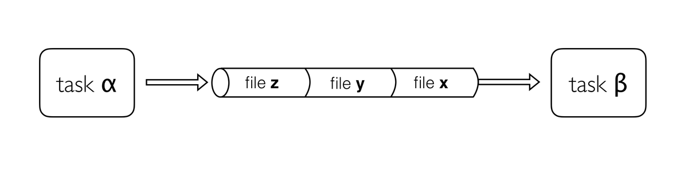
Channels are asynchronous, which means that outputs from a set of processes will not necessarily be produced in the same order as the corresponding inputs went in. However, the first element into a channel queue is the first out of the queue (First in - First out). This allows processes to run as soon as they receive input from a channel. Channels only send data in one direction, from a producer (a process/operator), to a consumer (another process/operator).
Channel types
Nextflow distinguishes between two different kinds of channels: queue channels and value channels.
Queue channel
Queue channels are a type of channel in which data is consumed (used up) to make input for a process/operator. Queue channels can be created in two ways:
- As the outputs of a process.
- Explicitly using channel factory methods such as channel.of or channel.fromPath.
Value channels
The second type of Nextflow channel is a value channel.
A value channel is bound to a single
value. A value channel can be used an unlimited number times since its
content is not consumed. This is also useful for processes that need to
reuse input from a channel, for example, a reference genome sequence
file that is required by multiple steps within a process, or by more
than one process.
Queue vs Value Channel.
What type of channel would you use to store the following?
- Multiple values.
- A list with one or more values.
- A single value.
- A queue channels is used to store multiple values.
- A value channel is used to store a single value, this can be a list with multiple values.
- A value channel is used to store a single value.
Create a nextflow script called to channel.nf for the
following examples. Explain that as you are just setting up channels you
do not need to add any processes or a workflow block.
Creating Channels using Channel factories
Channel factories are used to explicitly create channels. In
programming, factory methods (functions) are a programming design
pattern used to create different types of objects (in this case,
different types of channels). They are implemented for things that
represent more generalised concepts, such as a Channel.
Channel factories are called using the
Channel.<method> syntax, and return a specific
instance of a Channel.
The value Channel factory
The value factory method is used to create a value
channel. Values are put inside parentheses () to assign
them to a channel.
For example:
GROOVY
ch1 = channel.value( 'GRCh38' )
ch2 = channel.value( ['chr1', 'chr2', 'chr3', 'chr4', 'chr5'] )
ch3 = channel.value( ['chr1' : 248956422, 'chr2' : 242193529, 'chr3' : 198295559] )- Creates a value channel and binds a string to it.
- Creates a value channel and binds a list object to it that will be emitted as a single item.
- Creates a value channel and binds a map object to it that will be emitted as a single item.
The value method can only take 1 argument, however, this can be a single list or map containing several elements.
Reminder:
- A List
object can be defined by placing the values in square brackets
[]separated by a comma. - A Map
object is similar, but with
key:value pairsseparated by commas.
To view the contents of a value channel, use the view
operator. We will learn more about channel operators in a later
episode.
GROOVY
ch1 = channel.value( 'GRCh38' )
ch2 = channel.value( ['chr1', 'chr2', 'chr3', 'chr4', 'chr5'] )
ch3 = channel.value( ['chr1' : 248956422, 'chr2' : 242193529, 'chr3' : 198295559] )
ch1.view()
ch2.view()
ch3.view()Run using:
Each item in the channel is printed on a separate line.
OUTPUT
N E X T F L O W ~ version 26.04.4
Launching `channel.nf` [soggy_morse] revision: d76f25bda4
GRCh38
[chr1, chr2, chr3, chr4, chr5]
[chr1:248956422, chr2:242193529, chr3:198295559]Queue channel factory
Queue (consumable) channels can be created using the following channel factory methods.
channel.of-
channel.fromList(not discussed here) channel.fromPathchannel.fromFilePairs
The of Channel factory
When you want to create a channel containing multiple values you can
use the channel factory channel.of. channel.of
allows the creation of a queue channel with the values
specified as arguments, separated by a ,.
OUTPUT
N E X T F L O W ~ version 26.04.4
Launching `channel.nf` [lethal_lumiere] revision: 257bf43795
chr1
chr3
chr5
chr7The first line in this example creates a variable
chromosome_ch. chromosome_ch is a queue
channel containing the four values specified as arguments in the
of method. The view operator will print one
line per item in a list. Therefore the view operator on the
second line will print four lines, one for each element in the
channel:
Arguments passed to the of method can be of varying
types e.g., combinations of numbers, strings, or objects.
channel.from
You may see the method channel.from in older nextflow
scripts. This performs a similar function but is now deprecated (no
longer used), and so channel.of should be used instead.
Create a value and Queue and view channel contents
- Create a Nextflow script file called
channel.nf. - Create a Value channel
ch_vlcontaining the String'GRCh38'. - Create a Queue channel
ch_qucontaining the values 1 to 4. - Use
.view()operator on the channel objects to view the contents of the channels. - Run the code using
The fromPath channel factory
The previous channel factory methods dealt with sending general
values in a channel. A special channel factory method
fromPath is used when wanting to pass files.
The fromPath factory method creates a queue
channel containing one or more files matching a file path.
The file path (written as a quoted string) can be the location of a single file or a “glob pattern” that matches multiple files or directories.
The file path can be a relative path (path to the file from the
current directory), or an absolute path (path to the file from the
system root directory - starts with /).
The script below creates a queue channel with a single file as its content.
OUTPUT
N E X T F L O W ~ version 26.04.4
Launching `channel.nf` [scruffy_boyd] revision: 38c9d0106a
/home/workspace/amd-academy-nextflow/data/yeast/reads/ref1_2.fq.gzPlease note that the output path will be different depending on the environment.
You can also use glob syntax to specify pattern-matching behaviour for files. A glob pattern is specified as a string and is matched against directory or file names.
- An asterisk,
*, matches any number of characters (including none). - Two asterisks,
**, works like * but will also search sub directories. This syntax is generally used for matching complete paths. - Braces
{}specify a collection of subpatterns. For example:{bam,bai}matches “bam” or “bai”
For example the script below uses the *.fq.gz pattern to
create a queue channel that contains as many items as there are files
with .fq.gz extension in the data/yeast/reads
folder.
OUTPUT
N E X T F L O W ~ version 26.04.4
Launching `channel.nf` [sleepy_goldwasser] revision: 8c9ff2e3b8
/home/workspace/amd-academy-nextflow/data/yeast/reads/ref1_1.fq.gz
/home/workspace/amd-academy-nextflow/data/yeast/reads/ref3_1.fq.gz
/home/workspace/amd-academy-nextflow/data/yeast/reads/etoh60_3_1.fq.gz
/home/workspace/amd-academy-nextflow/data/yeast/reads/temp33_1_1.fq.gz
/home/workspace/amd-academy-nextflow/data/yeast/reads/etoh60_1_2.fq.gz
/home/workspace/amd-academy-nextflow/data/yeast/reads/temp33_2_1.fq.gz
/home/workspace/amd-academy-nextflow/data/yeast/reads/ref3_2.fq.gz
/home/workspace/amd-academy-nextflow/data/yeast/reads/ref2_2.fq.gz
/home/workspace/amd-academy-nextflow/data/yeast/reads/etoh60_1_1.fq.gz
/home/workspace/amd-academy-nextflow/data/yeast/reads/temp33_1_2.fq.gz
/home/workspace/amd-academy-nextflow/data/yeast/reads/temp33_2_2.fq.gz
/home/workspace/amd-academy-nextflow/data/yeast/reads/ref2_1.fq.gz
/home/workspace/amd-academy-nextflow/data/yeast/reads/etoh60_2_2.fq.gz
/home/workspace/amd-academy-nextflow/data/yeast/reads/temp33_3_2.fq.gz
/home/workspace/amd-academy-nextflow/data/yeast/reads/etoh60_2_1.fq.gz
/home/workspace/amd-academy-nextflow/data/yeast/reads/temp33_3_1.fq.gz
/home/workspace/amd-academy-nextflow/data/yeast/reads/ref1_2.fq.gz
/home/workspace/amd-academy-nextflow/data/yeast/reads/etoh60_3_2.fq.gzNote The pattern must contain at least a star wildcard character.
You can change the behaviour of channel.fromPath method
by changing its options. A list of .fromPath options is
shown below.
Available fromPath options:
| Name | Description |
|---|---|
| glob | When true, the characters *, ?,
[] and {} are interpreted as glob wildcards,
otherwise they are treated as literal characters (default: true) |
| type | The type of file paths matched by the string, either
file, dir or any (default:
file) |
| hidden | When true, hidden files are included in the resulting paths (default: false) |
| maxDepth | Maximum number of directory levels to visit (default: no limit) |
| followLinks | When true, symbolic links are followed during directory tree traversal, otherwise they are managed as files (default: true) |
| relative | When true returned paths are relative to the top-most common directory (default: false) |
| checkIfExists | When true throws an exception if the specified path does not exist in the file system (default: false) |
We can change the default options for the fromPath
method to give an error if the file doesn’t exist using the
checkIfExists parameter. In Nextflow, method parameters are
separated by a , and parameter values specified with a
colon :.
If we execute a Nextflow script with the contents below, it will run and not produce an output, or an error message that the file does not exist. This is likely not what we want.
OUTPUT
N E X T F L O W ~ version 26.04.4
Launching `channel.nf` [grave_montalcini] revision: d97baf9fbc
Add the argument checkIfExists with the value
true.
This will give an error as there is no data/virus directory.
OUTPUT
N E X T F L O W ~ version 26.04.4
Launching `channel.nf` [determined_lalande] revision: a2ca8c5954
ERROR ~ No files match pattern `*.fq.gz` at path: data/virus/reads/
-- Check '.nextflow.log' file for detailsUsing channel.fromPath
- Create a Nextflow script
channel_fromPath.nf - Use the
channel.fromPathmethod to create a channel containing all files in thedata/yeast/directory, including the subdirectories. - Add the parameter to include any hidden files.
- Then print all file names using the
viewoperator.
Hint: You need two asterisks, i.e. **,
to search subdirectories.
OUTPUT
N E X T F L O W ~ version 26.04.4
Launching `channel.nf` [small_galileo] revision: e7478b2ac9
/home/workspace/amd-academy-nextflow/data/yeast/transcriptome/Saccharomyces_cerevisiae.R64-1-1.cdna.all.fa.gz
/home/workspace/amd-academy-nextflow/data/yeast/bams/ref1.bam
/home/workspace/amd-academy-nextflow/data/yeast/bams/temp33_2.bam
/home/workspace/amd-academy-nextflow/data/yeast/bams/temp33_1.bam
/home/workspace/amd-academy-nextflow/data/yeast/bams/etoh60_1.bam
/home/workspace/amd-academy-nextflow/data/yeast/bams/temp33_3.bam
/home/workspace/amd-academy-nextflow/data/yeast/bams/ref1.bam.bai
/home/workspace/amd-academy-nextflow/data/yeast/bams/ref2.bam
/home/workspace/amd-academy-nextflow/data/yeast/bams/ref3.bam
/home/workspace/amd-academy-nextflow/data/yeast/bams/etoh60_2.bam
/home/workspace/amd-academy-nextflow/data/yeast/bams/etoh60_3.bam
/home/workspace/amd-academy-nextflow/data/yeast/samples.csv
/home/workspace/amd-academy-nextflow/data/yeast/reads/ref1_1.fq.gz
/home/workspace/amd-academy-nextflow/data/yeast/reads/ref3_1.fq.gz
/home/workspace/amd-academy-nextflow/data/yeast/reads/etoh60_3_1.fq.gz
/home/workspace/amd-academy-nextflow/data/yeast/reads/temp33_1_1.fq.gz
/home/workspace/amd-academy-nextflow/data/yeast/reads/etoh60_1_2.fq.gz
/home/workspace/amd-academy-nextflow/data/yeast/reads/temp33_2_1.fq.gz
/home/workspace/amd-academy-nextflow/data/yeast/reads/ref3_2.fq.gz
/home/workspace/amd-academy-nextflow/data/yeast/reads/ref2_2.fq.gz
/home/workspace/amd-academy-nextflow/data/yeast/reads/etoh60_1_1.fq.gz
/home/workspace/amd-academy-nextflow/data/yeast/reads/temp33_1_2.fq.gz
/home/workspace/amd-academy-nextflow/data/yeast/reads/temp33_2_2.fq.gz
/home/workspace/amd-academy-nextflow/data/yeast/reads/ref2_1.fq.gz
/home/workspace/amd-academy-nextflow/data/yeast/reads/etoh60_2_2.fq.gz
/home/workspace/amd-academy-nextflow/data/yeast/reads/temp33_3_2.fq.gz
/home/workspace/amd-academy-nextflow/data/yeast/reads/etoh60_2_1.fq.gz
/home/workspace/amd-academy-nextflow/data/yeast/reads/temp33_3_1.fq.gz
/home/workspace/amd-academy-nextflow/data/yeast/reads/ref1_2.fq.gz
/home/workspace/amd-academy-nextflow/data/yeast/reads/etoh60_3_2.fq.gz
/home/workspace/amd-academy-nextflow/data/yeast/.hidden_file.txtThe fromFilePairs channel factory
We have seen how to process files individually using
fromPath. In Bioinformatics we often want to process files
in pairs or larger groups, such as read pairs in sequencing.
For example is the data/yeast/reads directory we have
nine groups of read pairs.
| Sample group | read1 | read2 |
|---|---|---|
| ref1 | data/yeast/reads/ref1_1.fq.gz | data/yeast/reads/ref1_2.fq.gz |
| ref2 | data/yeast/reads/ref2_1.fq.gz | data/yeast/reads/ref2_2.fq.gz |
| ref3 | data/yeast/reads/ref3_1.fq.gz | data/yeast/reads/ref3_2.fq.gz |
| temp33_1 | data/yeast/reads/temp33_1_1.fq.gz | data/yeast/reads/temp33_1_2.fq.gz |
| temp33_2 | data/yeast/reads/temp33_2_1.fq.gz | data/yeast/reads/temp33_2_2.fq.gz |
| temp33_3 | data/yeast/reads/temp33_3_1.fq.gz | data/yeast/reads/temp33_3_2.fq.gz |
| etoh60_1 | data/yeast/reads/etoh60_1_1.fq.gz | data/yeast/reads/etoh60_1_2.fq.gz |
| etoh60_2 | data/yeast/reads/etoh60_2_1.fq.gz | data/yeast/reads/etoh60_2_2.fq.gz |
| etoh60_3 | data/yeast/reads/etoh60_3_1.fq.gz | data/yeast/reads/etoh60_3_2.fq.gz |
Nextflow provides a convenient Channel factory method for this common
bioinformatics use case. The fromFilePairs method creates a
queue channel containing a tuple for every set of files
matching a specific glob pattern (e.g.,
/path/to/*_{1,2}.fq.gz).
A tuple is a grouping of data, represented as a Groovy
List.
- The first element of the tuple emitted from
fromFilePairsis a string based on the shared part of the filenames (i.e., the*part of the glob pattern). - The second element is the list of files matching the remaining part
of the glob pattern (i.e., the
<string>_{1,2}.fq.gzpattern). This will include any files ending_1.fq.gzor_2.fq.gz.
OUTPUT
N E X T F L O W ~ version 26.04.4
Launching `channel.nf` [spontaneous_austin] revision: f316adcbf0
[ref3, [/home/workspace/amd-academy-nextflow/data/yeast/reads/ref3_1.fq.gz, /home/workspace/amd-academy-nextflow/data/yeast/reads/ref3_2.fq.gz]]
[etoh60_1, [/home/workspace/amd-academy-nextflow/data/yeast/reads/etoh60_1_1.fq.gz, /home/workspace/amd-academy-nextflow/data/yeast/reads/etoh60_1_2.fq.gz]]
[temp33_1, [/home/workspace/amd-academy-nextflow/data/yeast/reads/temp33_1_1.fq.gz, /home/workspace/amd-academy-nextflow/data/yeast/reads/temp33_1_2.fq.gz]]
[temp33_2, [/home/workspace/amd-academy-nextflow/data/yeast/reads/temp33_2_1.fq.gz, /home/workspace/amd-academy-nextflow/data/yeast/reads/temp33_2_2.fq.gz]]
[ref2, [/home/workspace/amd-academy-nextflow/data/yeast/reads/ref2_1.fq.gz, /home/workspace/amd-academy-nextflow/data/yeast/reads/ref2_2.fq.gz]]
[etoh60_2, [/home/workspace/amd-academy-nextflow/data/yeast/reads/etoh60_2_1.fq.gz, /home/workspace/amd-academy-nextflow/data/yeast/reads/etoh60_2_2.fq.gz]]
[temp33_3, [/home/workspace/amd-academy-nextflow/data/yeast/reads/temp33_3_1.fq.gz, /home/workspace/amd-academy-nextflow/data/yeast/reads/temp33_3_2.fq.gz]]
[ref1, [/home/workspace/amd-academy-nextflow/data/yeast/reads/ref1_1.fq.gz, /home/workspace/amd-academy-nextflow/data/yeast/reads/ref1_2.fq.gz]]
[etoh60_3, [/home/workspace/amd-academy-nextflow/data/yeast/reads/etoh60_3_1.fq.gz, /home/workspace/amd-academy-nextflow/data/yeast/reads/etoh60_3_2.fq.gz]]This will produce a queue channel, read_pair_ch ,
containing nine elements.
Each element is a tuple that has;
- string value (the file prefix matched, e.g
temp33_1) - and a list with the two files e,g.
[data/yeast/reads/temp33_1_1.fq.gz, data/yeast/reads/temp33_1_2.fq.gz].
The asterisk character *, matches any number of
characters (including none), and the {} braces specify a
collection of subpatterns. Therefore the *_{1,2}.fq.gz
pattern matches any file name ending in _1.fq.gz or
_2.fq.gz .
What if you want to capture more than a pair?
If you want to capture more than two files for a pattern you will
need to change the default size argument (the default value
is 2) to the number of expected matching files.
For example in the directory data/yeast/reads there are
six files with the prefix ref. If we want to group (create
a tuple) for all of these files we could write;
GROOVY
read_group_ch = channel.fromFilePairs('data/yeast/reads/ref{1,2,3}*',size:6)
read_group_ch.view()The code above will create a queue channel containing one element. The element is a tuple of which contains a string value, that is the pattern ref, and a list of six files matching the pattern.
OUTPUT
N E X T F L O W ~ version 26.04.4
Launching `channel.nf` [serene_mccarthy] revision: c16078569d
[ref, [/home/workspace/amd-academy-nextflow/data/yeast/reads/ref1_1.fq.gz, /home/workspace/amd-academy-nextflow/data/yeast/reads/ref1_2.fq.gz, /home/workspace/amd-academy-nextflow/data/yeast/reads/ref2_1.fq.gz, /home/workspace/amd-academy-nextflow/data/yeast/reads/ref2_2.fq.gz, /home/workspace/amd-academy-nextflow/data/yeast/reads/ref3_1.fq.gz, /home/workspace/amd-academy-nextflow/data/yeast/reads/ref3_2.fq.gz]]See more information about the channel factory
fromFilePairs here
More complex patterns
If you need to match more complex patterns you should create a sample sheet specifying the files and create a channel from that. This will be covered in the operator episode.
Create a channel containing groups of files
- Create a Nextflow script file
channel_fromFilePairs.nf. - Use the
fromFilePairsmethod to create a channel containing three tuples. Each tuple will contain the pairs of fastq reads for the three temp33 samples in thedata/yeast/readsdirectory
OUTPUT
N E X T F L O W ~ version 21.04.0
Launching `channels.nf` [stupefied_lumiere] - revision: a3741edde2
[temp33_1, [data/yeast/reads/temp33_1_1.fq.gz, data/yeast/reads/temp33_1_2.fq.gz]]
[temp33_3, [data/yeast/reads/temp33_3_1.fq.gz, data/yeast/reads/temp33_3_2.fq.gz]]
[temp33_2, [data/yeast/reads/temp33_2_1.fq.gz, data/yeast/reads/temp33_2_2.fq.gz]]- Channels must be used to import data into Nextflow.
- Nextflow has two different kinds of channels: queue channels and value channels.
- Data in value channels can be used multiple times in workflow.
- Data in queue channels are consumed when they are used by a process or an operator.
- Channel factory methods, such as
channel.of, are used to create channels. - Channel factory methods have optional parameters e.g.,
checkIfExists, that can be used to alter the creation and behaviour of a channel.
Content from Processes
Last updated on 2026-07-17 | Edit this page
Estimated time: 45 minutes
Overview
Questions
- How do I run tasks/processes in Nextflow?
- How do I get data, files and values, into a processes?
Objectives
- Understand how Nextflow uses processes to execute tasks.
- Create a Nextflow process.
- Define inputs to a process.
Processes
We now know how to create and use Channels to send data around a workflow. We will now see how to run tasks within a workflow using processes.
A process is the way Nextflow executes commands you
would run on the command line or custom scripts.
A process can be thought of as a particular step in a workflow, e.g. an alignment step in RNA-seq analysis. Processes are independent of each other (don’t require any another process to execute) and can not communicate/write to each other. Data is passed between processes via input and output Channels.
For example, below is the command you would run to count the number of sequence records in a FASTA format file such as the yeast transcriptome:
FASTA format
FASTA format is a text-based format for representing either nucleotide sequences or peptide sequences. A sequence in FASTA format begins with a single-line description, followed by lines of sequence data. The description line is distinguished from the sequence data by a greater-than (“>”) symbol in the first column.
zgrep -c ‘^>’
The command
zgrep -c '^>' data/bacteria/assemblies/Sample01.contigs.fa.gz
is used in Unix-like systems for a specific purpose: it counts the
number of sequences in a compressed FASTA file. The tool
zgrep combines the functionalities of ‘grep’ for pattern
searching and ‘gzip’ for handling compressed files. The -c
option modifies this command to count the occurrences of lines matching
the pattern, instead of displaying them. The pattern
'^>' is designed to find lines that start with ‘>’,
which in FASTA files, denotes the beginning of a new sequence. Thus,
this command efficiently counts how many sequences are contained within
the specified compressed FASTA file.
OUTPUT
131Now we will show how to convert this into a simple Nextflow process.
Process definition
The process definition starts with keyword process,
followed by process name, in this case NUMSEQ, and finally
the process body delimited by curly brackets
{}. The process body must contain a string which represents
the command or, more generally, a script that is executed by it.
GROOVY
process NUMSEQ {
script:
"zgrep -c '^>' ${projectDir}/data/bacteria/assemblies/Sample01.contigs.fa.gz"
}This process would run once.
Implicit variables
We use the Nextflow implicit variable ${projectDir} to
specify the directory where the main script is located. This is
important as Nextflow scripts are executed in a separate working
directory. A full list of implicit variables can be found here
To add the process to a workflow add a workflow block,
and call the process like a function. We will learn more about the
workflow block in the workflow episode.
From the scripts/process directory, copy the
process_01.nf script to the current directory and open it
using the VS Code Explorer panel on the left.
GROOVY
process NUMSEQ {
script:
"zgrep -c '^>' ${projectDir}/data/bacteria/assemblies/Sample01.contigs.fa.gz"
}
workflow {
//process is called like a function in the workflow block
NUMSEQ()
}We can now run the process:
Note We need to add the Nextflow run option
-process.debug to print the output to the terminal.
OUTPUT
N E X T F L O W ~ version 26.04.4
Launching `process_01.nf` [backstabbing_leibniz] revision: 2de03f9245
executor > local (1)
[1d/373f53] process > NUMSEQ [100%] 1 of 1 ✔
131GROOVY
process COUNT_BASES {
script:
"""
zgrep -v '^>' ${projectDir}/data/yeast/transcriptome/Saccharomyces_cerevisiae.R64-1-1.cdna.all.fa.gz|tr -d '\n'|wc -m
"""
}
workflow {
COUNT_BASES()
}OUTPUT
N E X T F L O W ~ version 26.04.4
Launching `process_exercise_simple_process.nf` [reverent_yonath] revision: d71685d57b
executor > local (1)
[fd/6098d1] COUNT_BASES [100%] 1 of 1 ✔
4059459Definition blocks
The previous example was a simple process with no
defined inputs and outputs that ran only once. To control inputs,
outputs and how a command is executed a process may contain five
definition blocks:
- directives - 0, 1, or more: allow the definition of optional settings that affect the execution of the current process e.g. the number of cpus a task uses and the amount of memory allocated.
- inputs - 0, 1, or more: Define the input dependencies, usually channels, which determines the number of times a process is executed.
- outputs - 0, 1, or more: Defines the output channels used by the process to send results/data produced by the process.
- when clause - optional: Allows you to define a condition that must be verified in order to execute the process.
- script block - required: A statement within quotes that defines the commands that are executed by the process to carry out its task.
The syntax is defined as follows:
Script
At minimum a process block must contain a script
block.
The script block is a String “statement” that defines
the command that is executed by the process to carry out its task. These
are normally the commands you would run on a terminal.
A process contains only one script block, and it must be
the last statement when the process contains input and
output declarations.
The script block can be a simple one line string in
quotes e.g.
GROOVY
process NUMSEQ {
script:
"zgrep -c '^>' ${projectDir}/data/bacteria/assemblies/Sample01.contigs.fa.gz"
}
workflow {
NUMSEQ()
}Or, for commands that span multiple lines you can encase the command
in triple quotes """.
From the scripts/process directory, copy the
process_multi_line.nf script to the current directory and
open it using the VS Code Explorer panel on the left. Then run the
pipeline.
GROOVY
process NUMSEQ_COV {
script:
"""
zgrep '^>' ${projectDir}/data/bacteria/assemblies/Sample01.contigs.fa.gz > ids.txt
zgrep -c 'cov=10.' ids.txt
"""
}
workflow {
NUMSEQ_COV()
}OUTPUT
N E X T F L O W ~ version 26.04.4
Launching `process_multi_line.nf` [marvelous_brattain] revision: 250146646a
executor > local (1)
[a8/51b300] NUMSEQ_COV [100%] 1 of 1 ✔
7Associated scripts
Scripts such as the one in the example below,
process_reads.py, can be stored in a bin
folder at the same directory level as the Nextflow workflow script that
invokes them, and given execute permission. Nextflow will automatically
add this folder to the PATH environment variable. To invoke
the script in a Nextflow process, simply use its filename on its own
rather than invoking the interpreter e.g. process_reads.py
instead of python process_reads.py. Note
The script process_reads.py must be executable to run.
PYTHON
#!/usr/bin/env python
# process_reads.py
import gzip
import sys
reads = 0
bases = 0
with gzip.open(sys.argv[1], 'rb') as read:
for id in read:
seq = next(read)
reads += 1
bases += len(seq.strip())
next(read)
next(read)
print("reads", reads)
print("bases", bases)Once the python script has been created, best practice is to move it to the bin directory. More information about bin can be found here.
From the scripts/process directory, copy the
process_python_script.nf script to the current directory
and open it using the VS Code Explorer panel on the left. Then run the
pipeline.
GROOVY
process PROCESS_READS {
script:
"""
process_reads.py ${projectDir}/data/yeast/reads/ref1_1.fq.gz
"""
}
workflow {
PROCESS_READS()
}OUTPUT
N E X T F L O W ~ version 26.04.4
Launching `process_python.nf` [focused_mayer] revision: 265e013d19
executor > local (1)
[a1/397f9d] process > PROCESS_READS [100%] 1 of 1 ✔
reads 14677
bases 1482377Associated scripts
Scripts such as the one in the example above,
process_reads.py, can be stored in a bin
folder at the same directory level as the Nextflow workflow script that
invokes them, and given execute permission. Nextflow will automatically
add this folder to the PATH environment variable. To invoke
the script in a Nextflow process, simply use its filename on its own
rather than invoking the interpreter e.g. process_reads.py
instead of python process_reads.py. More information about
bin can be found here.
Script parameters
The command in the script block can be defined
dynamically using Nextflow variables e.g. ${projectDir}. To
reference a variable in the script block you can use the $
in front of the Nextflow variable name, and additionally you can add
{} around the variable name
e.g. ${projectDir}.
Variable substitutions
Similar to bash scripting Nextflow uses the $ character
to introduce variable substitutions. The variable name to be expanded
may be enclosed in braces {variable_name}, which are
optional but serve to protect the variable to be expanded from
characters immediately following it which could be interpreted as part
of the name. It is a good rule of thumb to always use the
{} syntax because it enhances readability and clarity,
ensures correct variable interpretation, and prevents potential syntax
errors in complex expressions.
We saw in the parameter episode the use of a special Nextflow
variable params that can be used to assign values from the
command line. You would do this by adding a key name to the params
variable and specifying a value, like
params.keyname = value
From the scripts/process directory, copy the
process_script_params.nf script to the current directory
and open it using the VS Code Explorer panel on the left.
GROOVY
params.cov = 10
process CONTIG_COV {
script:
"""
printf 'Number of contigs with coverage '${params.cov}':'
zgrep -c 'cov=${params.cov}.' ${projectDir}/data/bacteria/assemblies/Sample01.contigs.fa.gz
"""
}
workflow {
CONTIG_COV()
}In this example we define the variable params.cov with a
default value of 10.
Params can be adjusted with a params file or on the command line. The following will adjust the “cov” param to the value of “15” instead of the default of 10.
OUTPUT
N E X T F L O W ~ version 26.04.4
Launching `process_script_params.nf` [deadly_goodall] revision: 1c5444d01b
executor > local (1)
[77/02bff9] CONTIG_COV [100%] 1 of 1 ✔
Number of contigs with coverage 10:7Script parameters
Copy the process_exercise_script_params.nf script from
scripts/process to the current directory.
GROOVY
process COUNT_BASES {
script:
"""
zgrep -v '^>' ${projectDir}/data/bacteria/assemblies/Sample01.contigs.fa.gz|grep -o A|wc -l
"""
}
workflow {
COUNT_BASES()
}Add a parameter params.base to the script and uses the
variable ${param.base} insides the script. Run the pipeline
using a base value of C using the --base
command line option.
Note: The Nextflow option
-process.debug will print the process’ stdout to the
terminal.
GROOVY
params.base='A'
process COUNT_BASES {
script:
"""
zgrep -v '^>' ${projectDir}/data/bacteria/assemblies/Sample01.contigs.fa.gz|grep -o ${params.base}|wc -l
"""
}
workflow {
COUNT_BASES()
}OUTPUT
N E X T F L O W ~ version 26.04.4
Launching `process_exercise_script_params.nf` [hungry_bartik] revision: 951e348b58
executor > local (1)
[71/0de865] COUNT_BASES [100%] 1 of 1 ✔
795309Bash variables
Nextflow uses the same Bash syntax for variable substitutions,
$variable, in strings. However, Bash variables need to be
escaped using \ character in front of
\$variable name.
In the example below we will set a bash variable NUMIDS
then echo the value of NUMIDS.
From the scripts/process directory, copy the
process_escape_bash.nf script to the current directory and
open it using the VS Code Explorer panel on the left. Then run the
pipeline.
GROOVY
process NUM_IDS {
script:
"""
#set bash variable NUMIDS
NUMIDS=`zgrep -c '^>' $params.fasta`
echo 'Number of sequences'
printf "%'d\n" \$NUMIDS
"""
}
params.fasta = "${projectDir}/data/bacteria/assemblies/Sample01.contigs.fa.gz"
workflow {
NUM_IDS()
}OUTPUT
N E X T F L O W ~ version 26.04.4
Launching `process_shell.nf` [chaotic_bassi] revision: d3fc993072
executor > local (1)
[d1/3401f2] NUM_IDS [100%] 1 of 1 ✔
Number of sequences
131Shell
Another alternative is to use a shell block definition
instead of script. When using the shell
statement Bash variables are referenced in the normal way
$my_bash_variable; However, the shell
statement uses a different syntax for Nextflow variable substitutions:
!{nextflow_variable}, which is needed to use both Nextflow
and Bash variables in the same script.
Conditional script execution
Sometimes you want to change how a process is run depending on some
condition. In Nextflow scripts we can use conditional statements such as
the if statement or any other expression evaluating to
boolean value true or false.
If statement
The if statement uses the same syntax common to other
programming languages such Java, C, JavaScript, etc.
GROOVY
if ( < boolean expression > ) {
// true branch
}
else if ( < boolean expression > ) {
// true branch
}
else {
// false branch
}From the scripts/process directory, copy the
process_conditional.nf script to the current directory and
open it using the VS Code Explorer panel on the left.
GROOVY
params.method = 'ids'
params.fasta = "$projectDir/data/bacteria/assemblies/Sample01.contigs.fa.gz"
process COUNT {
script:
if( params.method == 'ids' ) {
"""
echo Number of sequences in fasta
zgrep -c "^>" $params.fasta
"""
}
else if( params.method == 'bases' ) {
"""
echo Number of bases in fasta
zgrep -v "^>" $params.fasta|grep -o "."|wc -l
"""
}
else {
"""
echo Unknown method $params.method
"""
}
}
workflow {
COUNT()
}This Nextflow script below will use the if statement to
change what the COUNT process counts depending on the Nextflow variable
params.method. Run the pipeline with
--method ids.
OUTPUT
N E X T F L O W ~ version 26.04.4
Launching `process_conditional.nf` [mad_moriondo] revision: c2c8fff4a9
executor > local (1)
[56/c2e3bb] COUNT [100%] 1 of 1 ✔
Number of sequences in fasta
131Adjusting params.method to a different value will adjust how the
process COUNT is run. This time run the pipeline with
--method bases.
OUTPUT
N E X T F L O W ~ version 26.04.4
Launching `process_conditional.nf` [confident_morse] revision: c2c8fff4a9
executor > local (1)
[cf/d7dce8] COUNT [100%] 1 of 1 ✔
Number of bases in fasta
4059459Inputs
Processes are isolated from each other but can communicate by sending
values and files via Nextflow channels from input and into
output blocks.
The input block defines which channels the process is
expecting to receive input from. The number of elements in input
channels determines the process dependencies and the number of times a
process executes.
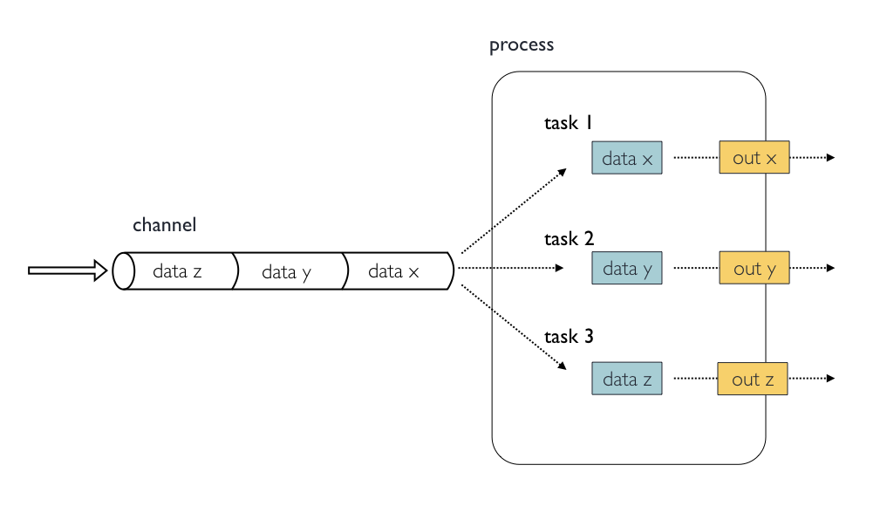
You can only define one input block at a time and it must contain one or more input declarations.
The input block follows the syntax shown below:
The input qualifier declares the type of data to be received.
Input qualifiers
-
val: Lets you access the received input value by its name as a variable in the process script. -
env: Lets you use the input value to set an environment variable named as the specified input name. -
path: Lets you handle the received value as a file, staging the file properly in the execution context. -
stdin: Lets you forward the received value to the process stdin special file. -
tuple: Lets you handle a group of input values having one of the above qualifiers. -
each: Lets you execute the process for each entry in the input collection. A complete list of inputs can be found here.
Input values
The val qualifier allows you to receive value data as
input. It can be accessed in the process script by using the specified
input name.
From the scripts/process directory, copy the
process_input_value.nf script to the current directory and
open it using the VS Code Explorer panel on the left.
GROOVY
process PRINTCHR {
input:
val chr
script:
"""
echo processing chromosome $chr
"""
}
workflow {
chr_ch = channel.of( 'A' .. 'P' )
PRINTCHR(chr_ch)
}In this example the process will be executed 16 times; each time a
value is received from the queue channel chr_ch it is used
to run the process. Now run the pipeline.
OUTPUT
$ nextflow run process_input_value.nf -process.debug
N E X T F L O W ~ version 26.04.4
Launching `process_input_value.nf` [evil_austin] revision: 7a89fbe16a
executor > local (13)
[62/5a8462] process > PRINTCHR (11) [ 75%] 12 of 16
processing chromosome C
processing chromosome D
processing chromosome A
executor > local (16)
[6f/b4fbda] process > PRINTCHR (14) [100%] 16 of 16 ✔
processing chromosome C
processing chromosome D
processing chromosome A
processing chromosome B
processing chromosome H
processing chromosome F
processing chromosome G
processing chromosome E
processing chromosome J
processing chromosome I
processing chromosome L
processing chromosome K
processing chromosome M
processing chromosome O
processing chromosome P
processing chromosome NChannel order
The channel guarantees that items are delivered in the same order as they have been sent, but since the process is executed in a parallel manner, there is no guarantee that they are processed in the same order as they are received.
Input files
When you need to handle files as input, you need the
path qualifier. Using the path qualifier means
that Nextflow will stage it in the process execution directory, and it
can be accessed in the script by using the name specified in the input
declaration.
The input file name can be defined dynamically by defining the input
name as a Nextflow variable and referenced in the script using the
$variable_name syntax.
From the scripts/process directory, copy the
process_input_file.nf script to the current directory and
open it using the VS Code Explorer panel on the left.
GROOVY
process NUMLINES {
input:
path read
script:
"""
printf '${read} '
gunzip -c ${read} | wc -l
"""
}
workflow {
reads_ch = channel.fromPath( 'data/yeast/reads/ref*.fq.gz' )
NUMLINES(reads_ch)
}In this example, we assign the variable name read to the
input files using the path qualifier. The file is
referenced using the variable substitution syntax ${read}.
Now run the pipeline.
OUTPUT
N E X T F L O W ~ version 26.04.4
Launching `process_input_file.nf` [special_lumiere] revision: 3e5184f817
executor > local (6)
[b6/f08046] process > NUMLINES (5) [100%] 6 of 6 ✔
ref2_2.fq.gz 81720
ref3_1.fq.gz 52592
ref3_2.fq.gz 52592
ref1_1.fq.gz 58708
ref1_2.fq.gz 58708
ref2_1.fq.gz 81720
The input name can also be defined as a user-specified filename inside quotes.
From the scripts/process directory, copy the
process_input_file_02.nf script to the current directory
and open it using the VS Code Explorer panel on the left.
GROOVY
process NUMLINES {
input:
path 'sample.fq.gz'
script:
"""
printf 'sample.fq.gz '
gunzip -c sample.fq.gz | wc -l
"""
}
workflow {
reads_ch = channel.fromPath( 'data/yeast/reads/ref*.fq.gz' )
NUMLINES(reads_ch)
}In this example, the name of the file is specified as
'sample.fq.gz' in the input definition and can be
referenced by that name in the script block.
File Objects as inputs
When a process declares an input file, the corresponding channel
elements must be file objects, i.e. created with the path helper
function from the file specific channel factories,
e.g. channel.fromPath or
channel.fromFilePairs.
Add input channel
Copy the process_exercise_input.nf script from
scripts/process to the current directory.
- Define a Channel using
fromPathfor the transcriptomeparams.fasta.
- Add an input channel that takes the fasta channel as a file input.
- Replace
params.fastain thescript:block with the input variable you defined in theinput:definition.
GROOVY
params.cov = 10
params.fasta = "${projectDir}/data/bacteria/assemblies/Sample01.contigs.fa.gz"
process CONTIG_COV {
script:
"""
printf 'Number of contigs with coverage '${params.cov}':'
zgrep -c 'cov=${params.cov}.' ${params.fasta}
"""
}
workflow {
CONTIG_COV()
}Then run your script using:
GROOVY
params.cov = 10
params.fasta = "${projectDir}/data/bacteria/assemblies/Sample01.contigs.fa.gz"
process CONTIG_COV {
input:
path fasta
script:
"""
printf 'Number of contigs with coverage '${params.cov}':'
zgrep -c 'cov=${params.cov}.' ${fasta}
"""
}
workflow {
fasta_ch = channel.fromPath(params.fasta)
CONTIG_COV(fasta_ch)
}OUTPUT
N E X T F L O W ~ version 26.04.4
Launching `process_exercise_input.nf` [exotic_goldwasser] revision: 9c68884cb6
executor > local (1)
[3f/561f75] CONTIG_COV [100%] 1 of 1 ✔
Number of contigs with coverage 10:7Combining input channels
A key feature of processes is the ability to handle inputs from multiple channels. However, it’s important to understand how the number of items within the multiple channels affect the execution of a process.
From the scripts/process directory, copy the
process_combine.nf script to the current directory and open
it using the VS Code Explorer panel on the left.
GROOVY
process COMBINE {
input:
val x
val y
script:
"""
echo $x and $y
"""
}
workflow {
num_ch = channel.of(1, 2, 3)
letters_ch = channel.of('a', 'b', 'c')
COMBINE(num_ch, letters_ch)
}Both channels contain three elements, therefore the process is executed three times, each time with a different pair. Now run the pipeline.
OUTPUT
N E X T F L O W ~ version 26.04.4
Launching `process_combine.nf` [grave_lamarr] revision: f8aa106adf
executor > local (3)
[0c/bf6038] process > COMBINE (3) [100%] 3 of 3 ✔
3 and c
1 and a
2 and b
What is happening is that the process waits until it receives an input value from all the queue channels declared as input.
When this condition is verified, it uses up the input values coming from the respective queue channels, runs the task. This logic repeats until one or more queue channels have no more content. The process then stops.
What happens when not all channels have the same number of elements?
From the scripts/process directory, copy the
process_combine_02.nf script to the current directory and
open it using the VS Code Explorer panel on the left.
GROOVY
process COMBINE {
input:
val x
val y
script:
"""
echo $x and $y
"""
}
workflow {
ch_num = channel.of(1, 2)
ch_letters = channel.of('a', 'b', 'c', 'd')
COMBINE(ch_num, ch_letters)
}In this example the process is executed only two times, because when a queue channel has no more data to be processed it stops the process execution. Now run the pipeline.
OUTPUT
N E X T F L O W ~ version 26.04.4
Launching `process_combine_02.nf` [jovial_noyce] revision: 055487f40c
executor > local (2)
[1a/6b8fb8] process > COMBINE (1) [100%] 2 of 2 ✔
2 and b
1 and a
Value channels and process termination
Note however that value channels,
channel.value, do not affect the process termination.
To better understand this behaviour compare the previous example with the following one:
From the scripts/process directory, copy the
process_combine_03.nf script to the current directory and
open it using the VS Code Explorer panel on the left.
GROOVY
process COMBINE {
input:
val x
val y
script:
"""
echo $x and $y
"""
}
workflow {
ch_num = channel.value(1)
ch_letters = channel.of('a', 'b', 'c')
COMBINE(ch_num, ch_letters)
}In this example the process is run three times. Now run the pipeline.
OUTPUT
N E X T F L O W ~ version 26.04.4
Launching `process_combine_03.nf` [curious_torvalds] revision: b6f88a2a67
executor > local (3)
[10/ed7a99] process > COMBINE (3) [100%] 3 of 3 ✔
1 and c
1 and a
1 and b
GROOVY
process COMBINE {
input:
path fasta
val cov
script:
"""
zgrep -c "cov=${cov}." ${fasta}
"""
}
workflow {
fasta_ch = channel.fromPath('data/bacteria/assemblies/Sample01.contigs.fa.gz', checkIfExists: true)
cov_ch = channel.value(10)
COMBINE(fasta_ch, cov_ch)
}OUTPUT
N E X T F L O W ~ version 26.04.4
Launching `process_exercise_combine_answer.nf` [confident_raman] revision: 9b2916fd5e
executor > local (1)
[8d/f5e792] COMBINE (1) [100%] 1 of 1 ✔
7Input repeaters
We saw previously that by default the number of times a process runs
is defined by the queue channel with the fewest items. However, the
each qualifier allows you to repeat the execution of a
process for each item in a list or a queue channel, every time new data
is received.
For example if we can fix the previous example by using the input
qualifer each for the letters queue channel:
From the scripts/process directory, copy the
process_repeat.nf script to the current directory and open
it using the VS Code Explorer panel on the left.
GROOVY
process COMBINE {
input:
val x
each y
script:
"""
echo $x and $y
"""
}
workflow {
ch_num = channel.of(1, 2)
ch_letters = channel.of('a', 'b', 'c', 'd')
COMBINE(ch_num, ch_letters)
}This process will run eight times. Now run the pipeline.
OUTPUT
N E X T F L O W ~ version 26.04.4
Launching `process_repeat.nf` [pedantic_volhard] revision: 907063e9d1
executor > local (8)
[d9/23061d] process > COMBINE (8) [100%] 8 of 8 ✔
1 and c
1 and b
1 and d
1 and a
2 and a
2 and b
2 and c
2 and d
- A Nextflow process is an independent step in a workflow.
- Processes contain up to five definition blocks including: directives, inputs, outputs, when clause and finally a script block.
- The script block contains the commands you would like to run.
- A process should have a script but the other four blocks are optional.
- Inputs are defined in the input block with a type qualifier and a name.
Content from Processes Part 2
Last updated on 2026-07-17 | Edit this page
Estimated time: 40 minutes
Overview
Questions
- How do I get data, files, and values, out of processes?
- How do I handle grouped input and output?
- How can I control when a process is executed?
- How do I control resources, such as number of CPUs and memory, available to processes?
- How do I save output/results from a process?
Objectives
- Define outputs to a process.
- Understand how to handle grouped input and output using the tuple qualifier.
- Understand how to use conditionals to control process execution.
- Use process directives to control execution of a process.
- Use the
publishDirdirective to save result files to a directory.
Outputs
We have seen how to input data into a process; now we will see how to output files and values from a process.
The output declaration block allows us to define the
channels used by the process to send out the files and values
produced.
An output block is not required, but if it is present it can contain one or more output declarations.
The output block follows the syntax shown below:
Output values
Like the input, the type of output data is defined using type qualifiers.
The val qualifier allows us to output a value defined in
the script.
Because Nextflow processes can only communicate through channels, if we want to share a value output of one process as input to another process, we would need to define that value in the output declaration block as shown in the following example:
From the scripts/process directory, copy the
process_output_value.nf script to the current directory and
open it using the VS Code Explorer panel on the left. Then run the
pipeline.
GROOVY
params.fasta="${projectDir}/data/bacteria/assemblies/Sample01.contigs.fa.gz"
process COUNT_COV {
input:
val cov
output:
val cov
script:
"""
zgrep -c "cov=${cov}." $params.fasta > cov.txt
"""
}
workflow {
cov_ch = channel.of(10..20)
COUNT_COV(cov_ch)
// use the view operator to display contents of the channel
COUNT_COV.out.view()
}OUTPUT
N E X T F L O W ~ version 26.04.4
Launching `process_output_value.nf` [high_faggin] revision: 9f487585ba
executor > local (11)
[2b/e1a841] process > COUNT_COV (2) [100%] 11 of 11 ✔
12
19
18
13
16
15
17
20
10
14
11Output files
If we want to capture a file instead of a value as output we can use
the path qualifier that can capture one or more files
produced by the process, over the specified channel.
From the scripts/process directory, copy the
process_output_file.nf script to the current directory and
open it using the VS Code Explorer panel on the left. Then run the
pipeline.
GROOVY
params.fasta="${projectDir}/data/bacteria/assemblies/Sample01.contigs.fa.gz"
process COUNT_COV {
input:
val cov
output:
path "contigs_cov_${cov}.txt"
script:
"""
zgrep -c "cov=${cov}." $params.fasta > contigs_cov_${cov}.txt
"""
}
workflow {
cov_ch = channel.of(10..20)
COUNT_COV(cov_ch)
// use the view operator to display contents of the channel
COUNT_COV.out.view()
}In this example the process COUNT_COV creates a file
named contigs_cov_<cov>.txt in the work directory
containing the number of contigs with that coverage.
Since a file parameter using the same name,
contigs_cov_<cov>.txt, is declared in the output
block, when the task is completed that file is sent over the output
channel.
A downstream operator, such as .view or a
process declaring the same channel as input will be able to
receive it.
Now run the pipeline.
OUTPUT
N E X T F L O W ~ version 26.04.4
Launching `process_output_file.nf` [gloomy_noyce] revision: dad85f58cb
executor > local (11)
[f8/f9907c] process > COUNT_COV (2) [100%] 11 of 11 ✔
/home/workspace/amd-academy-nextflow/work/fa/f6c534e8639dfc43cf285729a25a55/contigs_cov_10.txt
/home/workspace/amd-academy-nextflow/work/33/179ccfbbae1d01944b72b976f73e2a/contigs_cov_14.txt
/home/workspace/amd-academy-nextflow/work/be/4620c07783ab80acbf71a11dc8773c/contigs_cov_16.txt
/home/workspace/amd-academy-nextflow/work/a2/9c0730e91f86eaf11965a99ae622b1/contigs_cov_18.txt
/home/workspace/amd-academy-nextflow/work/f0/fa91cbc0469a807c4d7ac7ac0260d1/contigs_cov_19.txt
/home/workspace/amd-academy-nextflow/work/7e/8606989b63cb62e8eeb1b8ab54f1c3/contigs_cov_13.txt
/home/workspace/amd-academy-nextflow/work/d1/41cb1b97f959b0119c605030b795f8/contigs_cov_15.txt
/home/workspace/amd-academy-nextflow/work/d9/ffb1295327303a5d6981c8e3d72fe1/contigs_cov_20.txt
/home/workspace/amd-academy-nextflow/work/e2/c86ea2c219bfaafce94e57efe49204/contigs_cov_17.txt
/home/workspace/amd-academy-nextflow/work/20/cb2cf84d651c0bd0381a8aff88d6ec/contigs_cov_12.txt
/home/workspace/amd-academy-nextflow/work/f8/f9907cf4861acde8d2c6b94809c1d1/contigs_cov_11.txtMultiple output files
When an output file name contains a * or ?
metacharacter it is interpreted as a pattern match. This allows us to
capture multiple files into a list and output them as a one item
channel.
For example, here we will capture the files
sequence_ids.txt and sequence.txt produced as
results from SPLIT_FASTA in the output channel.
From the scripts/process directory, copy the
process_output_multiple.nf script to the current directory
and open it using the VS Code Explorer panel on the left. Then run the
pipeline.
GROOVY
params.fasta="${projectDir}/data/bacteria/assemblies/Sample01.contigs.fa.gz"
process SPLIT_FASTA {
input:
path fasta
output:
path "*"
script:
"""
zgrep '^>' $fasta > sequence_ids.txt
zgrep -v '^>' $fasta > sequence.txt
"""
}
workflow {
fasta_ch = channel.fromPath(params.fasta)
SPLIT_FASTA(fasta_ch)
// use the view operator to display contents of the channel
SPLIT_FASTA.out.view()
}Now run the pipeline, this time without
-process.debug.
OUTPUT
N E X T F L O W ~ version 26.04.4
Launching `process_output_multiple.nf` [serene_legentil] revision: 099d5fe1df
executor > local (1)
[72/5bce13] process > SPLIT_FASTA (1) [100%] 1 of 1 ✔
[/home/workspace/amd-academy-nextflow/work/72/5bce13f434d3de4f78501bb2a0d2a6/sequence.txt, /home/workspace/amd-academy-nextflow/work/72/5bce13f434d3de4f78501bb2a0d2a6/sequence_ids.txt]Note: There are some caveats on glob pattern behaviour:
- Input files are not included in the list of possible matches.
- Glob pattern matches against both files and directories path.
- When a two stars pattern
**is used to recurse through subdirectories, only file paths are matched i.e. directories are not included in the result list.
Output channels
From the scripts/process directory, copy the
process_exercise_output.nf script to the current directory
and modify it to include an output block that captures the different
output file contigs_cov_${cov}_seqids.txt.
GROOVY
process EXTRACT_IDS {
input:
path fasta
each cov
//add output block here to capture the file "contigs_cov_${cov}_seqids.txt"
script:
"""
zgrep -c "cov=${cov}." ${fasta} > contigs_cov_${cov}.txt
"""
}
workflow {
fasta_ch = channel.fromPath('data/bacteria/assemblies/Sample01.contigs.fa.gz')
cov_ch = channel.of(10..20)
EXTRACT_IDS(fasta_ch, cov_ch)
EXTRACT_IDS.out.view()
}GROOVY
process EXTRACT_IDS {
input:
path fasta
each cov
//add output block here to capture the file "contigs_cov_${cov}_seqids.txt"
output:
path "contigs_cov_${cov}.txt"
script:
"""
zgrep "cov=${cov}." ${fasta} > contigs_cov_${cov}.txt
"""
}
workflow {
fasta_ch = channel.fromPath('data/bacteria/assemblies/Sample01.contigs.fa.gz')
cov_ch = channel.of(10..20)
EXTRACT_IDS(fasta_ch, cov_ch)
EXTRACT_IDS.out.view()
}OUTPUT
N E X T F L O W ~ version 26.04.4
Launching `process_exercise_output.nf` [prickly_nightingale] revision: bd3f39f7a0
executor > local (11)
[2a/a8f9c8] process > EXTRACT_IDS (5) [100%] 11 of 11 ✔
/home/workspace/amd-academy-nextflow/work/f3/8be649e9072fe3037cba931418b226/contigs_cov_17.txt
/home/workspace/amd-academy-nextflow/work/39/c565b72bd126f6d5cc722a854f28b9/contigs_cov_16.txt
/home/workspace/amd-academy-nextflow/work/4e/26f5606cd343c8f828ce0db11f4be1/contigs_cov_19.txt
/home/workspace/amd-academy-nextflow/work/4a/eaf3f6fabd6c1643fc96950aa57cca/contigs_cov_11.txt
/home/workspace/amd-academy-nextflow/work/d2/2f2c17565a2576d07d676fca1c8dac/contigs_cov_12.txt
/home/workspace/amd-academy-nextflow/work/95/790ab22f4bd7c662847cbc24ae1b53/contigs_cov_15.txt
/home/workspace/amd-academy-nextflow/work/53/400f374f2691acebb90874c4fac11e/contigs_cov_18.txt
/home/workspace/amd-academy-nextflow/work/90/e5c7a838bef5f169272eb15c023dcb/contigs_cov_13.txt
/home/workspace/amd-academy-nextflow/work/39/0ceb5e90e40ec66ff0134220278bc1/contigs_cov_20.txt
/home/workspace/amd-academy-nextflow/work/d5/1414bb9558bbafab9981e0cee649ab/contigs_cov_10.txt
/home/workspace/amd-academy-nextflow/work/2a/a8f9c85c746c2e43090e1ed2ffc1f6/contigs_cov_14.txtGrouped inputs and outputs
So far we have seen how to declare multiple input and output
channels, but each channel was handling only one value at time. However
Nextflow can handle groups of values using the tuple
qualifiers.
In tuples the first item is the grouping key and the second item is the list.
[group_key,[file1,file2,...]]When using channel containing a tuple, such a one created with
.filesFromPairs factory method, the corresponding input
declaration must be declared with a tuple qualifier,
followed by definition of each item in the tuple.
From the scripts/process directory, copy the
process_tuple_input.nf script to the current directory and
open it using the VS Code Explorer panel on the left. Then run the
pipeline.
GROOVY
process TUPLEINPUT{
input:
tuple val(sample_id), path(reads)
script:
"""
echo $sample_id
echo $reads
"""
}
workflow {
reads_ch = channel.fromFilePairs( 'data/yeast/reads/ref1_{1,2}.fq.gz' )
TUPLEINPUT( reads_ch )
}This outputs:
OUTPUT
N E X T F L O W ~ version 26.04.4
Launching `process_tuple_input.nf` [tender_fourier] revision: 573e8ac965
executor > local (1)
[52/43067e] process > TUPLEINPUT (1) [100%] 1 of 1 ✔
ref1
ref1_1.fq.gz ref1_2.fq.gz
In the same manner an output channel containing tuple of values can
be declared using the tuple qualifier following by the
definition of each tuple element in the tuple.
In the code snippet below the output channel would contain a tuple
with the grouping key value as the Nextflow variable
sample_id and a list containing the files matching the
following pattern "${sample_id}.fq.gz".
From the scripts/process directory, copy the
process_tuple_io.nf script to the current directory and
open it using the VS Code Explorer panel on the left. Then run the
pipeline.
GROOVY
process COMBINE_FQ {
input:
tuple val(sample_id), path(reads)
output:
tuple val(sample_id), path("${sample_id}.fq.gz")
script:
"""
cat $reads > ${sample_id}.fq.gz
"""
}
workflow {
reads_ch = channel.fromFilePairs('data/yeast/reads/ref1_{1,2}.fq.gz')
COMBINE_FQ(reads_ch)
COMBINE_FQ.out.view()
}The output is now a tuple containing the sample id and the combined fastq files.
OUTPUT
N E X T F L O W ~ version 26.04.4
Launching `process_tuple_io.nf` [loquacious_sinoussi] revision: f996b37474
executor > local (1)
[d7/363b07] process > COMBINE_FQ (1) [100%] 1 of 1 ✔
[ref1, /home/workspace/amd-academy-nextflow/work/d7/363b07b508064d1c01a43d53ddfef6/ref1.fq.gz]
Composite inputs and outputs
Fill in the blank ___ input and output qualifiers for
process_exercise_tuple.nf. Note: the
output for the COMBINE_REPS process.
GROOVY
//process_exercise_tuple.nf
process COMBINE_REPS {
input:
tuple ___(sample_id), ___(reads)
output:
tuple ___(sample_id), ___("*.fq.gz")
script:
"""
cat *_1.fq.gz > ${sample_id}_R1.fq.gz
cat *_2.fq.gz > ${sample_id}_R2.fq.gz
"""
}
workflow{
reads_ch = channel.fromFilePairs('data/yeast/reads/ref{1,2,3}*.fq.gz',size:-1)
COMBINE_REPS(reads_ch)
COMBINE_REPS.out.view()
}GROOVY
process COMBINE_REPS {
input:
tuple val(sample_id), path(reads)
output:
tuple val(sample_id), path("*.fq.gz")
script:
"""
cat *_1.fq.gz > ${sample_id}_R1.fq.gz
cat *_2.fq.gz > ${sample_id}_R2.fq.gz
"""
}
workflow{
reads_ch = channel.fromFilePairs('data/yeast/reads/ref{1,2,3}*.fq.gz',size:-1)
COMBINE_REPS(reads_ch)
COMBINE_REPS.out.view()
}OUTPUT
N E X T F L O W ~ version 26.04.4
Launching `process_exercise_tuple_answer.nf` [nostalgic_jepsen] revision: b61fdd3487
executor > local (1)
[5f/9e3b67] process > COMBINE_REPS (1) [100%] 1 of 1 ✔
[ref, [/home/workspace/amd-academy-nextflow/work/5f/9e3b6706fcc36a8992ad0a55036f4e/ref_R1.fq.gz, /home/workspace/amd-academy-nextflow/work/5f/9e3b6706fcc36a8992ad0a55036f4e/ref_R2.fq.gz]]
Conditional execution of a process
The when declaration allows you to define a condition
that must be verified in order to execute the process. This can be any
expression that evaluates a boolean value; true or
false.
It is useful to enable/disable the process execution depending on the state of various inputs and parameters.
In the example below the process CONDITIONAL will only
execute when the value of the chr variable is less than or
equal to 5:
From the scripts/process directory, copy the
process_when.nf script to the current directory and open it
using the VS Code Explorer panel on the left. Then run the pipeline.
GROOVY
process CONDITIONAL {
input:
val chr
when:
chr <= 5
script:
"""
echo $chr
"""
}
workflow {
chr_ch = channel.of( 1..22 )
CONDITIONAL( chr_ch )
}OUTPUT
N E X T F L O W ~ version 26.04.4
Launching `process_when.nf` [adoring_venter] revision: 33701a3284
executor > local (5)
[35/4b0e70] process > CONDITIONAL (5) [100%] 5 of 5 ✔
1
2
3
4
5
Directives
Directive declarations allow the definition of optional settings,
like the number of cpus and amount of memory,
that affect the execution of the current process without affecting the
task itself.
They must be entered at the top of the process body, before any other
declaration blocks (i.e. input, output,
etc).
Note: You do not use = when assigning a
value to a directive.
Directives are commonly used to define the amount of computing resources to be used or extra information for configuration or logging purpose.
From the scripts/process directory, copy the
process_directive.nf script to the current directory and
open it using the VS Code Explorer panel on the left. Then run the
pipeline.
GROOVY
process PRINTCHR {
tag "tagging with chr$chr"
cpus 1
input:
val chr
script:
"""
echo processing chromosome: $chr
echo number of cpus $task.cpus
"""
}
workflow {
chr_ch = channel.of( 1..5 )
PRINTCHR( chr_ch )
}OUTPUT
N E X T F L O W ~ version 26.04.4
Launching `process_directive.nf` [fabulous_knuth] revision: 0bfe040a6d
executor > local (5)
[16/8910fd] process > PRINTCHR (tagging with chr3) [100%] 5 of 5 ✔
processing chromosome: 4
number of cpus 1
processing chromosome: 1
number of cpus 1
processing chromosome: 2
number of cpus 1
processing chromosome: 5
number of cpus 1
processing chromosome: 3
number of cpus 1The above process uses the three directives, tag,
cpus and echo.
The tag directive to allow you to give a custom tag to
each process execution. This tag makes it easier to identify a
particular task (executed instance of a process) in a log file or in the
execution report.
The second directive cpus allows you to define the
number of CPUs required for each task.
The third directive echo true prints the stdout to the
terminal.
We use the Nextflow task.cpus variable to capture the
number of cpus assigned to a task. This is frequently used to specify
the number of threads in a multi-threaded command in the script
block.
Another commonly used directive is memory specification:
memory.
A complete list of directives is available at this link.
Adding directives
Many software tools allow users to configure the number of CPU threads used, optimizing performance for faster and more efficient data processing in high-throughput sequencing tasks.
In this exercise, we will use the bioinformatics tool FastQC to assess the quality of high-throughput sequencing read data. FastQC generates an HTML report along with a directory containing detailed analysis results. We can specify the number of CPU threads for FastQC to use with the -t option, followed by the desired number of threads.
From the scripts/process directory, copy the
process_exercise_directives.nf script to the current
directory and modify it accordingly:
- Add a
tagdirective logging the sample_id in the execution output. - Add a
cpusdirective to specify the number of cpus as 2. - Change the fastqc
-toption value to$task.cpusin the script directive.
GROOVY
process FASTQC {
//add tag directive
//add cpu directive
input:
tuple val(sample_id), path(reads)
output:
tuple val(sample_id), path("fastqc_out")
script:
"""
mkdir fastqc_out
fastqc $reads -o fastqc_out -t 1
"""
}
read_pairs_ch = Channel.fromFilePairs('data/yeast/reads/ref*_{1,2}.fq.gz')
workflow {
FASTQC(read_pairs_ch)
FASTQC.out.view()
}GROOVY
process FASTQC {
tag "$sample_id"
cpus 2
input:
tuple val( sample_id ), path( reads )
output:
tuple val( sample_id ), path( "fastqc_out" )
script:
"""
mkdir fastqc_out
fastqc $reads -o fastqc_out -t $task.cpus
"""
}
workflow {
read_pairs_ch = channel.fromFilePairs( 'data/yeast/reads/ref*_{1,2}.fq.gz' )
FASTQC( read_pairs_ch )
FASTQC.out.view()
}OUTPUT
N E X T F L O W ~ version 26.04.4
Launching `process_exercise_directives_answers.nf` [admiring_ekeblad] revision: 3e1c08367f
executor > local (3)
[a4/cf32f1] process > FASTQC (ref2) [100%] 3 of 3 ✔
[ref3, /home/workspace/amd-academy-nextflow/work/36/fdd3c30bee58ab1567f1b96a536c76/fastqc_out]
[ref1, /home/workspace/amd-academy-nextflow/work/7d/d0971bc88de08fce6a1d8403aeeb70/fastqc_out]
[ref2, /home/workspace/amd-academy-nextflow/work/a4/cf32f15140b91a2b56be1a37e4e63b/fastqc_out]
Organising outputs
PublishDir directive
Nextflow manages intermediate results from the pipeline’s expected outputs independently.
Files created by a process are stored in a task specific
working directory which is considered as temporary. Normally this is
under the work directory, which can be deleted upon
completion.
The files you want the workflow to return as results need to be
defined in the process output block and then
the output directory specified using the directive
publishDir. More information here.
Note: A common mistake is to specify an output
directory in the publishDir directive while forgetting to
specify the files you want to include in the output
block.
publishDir <directory>, parameter: value, parameter2: value ...From the scripts/process directory, copy the
process_publishDir.nf script to the current directory and
open it using the VS Code Explorer panel on the left.
For example if we want to capture the results of the
COMBINE_READS process in a
results/merged_reads output directory we need to define the
files in the output and specify the location of the results
directory in the publishDir directive:
GROOVY
process COMBINE_READS {
publishDir "results/merged_reads"
input:
tuple val(sample_id), path(reads)
output:
path("${sample_id}.merged.fq.gz")
script:
"""
cat ${reads} > ${sample_id}.merged.fq.gz
"""
}
workflow {
reads_ch = channel.fromFilePairs('data/yeast/reads/ref1_{1,2}.fq.gz')
COMBINE_READS(reads_ch)
}Now run the pipeline.
OUTPUT
N E X T F L O W ~ version 26.04.4
Launching `process_publishDir.nf` [gigantic_lamport] revision: 5bf45650b3
executor > local (1)
[5d/36e9f5] process > COMBINE_READS (1) [100%] 1 of 1 ✔We can use the UNIX command ls -l to examine the
contents of the results directory.
OUTPUT
lrwxrwxrwx 1 user user 99 Jun 30 23:00 results/merged_reads/ref1.merged.fq.gz -> /home/workspace/amd-academy-nextflow/work/3d/88bbfd2b6b7a85ac81d73ffdecc97c/ref1.merged.fq.gzIn the above example, the
publishDir "results/merged_reads", creates a symbolic link
-> to the output files specified by the process
merged_reads to the directory path
results/merged_reads.
A symbolic link, often referred to as a symlink, is a type of file that serves as a reference or pointer to another file or directory, allowing multiple access paths to the same resource without duplicating its actual data
publishDir
The publishDir output is relative to the path the pipeline run has
been launched. Hence, it is a good practice to use implicit
variables like projectDir to specify publishDir
value.
publishDir parameters
The publishDir directive can take optional parameters,
for example the mode parameter can take the value
"copy" to specify that you wish to copy the file to output
directory rather than just a symbolic link to the files in the working
directory. Since the working directory is generally deleted on
completion of a pipeline, it is safest to use mode: "copy"
for results files. The default mode (symlink) is helpful for checking
intermediate files which are not needed in the long term.
Full list here.
Manage semantic sub-directories
You can use more than one publishDir to keep different
outputs in separate directories. To specify which files to put in which
output directory use the parameter pattern with the a glob
pattern that selects which files to publish from the overall set of
output files.
From the scripts/process directory, copy the
process_publishDir_semantic.nf script to the current
directory and open it using the VS Code Explorer panel on the left.
GROOVY
params.fasta="${projectDir}/data/bacteria/assemblies/Sample01.contigs.fa.gz"
process SPLIT_FASTA {
publishDir "results/ids", pattern: "*_ids.txt", mode: "copy"
publishDir "results/sequence", pattern: "sequence.txt", mode: "copy"
input:
path fasta
output:
path "*"
script:
"""
zgrep '^>' $fasta > sequence_ids.txt
zgrep -v '^>' $fasta > sequence.txt
"""
}
workflow {
fasta_ch = channel.fromPath(params.fasta)
SPLIT_FASTA(fasta_ch)
// use the view operator to display contents of the channel
SPLIT_FASTA.out.view()
}In this we will create an output folder structure in the directory
results, which contains a separate sub-directory for sequence id file,
pattern:"*_ids.txt" , and a sequence directory,
results/sequence" for the sequence.txt file.
Remember, we need to specify the files we want to copy as outputs.
OUTPUT
N E X T F L O W ~ version 26.04.4
Launching `process_publishDir_semantic.nf` [elegant_kay] revision: 902918802f
executor > local (1)
[64/219b7c] process > SPLIT_FASTA (1) [100%] 1 of 1 ✔
[/home/workspace/amd-academy-nextflow/work/64/219b7c2bdaee1bf645440b085145df/sequence.txt, /home/workspace/amd-academy-nextflow/work/64/219b7c2bdaee1bf645440b085145df/sequence_ids.txt]
We can now use the ls results/* command to examine the
results directory.
OUTPUT
results/ids:
sequence_ids.txt
results/sequence:
sequence.txtPublishing results
From the scripts/process directory, copy the
process_exercise_publishDir.nf script to the current
directory and add a publishDir directive to the script that
copies the merged reads to the results folder merged_reps.
GROOVY
params.reads= "data/yeast/reads/ref{1,2,3}*{1,2}.fq.gz"
process MERGE_REPS {
input:
tuple val(sample_id), path(reads)
output:
path("*fq.gz")
script:
"""
cat *1.fq.gz > ${sample_id}.merged.R1.fq.gz
cat *2.fq.gz > ${sample_id}.merged.R2.fq.gz
"""
}
workflow {
reads_ch = channel.fromFilePairs(params.reads,checkIfExists:true,size:6)
MERGE_REPS(reads_ch)
}GROOVY
params.reads= "data/yeast/reads/ref{1,2,3}*{1,2}.fq.gz"
process MERGE_REPS {
publishDir "results/merged_reps"
input:
tuple val(sample_id), path(reads)
output:
path("*fq.gz")
script:
"""
cat *1.fq.gz > ${sample_id}.merged.R1.fq.gz
cat *2.fq.gz > ${sample_id}.merged.R2.fq.gz
"""
}
workflow {
reads_ch = channel.fromFilePairs(params.reads,checkIfExists:true,size:6)
MERGE_REPS(reads_ch)
}OUTPUT
N E X T F L O W ~ version 26.04.4
Launching `process_exercise_publishDir_answer.nf` [dreamy_pike] revision: 597fabd501
executor > local (1)
[e9/ce2104] process > MERGE_REPS (1) [100%] 1 of 1 ✔Nextflow Patterns
If you want to find out common structures of Nextflow processes, the Nextflow Patterns page collects some recurrent implementation patterns used in Nextflow applications.
- Outputs to a process are defined using the output blocks.
- You can group input and output data from a process using the tuple qualifier.
- The execution of a process can be controlled using the
whendeclaration and conditional statements. - Files produced within a process and defined as
outputcan be saved to a directory using thepublishDirdirective.
Content from Workflow
Last updated on 2026-07-20 | Edit this page
Estimated time: 40 minutes
Overview
Questions
- How do I connect channels and processes to create a workflow?
- How do I invoke a process inside a workflow?
Objectives
- Create a Nextflow workflow joining multiple processes.
- Understand how to to connect processes via their inputs and outputs within a workflow.
Workflow
Our previous episodes have shown us how to parameterise workflows
using params, move data around a workflow using
channels and define individual tasks using
processes. In this episode we will cover how connect
multiple processes to create a workflow.
Workflow definition
We can connect processes to create our pipeline inside a
workflow scope. The workflow scope starts with the keyword
workflow, followed by an optional name and finally the
workflow body delimited by curly brackets {}.
Implicit workflow
In contrast to processes, the workflow definition in Nextflow does not require a name. In Nextflow, if you don’t give a name to a workflow, it’s considered the main/implicit starting point of your workflow program.
A named workflow is a subworkflow that can be invoked
from other workflows, subworkflows are not covered in this lesson, more
information can be found in the official documentation here.
Invoking processes with a workflow
As seen previously, a process is invoked as a function
in the workflow scope, passing the expected input channels
as arguments as it if were.
<process_name>(<input_ch1>,<input_ch2>,...)To combined multiple processes invoke them in the order they would
appear in a workflow. When invoking a process with multiple inputs,
provide them in the same order in which they are declared in the
input block of the process.
From the scripts directory, copy the workflow_01.nf
script to the current directory and open it using the VS Code Explorer
panel on the left. Then run the pipeline.
GROOVY
process FASTQC {
input:
tuple(val(sample_id), path(reads))
output:
path "fastqc_${sample_id}_logs"
script:
"""
mkdir fastqc_${sample_id}_logs
fastqc -o fastqc_${sample_id}_logs -f fastq -q ${reads}
"""
}
process MULTIQC {
publishDir "results/mqc"
input:
path transcriptome
output:
path "*"
script:
"""
multiqc .
"""
}
workflow {
read_pairs_ch = channel.fromFilePairs('data/yeast/reads/*_{1,2}.fq.gz',checkIfExists: true)
//assign process output to Nextflow variable fastqc_obj
fastqc_obj = FASTQC(read_pairs_ch)
//We use the collect operator to gather multiple channel items into a single item
MULTIQC(fastqc_obj.collect()).view()
}OUTPUT
N E X T F L O W ~ version 26.04.4
Launching `workflow_01.nf` [jolly_picasso] revision: 14c6ded2ee
executor > local (10)
[63/276dcc] FASTQC (3) | 9 of 9 ✔
[c1/6a8ab9] MULTIQC | 1 of 1 ✔
[/home/workspace/amd-academy-nextflow/work/c1/6a8ab9a0fb4348f0a54323d0f0a5e9/multiqc_data, /home/workspace/amd-academy-nextflow/work/c1/6a8ab9a0fb4348f0a54323d0f0a5e9/multiqc_report.html]Process outputs
In the previous example we assigned the process output to a Nextflow
variable fastqc_obj.
A process output can also be accessed directly using the
out attribute for the respective
process object.
For example:
GROOVY
[..truncated..]
workflow {
read_pairs_ch = channel.fromFilePairs('data/yeast/reads/*_{1,2}.fq.gz',checkIfExists: true)
FASTQC(read_pairs_ch)
// process output accessed using the `out` attribute of the process object
MULTIQC(FASTQC.out.collect()).view()
MULTIQC.out.view()
}When a process defines two or more output channels, each of them can
be accessed using the list element operator e.g. out[0],
out[1], or using named outputs.
Process named output
It can be useful to name the output of a process, especially if there are multiple outputs.
The process output definition allows the use of the
emit: option to define a named identifier that can be used
to reference the channel in the external scope.
For example in the script below we name the output from the
TRIM process as trimmed_reads using the
emit: option. We can then reference the output as
TRIM.out.trimmed_reads in the workflow scope.
From the scripts directory, copy the workflow_02.nf
script to the current directory and open it using the VS Code Explorer
panel on the left. Then run the pipeline.
GROOVY
process TRIM {
input:
tuple val(sample_id), path(reads)
output:
tuple val(sample_id), path('*trimmed*'), emit: trimmed_reads
script:
"""
seqtk trimfq ${reads[0]} > ${sample_id}_trimmed_R1.fastq
seqtk trimfq ${reads[1]} > ${sample_id}_trimmed_R2.fastq
gzip *.fastq
"""
}
process FASTQC {
cpus 1
input:
tuple val(sample_id), path(reads)
output:
path("fastqc_${sample_id}_logs")
script:
"""
mkdir fastqc_${sample_id}_logs
fastqc -o fastqc_${sample_id}_logs -f fastq -q ${reads} -t ${task.cpus}
"""
}
workflow {
read_pairs_ch = channel.fromFilePairs( 'data/bacteria/reads/Sample01_R{1,2}.fastq.gz',checkIfExists: true)
TRIM(read_pairs_ch)
fastqc_ch=FASTQC(TRIM.out.trimmed_reads)
}OUTPUT
N E X T F L O W ~ version 26.04.4
Launching `workflow_02.nf` [small_raman] revision: 505f269b8f
executor > local (2)
[01/9e51cc] process > TRIM (1) [100%] 1 of 1 ✔
[65/8feb93] process > FASTQC (1) [100%] 1 of 1 ✔Accessing script parameters
A workflow component can access any variable and parameter defined in the outer scope.
From the scripts directory, copy the workflow_03.nf
script to the current directory and open it using the VS Code Explorer
panel on the left.
GROOVY
[..truncated..]
//reads defined outside workflow scope
params.reads = 'data/yeast/reads/*_{1,2}.fq.gz'
workflow {
read_pairs_ch = channel.fromFilePairs(params.reads)
//assign process output to Nextflow variable fastqc_obj
fastqc_obj = FASTQC(read_pairs_ch)
//We use the collect operator to gather multiple channel items into a single item
MULTIQC(fastqc_obj.collect()).view()
}In this example params.reads, defined outside the
workflow scope, can be accessed inside the workflow
scope.
Workflow
From the scripts/workflow directory, copy the
workflow_exercise.nf script to the current directory and
connect the output of the process FASTQC to
PARSEZIP.
Note: You will need to pass the
read_pairs_ch as an argument to FASTQC and you will need to
use the collect operator to gather the items in the FASTQC
channel output to a single List item.
GROOVY
params.reads = 'data/yeast/reads/*_{1,2}.fq.gz'
process FASTQC {
input:
tuple val(sample_id), path(reads)
output:
path "fastqc_${sample_id}_logs/*.zip"
script:
"""
mkdir fastqc_${sample_id}_logs
fastqc -o fastqc_${sample_id}_logs ${reads}
"""
}
process PARSEZIP {
publishDir "results/fqpass", mode:"copy"
input:
path fastqc_logs
output:
path 'pass_basic.txt'
script:
"""
for zip in *.zip; do zipgrep 'Basic Statistics' \$zip|grep 'summary.txt'; done > pass_basic.txt
"""
}
workflow {
read_pairs_ch = channel.fromFilePairs(params.reads,checkIfExists: true)
//connect process FASTQC and PARSEZIP
// remember to use the collect operator on the FASTQC output
}GROOVY
params.reads = 'data/yeast/reads/*_{1,2}.fq.gz'
process FASTQC {
input:
tuple val(sample_id), path(reads)
output:
path "fastqc_${sample_id}_logs/*.zip"
script:
//flagstat simple stats on bam file
"""
mkdir fastqc_${sample_id}_logs
fastqc -o fastqc_${sample_id}_logs -f fastq -q ${reads} -t ${task.cpus}
"""
}
process PARSEZIP {
publishDir "results/fqpass", mode:"copy"
input:
path flagstats
output:
path 'pass_basic.txt'
script:
"""
for zip in *.zip; do
zipgrep 'Basic Statistics' \$zip \\
| grep 'summary.txt'
done > pass_basic.txt
"""
}
workflow {
read_pairs_ch = channel.fromFilePairs( params.reads, checkIfExists: true )
PARSEZIP( FASTQC( read_pairs_ch ).collect() )
}OUTPUT
N E X T F L O W ~ version 26.04.4
Launching `workflow_exercise_answer.nf` [cheeky_liskov] revision: 9f90e3ccf8
executor > local (10)
[b4/45ff59] process > FASTQC (9) [100%] 9 of 9 ✔
[09/033786] process > PARSEZIP [100%] 1 of 1 ✔OUTPUT
18 results/fqpass/pass_basic.txtThe file results/fqpass/pass_basic.txt should have 18
lines. If you only have two lines it might mean that you did not use
collect() operator on the FASTC output channel.
- A Nextflow workflow is defined by invoking
processesinside theworkflowscope. - A process is invoked like a function inside the
workflowscope passing any required input parameters as arguments. e.g.FASTQC(reads_ch). - Process outputs can be accessed using the
outattribute for the respectiveprocessobject or assigning the output to a Nextflow variable. - Multiple outputs from a single process can be accessed using the
list syntax
[]and it’s index or by referencing the a named process output .
Content from Operators
Last updated on 2026-07-20 | Edit this page
Estimated time: 40 minutes
Overview
Questions
- How do I perform operations, such as filtering, on channels?
- What are the different kinds of operations I can perform on channels?
- How do I combine operations?
- How can I use a CSV file to process data into a Channel?
Objectives
- Understand what Nextflow operators are.
- Modify the contents/elements of a channel using operators.
- Perform filtering and combining operations on a channel object.
- Use the
splitCsvoperator to parse the contents of CSV file into a channel .
Operators
In the Channels episode we learnt how to create Nextflow channels to
enable us to pass data and values around our workflow. If we want to
modify the contents or behaviour of a channel, Nextflow provides methods
called operators. We have previously used the
view operator to view the contents of a channel. There are
many more operator methods that can be applied to Nextflow channels that
can be usefully separated into several groups:
- Filtering operators: reduce the number of elements in a channel.
- Transforming operators: transform the value/data in a channel.
- Splitting operators: split items in a channel into smaller chunks.
- Combining operators: join channels together.
- Maths operators: apply simple math functions on channels.
- Other: such as the view operator.
In this episode you will see examples, and get to use different types of operators.
Using Operators
To use an operator, the syntax is the channel name, followed by a dot
. , followed by the operator name and brackets
().
view
The view operator prints the items emitted by a channel
to the console appending a new line character to each item in
the channel.
We can also chain together the channel factory method
.of and the operator .view() using the dot
notation.
To make code more readable we can split the operators over several lines. The blank space between the operators is ignored and is solely for readability.
prints:
Closures
An optional closure {} parameter can be
specified to customise how items are printed.
Briefly, a closure is a block of code that can be passed as an
argument to a function. In this way you can define a chunk of code and
then pass it around as if it were a string or an integer. By default the
parameters for a closure are specified with the groovy keyword
$it (‘it’ is for ‘item’).
For example here we use the the view operator and apply
a closure to it, to add a chr prefix to each element of the
channel using string interpolation.
It prints:
OUTPUT
chr1
chr2
chr3Note: the view() operator doesn’t
change the contents of the channel object.
OUTPUT
chr1
chr2
chr3
1
2
3Filtering operators
We can reduce the number of items in a channel by using filtering operators.
The filter operator allows you to get only the items
emitted by a channel that satisfy a condition and discard all the
others. The filtering condition can be specified by using either:
- a regular expression
- a literal value
- a data type qualifier, e.g. Number (any integer,float …), String, Boolean
- or any boolean statement.
Data type qualifier
Here we use the filter operator on the
chr_ch channel specifying the data type qualifier
Number so that only numeric items are returned. The Number
data type includes both integers and floating point numbers. We will
then use the view operator to print the contents.
GROOVY
chr_ch = channel.of( 1..22, 'X', 'Y' )
autosomes_ch =chr_ch.filter( Number )
autosomes_ch.view()To simplify the code we can chain multiple operators together, such
as filter and view using a .
.
The previous example could be rewritten like: The blank space between the operators is ignored and is used for readability.
OUTPUT
1
2
3
4
5
6
7
8
9
10
11
12
13
14
15
16
17
18
19
20
21
22Regular expression
To filter by a regular expression you have to do is to put
~ right in front of the string literal regular expression
(e.g. ~"(^[Nn]extflow)" or use slashy strings which replace
the quotes with /. ~/^[Nn]extflow/).
The following example shows how to filter a channel by using a
regular expression ~/^1.*/ inside a slashy string, that
returns only strings that begin with 1:
OUTPUT
1
10
11
12
13
14
15
16
17
18
19Boolean statement
A filtering condition can be defined by using a Boolean expression
described by a closure {} and returning a boolean value.
For example the following fragment shows how to combine a filter for a
type qualifier Number with another filter operator using a
Boolean expression to emit numbers less than 5:
OUTPUT
1
2
3
4Closures
In the above example we have removed the brackets around the filter
condition e.g. filter{ it<5}, since it specifies a
closure as the operator’s argument. This is language short for
filter({ it<5})
Literal value
Finally, if we only want to include elements of a specific value we
can specify a literal value. In the example below we use the literal
value X to filter the channel for only those elements
containing the value X.
channel
.of( 1..22, 'X', 'Y' )
.filter('X')
.view()OUTPUT
XOUTPUT
N E X T F L O W ~ version 26.04.4
Launching `operators_exercise_filter_answer.nf` [admiring_gutenberg] revision: 23d6cbb0aa
2
4
6
8
10
12
14
16
18
20
22Modifying the contents of a channel
If we want to modify the items in a channel, we can use transforming operators.
Applying a function to items in a channel
The map operator applies a function of your choosing to
every item in a channel, and returns the items so obtained as a new
channel. The function applied is called the mapping function and is
expressed with a closure {} as shown in the example
below:
Here the map function uses the groovy string function
replaceAll to remove the chr prefix from each element.
OUTPUT
1
2We can also use the map operator to transform each
element into a tuple.
In the example below we use the map operator to
transform a channel containing fastq files to a new channel containing a
tuple with the fastq file and the number of reads in the fastq file. We
use the built in countFastq file method to count the number
of records in a FASTQ formatted file.
We can change the default name of the closure parameter keyword from
it to a more meaningful name file using
->. When we have multiple parameters we can specify the
keywords at the start of the closure,
e.g. file, numreads ->.
GROOVY
fq_ch = channel
.fromPath( 'data/yeast/reads/*.fq.gz' )
.map ({ file -> [file, file.countFastq()] })
.view ({ file, numreads -> "file $file contains $numreads reads" })This would produce.
OUTPUT
file data/yeast/reads/ref1_2.fq.gz contains 14677 reads
file data/yeast/reads/etoh60_3_2.fq.gz contains 26254 reads
file data/yeast/reads/temp33_1_2.fq.gz contains 20593 reads
file data/yeast/reads/temp33_2_1.fq.gz contains 15779 reads
file data/yeast/reads/ref2_1.fq.gz contains 20430 reads
[..truncated..]We can then add a filter operator to only retain those
fastq files with more than 25000 reads.
GROOVY
channel
.fromPath( 'data/yeast/reads/*.fq.gz' )
.map ({ file -> [file, file.countFastq()] })
.filter({ file, numreads -> numreads > 25000})
.view ({ file, numreads -> "file $file contains $numreads reads" })OUTPUT
file data/yeast/reads/etoh60_3_2.fq.gz contains 26254 reads
file data/yeast/reads/etoh60_3_1.fq.gz contains 26254 readsmap operator
Create a nextflow script named operators_exercise_map.nf. Add a
map operator to the Nextflow script below to transform the
contents into a tuple with the file and the file’s name, using the
.getName method. The getName method gives the
filename. Finally view the channel contents.
GROOVY
ch = channel
.fromPath( 'data/yeast/reads/*.fq.gz' )
.map ({file -> [ file, file.getName() ]})
.view({file, name -> "file's name: $name"})OUTPUT
N E X T F L O W ~ version 26.04.4
Launching `operators_exercise_map_answer.nf` [shrivelled_celsius] revision: c1a1b7658d
file's name: ref1_1.fq.gz
file's name: ref3_1.fq.gz
file's name: etoh60_3_1.fq.gz
file's name: temp33_1_1.fq.gz
file's name: etoh60_1_2.fq.gz
file's name: temp33_2_1.fq.gz
file's name: ref3_2.fq.gz
file's name: ref2_2.fq.gz
file's name: etoh60_1_1.fq.gz
file's name: temp33_1_2.fq.gz
file's name: temp33_2_2.fq.gz
file's name: ref2_1.fq.gz
file's name: etoh60_2_2.fq.gz
file's name: temp33_3_2.fq.gz
file's name: etoh60_2_1.fq.gz
file's name: temp33_3_1.fq.gz
file's name: ref1_2.fq.gz
file's name: etoh60_3_2.fq.gzConverting a list into multiple items
The flatten operator transforms a channel in such a way
that every item in a list or tuple is
flattened so that each single entry is emitted as a sole element by the
resulting channel.
OUTPUT
[1, 2, 3]The above snippet prints:
OUTPUT
1
2
3This is similar to the channel factory
channel.fromList.
Converting the contents of a channel to a single list item.
The reverse of the flatten operator is
collect. The collect operator collects all the
items emitted by a channel to a list and return the resulting object as
a sole emission. This can be extremely useful when combining the results
from the output of multiple processes, or a single process run multiple
times.
It prints a single value:
OUTPUT
[1,2,3,4]The result of the collect operator is a value channel
and can be used multiple times.
Grouping contents of a channel by a key.
The groupTuple operator collects tuples or
lists of values by grouping together the channel elements
that share the same key. Finally it emits a new tuple object for each
distinct key collected.
For example.
GROOVY
ch = channel
.of( ['wt','wt_1.fq'], ['wt','wt_2.fq'], ["mut",'mut_1.fq'], ['mut', 'mut_2.fq'] )
.groupTuple()
.view()OUTPUT
[wt, [wt_1.fq, wt_1.fq]]
[mut, [mut_1.fq, mut_2.fq]]If we know the number of items to be grouped we can use the
groupTuple size parameter. When the specified
size is reached, the tuple is emitted. By default incomplete tuples
(i.e. with less than size grouped items) are discarded (default).
For example.
GROOVY
ch = channel
.of( ['wt','wt_1.fq'], ['wt','wt_1.fq'], ["mut",'mut_1.fq'])
.groupTuple(size:2)
.view()outputs,
OUTPUT
[wt, [wt_1.fq, wt_1.fq]]This operator is useful to process altogether all elements for which there’s a common property or a grouping key.
Group Tuple
Create a nextflow script named operators_exercise_grouptuple.nf.
Modify the Nextflow script above to add the map operator
to create a tuple with the name prefix as the key and the file as the
value using the closure below.
Finally group together all files having the same common prefix using
the groupTuple operator and view the contents
of the channel.
GROOVY
ch = channel.fromPath('data/yeast/reads/*.fq.gz')
.map { file -> [ file.getName().split('_')[0], file ] }
.groupTuple()
.view()OUTPUT
N E X T F L O W ~ version 26.04.4
Launching `operators_exercise_grouptuple_answer.nf` [magical_fermi] revision: 7169b2f3cf
[ref1, [/home/user/amd-academy-nextflow/data/yeast/reads/ref1_1.fq.gz, /home/user/amd-academy-nextflow/data/yeast/reads/ref1_2.fq.gz]]
[ref3, [/home/user/amd-academy-nextflow/data/yeast/reads/ref3_1.fq.gz, /home/user/amd-academy-nextflow/data/yeast/reads/ref3_2.fq.gz]]
[etoh60, [/home/user/amd-academy-nextflow/data/yeast/reads/etoh60_3_1.fq.gz, /home/user/amd-academy-nextflow/data/yeast/reads/etoh60_1_2.fq.gz, /home/user/amd-academy-nextflow/data/yeast/reads/etoh60_1_1.fq.gz, /home/user/amd-academy-nextflow/data/yeast/reads/etoh60_2_2.fq.gz, /home/user/amd-academy-nextflow/data/yeast/reads/etoh60_2_1.fq.gz, /home/user/amd-academy-nextflow/data/yeast/reads/etoh60_3_2.fq.gz]]
[temp33, [/home/user/amd-academy-nextflow/data/yeast/reads/temp33_1_1.fq.gz, /home/user/amd-academy-nextflow/data/yeast/reads/temp33_2_1.fq.gz, /home/user/amd-academy-nextflow/data/yeast/reads/temp33_1_2.fq.gz, /home/user/amd-academy-nextflow/data/yeast/reads/temp33_2_2.fq.gz, /home/user/amd-academy-nextflow/data/yeast/reads/temp33_3_2.fq.gz, /home/user/amd-academy-nextflow/data/yeast/reads/temp33_3_1.fq.gz]]
[ref2, [/home/user/amd-academy-nextflow/data/yeast/reads/ref2_2.fq.gz, /home/user/amd-academy-nextflow/data/yeast/reads/ref2_1.fq.gz]]Merging Channels
Combining operators allows you to merge channels together. This can be useful when you want to combine the output channels from multiple processes to perform another task such as joint QC.
mix
The mix operator combines the items emitted by two (or
more) channels into a single channel.
GROOVY
ch1 = channel.of( 1,2,3 )
ch2 = channel.of( 'X','Y' )
ch3 = channel.of( 'mt' )
ch4 = ch1.mix(ch2,ch3).view()OUTPUT
1
2
3
X
Y
mtThe items emitted by the resulting mixed channel may appear in any order, regardless of which source channel they came from. Thus, the following example it could be a possible result of the above example as well.
OUTPUT
1
2
X
3
mt
Yjoin
The join operator creates a channel that joins together
the items emitted by two channels for which exists a matching key. The
key is defined, by default, as the first element in each item
emitted.
GROOVY
reads1_ch = channel
.of(['wt', 'wt_1.fq'], ['mut','mut_1.fq'])
reads2_ch= channel
.of(['wt', 'wt_2.fq'], ['mut','mut_2.fq'])
reads_ch = reads1_ch
.join(reads2_ch)
.view()The resulting channel emits:
OUTPUT
[wt, wt_1.fq, wt_2.fq]
[mut, mut_1.fq, mut_2.fq]Maths operators
The maths operators allows you to apply simple math function on channels.
The maths operators are:
- count
- min
- max
- sum
- toInteger
More resources
See the operators here.
- Nextflow operators are methods that allow you to modify, set or view channels.
- Operators can be separated in to several groups; filtering , transforming , splitting , combining , forking and Maths operators
- To use an operator use the dot notation after the Channel object
e.g.
my_ch.view(). - You can parse text items emitted by a channel, that are formatted
using the CSV format, using the
splitCsvoperator.
Content from Reporting
Last updated on 2026-07-20 | Edit this page
Estimated time: 25 minutes
Overview
Questions
- How do I get information about my pipeline run?
- How can I see what commands I ran?
Objectives
- View Nextflow pipeline run logs.
- Use
nextflow logto view more information about a specific run.
Nextflow log
Once a script has run, Nextflow stores a log of all the workflows executed in the current folder. Similar to an electronic lab book, this means you have a record of all processing steps and commands run.
You can print Nextflow’s execution history and log information using
the nextflow log command.
OUTPUT
TIMESTAMP DURATION RUN NAME STATUS REVISION ID SESSION ID COMMANDThis will print a summary of the executions log and runtime information for all pipelines run. By default, included in the summary, are the date and time it ran, how long it ran for, the run name, run status, a revision ID, the session id and the command run on the command line.
The output will look similar to this:
OUTPUT
TIMESTAMP DURATION RUN NAME STATUS REVISION ID SESSION ID COMMAND
2021-03-19 13:45:53 6.5s fervent_babbage OK c54a707593 15487395-443a-4835-9198-229f6ad7a7fd nextflow run wc.nf
2021-03-19 13:46:53 6.6s soggy_miescher OK c54a707593 58da0ccf-63f9-42e4-ba4b-1c349348ece5 nextflow run wc.nf --samples 'data/yeast/reads/*.fq.gz'Pipeline execution report
If we want to get more information about an individual run we can add
the run name or session ID to the log command.
For example:
BASH
/home/workspace/amd-academy-nextflow/work/23/a8b488c02a46e763be40b6044c3c2a
/home/workspace/amd-academy-nextflow/work/d8/4cd0032e5fc524f71f2b5a00bec1e0This will list the work directory for each process.
Task ID
The task ID is a a 32 hexadecimal
digit,e.g. a8b488c02a46e763be40b6044c3c2a. A task’s unique
ID is generated as a 128-bit hash number obtained from a composition of
the task’s:
- Inputs values
- Input files
- Command line string
- Container ID
- Conda environment
- Environment modules
- Any executed scripts in the bin directory
Fields
If we want to print more metadata we can use the log
command and the option -f (fields) followed by a comma
delimited list of fields. This can be composed to track the provenance
of a workflow result.
For example:
Will output the process name, exit status, hash and duration of the
process for the sharp_mahavira run to the terminal.
OUTPUT
TRIM 0 23/a8b488 40.2s
FASTQC 0 d8/4cd003 9.2sThe complete list of available fields can be retrieved with the command:
OUTPUT
attempt
complete
container
cpus
disk
duration
env
error_action
exit
hash
inv_ctxt
log
memory
module
name
native_id
pcpu
peak_rss
peak_vmem
pmem
process
queue
rchar
read_bytes
realtime
rss
scratch
script
start
status
stderr
stdout
submit
syscr
syscw
tag
task_id
time
vmem
vol_ctxt
wchar
workdir
write_bytesScript
If we want a log of all the commands executed in the pipeline we can
use the script field. It is important to note that the
resultant output can not be used to run the pipeline steps.
Filtering
The output from the log command can be very long. We can
subset the output using the option -F (filter) specifying
the filtering criteria. This will print only those tasks matching a
pattern using the syntax =~/<pattern>/.
For example to filter for process with the name FASTQC
we would run:
OUTPUT
/home/workspace/amd-academy-nextflow/work/d8/4cd0032e5fc524f71f2b5a00bec1e0This can be useful to locate specific tasks work directories.
View run log
Use the Nextflow log command specifying a
run name and the fields. name, hash, process and status
Filter pipeline run log
Use the -F option and a regular expression to filter the
for a specific process e.g. multiqc.
- Nextflow can produce a custom execution report with run information
using the
logcommand. - You can generate a report using the
-toption specifying a template file.
Content from Nextflow configuration
Last updated on 2026-07-20 | Edit this page
Estimated time: 45 minutes
Overview
Questions
- What is the difference between the workflow implementation and the workflow configuration?
- How do I configure a Nextflow workflow?
- How do I assign different resources to different processes?
- How do I separate and provide configuration for different computational systems?
- How do I change configuration settings from the default settings provided by the workflow?
Objectives
- Understand the difference between workflow implementation and configuration.
- Understand the difference between configuring Nextflow and a Nextflow script.
- Create a Nextflow configuration file.
- Understand what a configuration scope is.
- Be able to assign resources to a process.
- Be able to refine configuration settings using process selectors.
- Be able to group configurations into profiles for use with different computer infrastructures.
- Be able to override existing settings.
- Be able to inspect configuration settings before running a workflow.
Nextflow configuration
A key Nextflow feature is the ability to decouple the workflow implementation, which describes the flow of data and operations to perform on that data, from the configuration settings required by the underlying execution platform. This enables the workflow to be portable, allowing it to run on different computational platforms such as an institutional HPC or cloud infrastructure, without needing to modify the workflow implementation.
We have seen earlier that it is possible to provide a
process with directives. These directives are process
specific configuration settings. Similarly, we have also provided
parameters to our workflow which are parameter configuration settings.
These configuration settings can be separated from the workflow
implementation, into a configuration file.
Configuration files
Settings in a configuration file are sets of name-value pairs
(name = value). The name is a specific
property to set, while the value can be anything you can
assign to a variable (see nextflow
scripting), for example, strings, booleans, or other variables. It
is also possible to access any variable defined in the host environment
such as $PATH, $HOME, $PWD,
etc.
Accessing variables in your configuration file
Settings are also partitioned into scopes, which govern the behaviour
of different elements of the workflow. For example, workflow parameters
are governed from the params scope, while process
directives are governed from the process scope. A full list
of the available scopes can be found in the documentation.
It is also possible to define your own scope.
Configuration settings for a workflow are often stored in the file
nextflow.config which is in the same directory as the
workflow script. Configuration can be written in either of two ways. The
first is using dot notation, and the second is using brace notation.
Both forms of notation can be used in the same configuration file.
An example of dot notation:
GROOVY
params.input = '' // The workflow parameter "input" is assigned an empty string to use as a default value
params.outdir = './results' // The workflow parameter "outdir" is assigned the value './results' to use by default.An example of brace notation:
Configuration files can also be separated into multiple files and
included into another using the includeConfig
statement.
How configuration files are combined
Configuration settings can be spread across several files. This also allows settings to be overridden by other configuration files. The priority of a setting is determined by the following order, ranked from highest to lowest.
- Parameters specified on the command line
(
--param_name value). - Parameters provided using the
-params-fileoption. - Config file specified using the
-cmy_config option. - The config file named
nextflow.configin the current directory. - The config file named
nextflow.configin the workflow project directory ($projectDir: the directory where the script to be run is located). - The config file
$HOME/.nextflow/config. - Values defined within the workflow script itself (e.g.,
main.nf).
If configuration is provided by more than one of these methods, configuration is merged giving higher priority to configuration provided higher in the list.
Existing configuration can be completely ignored by using
-C <custom.config> to use only configuration provided
in the custom.config file.
Configuring Nextflow vs Configuring a Nextflow workflow
Parameters starting with a single dash - (e.g.,
-c my_config.config) are configuration options for
nextflow, while parameters starting with a double dash
-- (e.g., --outdir) are workflow parameters
defined in the params scope.
The majority of Nextflow configuration settings must be provided on
the command-line, however a handful of settings can also be provided
within a configuration file, such as
workdir = '/path/to/work/dir'
(-w /path/to/work/dir) or resume = true
(-resume), and do not belong to a configuration scope.
Determine script output
Determine the outcome of the following script executions. Given the
script print_message.nf:
GROOVY
nextflow.enable.dsl = 2
params.message = 'hello'
workflow {
PRINT_MESSAGE(params.message)
}
process PRINT_MESSAGE {
input:
val my_message
script:
"""
echo $my_message
"""
}and configuration (print_message.config):
params.message = 'Are you tired?'What is the outcome of the following commands?
nextflow run print_message.nf -process.debugnextflow run print_message.nf --message '¿Que tal?' -process.debugnextflow run print_message.nf -c print_message.config -process.debugnextflow run print_message.nf -c print_message.config --message '¿Que tal?' -process.debug
- ‘hello’ - Workflow script uses the value in
print_message.nf - ‘¿Que tal?’ - The command-line parameter overrides the script setting.
- ‘Are you tired?’ - The configuration overrides the script setting
- ‘¿Que tal?’ - The command-line parameter overrides both the script and configuration settings.
Configuring process behaviour
Earlier we saw that process directives allow the
specification of settings for the task execution such as
cpus, memory, conda and other
resources in the pipeline script. This is useful when prototyping a
small workflow script, however this ties the configuration to the
workflow, making it less portable. A good practice is to separate the
process configuration settings into another file.
The process configuration scope allows the setting of
any process directives in the Nextflow configuration file.
For example:
GROOVY
// nextflow.config
process {
cpus = 2
memory = 8.GB
time = '1 hour'
publishDir = [ path: params.outdir, mode: 'copy' ]
}Unit values
Memory and time duration units can be specified either using a string based notation in which the digit(s) and the unit can be separated by a space character, or by using the numeric notation in which the digit(s) and the unit are separated by a dot character and not enclosed by quote characters.
| String syntax | Numeric syntax | Value |
|---|---|---|
| ‘10 KB’ | 10.KB | 10240 bytes |
| ‘500 MB’ | 500.MB | 524288000 bytes |
| ‘1 min’ | 1.min | 60 seconds |
| ‘1 hour 25 sec’ | - | 1 hour and 25 seconds |
These settings are applied to all processes in the workflow. A process selector can be used to apply the configuration to a specific process or group of processes.
Process selectors
The resources for a specific process can be defined using
withName: followed by the process name e.g.,
'FASTQC', and the directives within curly braces. For
example, we can specify different cpus and
memory resources for the processes INDEX and
FASTQC as follows:
GROOVY
// process_resources.config
process {
withName: INDEX {
cpus = 4
memory = 8.GB
}
withName: FASTQC {
cpus = 2
memory = 4.GB
}
}When a workflow has many processes, it is inconvenient to specify
directives for all processes individually, especially if directives are
repeated for groups of processes. A helpful strategy is to annotate the
processes using the label directive (processes can have
multiple labels). The withLabel selector then allows the
configuration of all processes annotated with a specific label, as shown
below.
Put this codeblock into a Nextflow script named configuration_process_labels.nf:
GROOVY
process P1 {
label "big_mem"
script:
"""
echo P1: Using $task.cpus cpus and $task.memory memory.
"""
}
process P2 {
label "big_mem"
script:
"""
echo P2: Using $task.cpus cpus and $task.memory memory.
"""
}
workflow {
P1()
P2()
}OUTPUT
N E X T F L O W ~ version 26.04.4
Launching `configuration_process_labels.nf` [nice_engelbart] revision: 6e2ef4392d
executor > local (2)
[70/ed9ec8] process > P1 [100%] 1 of 1 ✔
[2b/25f7e9] process > P2 [100%] 1 of 1 ✔
P2: Using 1 cpus and null memory.
P1: Using 1 cpus and null memory.Now generate a config file named configuration_process-labels.config to modify the label in your nextflow script.
BASH
$ nextflow run configuration_process_labels.nf -c configuration_process-labels.config -process.debugOUTPUT
N E X T F L O W ~ version 26.04.1
Launching `configuration_process_labels.nf` [chaotic_meucci] revision: 1d287d1819
executor > local (2)
[d8/eb3780] process > P1 [100%] 1 of 1 ✔
[c9/5d7f73] process > P2 [100%] 1 of 1 ✔
P2: Using 16 cpus and 64 GB memory.
P1: Using 16 cpus and 64 GB memory.
Another strategy is to use process selector expressions. Both
withName: and withLabel: allow the use of
regular expressions to apply the same configuration to all processes
matching a pattern. Regular expressions must be quoted, unlike simple
process names or labels.
- The
|matches either-or, e.g.,withName: 'INDEX|FASTQC'applies the configuration to any process matching the nameINDEXorFASTQC. - The
!inverts a selector, e.g.,withLabel: '!small_mem'applies the configuration to any process without thesmall_memlabel. - The
.*matches any number of characters, e.g.,withName: 'NFCORE_RNASEQ:RNA_SEQ:BAM_SORT:.*'matches all processes of the workflowNFCORE_RNASEQ:RNA_SEQ:BAM_SORT.
A regular expression cheat-sheet can be found here if you would like to write more expressive expressions.
Selector priority
When mixing generic process configuration and selectors, the following priority rules are applied (from highest to lowest):
-
withNameselector definition. -
withLabelselector definition. - Process specific directive defined in the workflow script.
- Process generic
processconfiguration.
Process selectors
Put this codeblock into a Nextflow script named process-selector.nf:
GROOVY
process P1 {
script:
"""
echo P1: Using $task.cpus cpus and $task.memory memory.
"""
}
process P2 {
script:
"""
echo P2: Using $task.cpus cpus and $task.memory memory.
"""
}
workflow {
P1()
P2()
}Create a Nextflow config, process-selector.config,
specifying different cpus and memory resources
for the two processes P1 (cpus 1 and memory 2.GB) and
P2 (cpus 2 and memory 1.GB), where P1 and
P2 are defined as follows:
OUTPUT
N E X T F L O W ~ version 26.04.1
Launching `process-selector.nf` [insane_fermat] revision: 904efc4c01
executor > local (2)
[e0/196a2e] process > P1 [100%] 1 of 1 ✔
[4e/d1cedd] process > P2 [100%] 1 of 1 ✔
P1: Using 1 cpus and 2 GB memory.
P2: Using 2 cpus and 1 GB memory.
Dynamic expressions
A common scenario is that configuration settings may depend on the
data being processed. Such settings can be dynamically expressed using a
closure. For example, we can specify the memory required as
a multiple of the number of cpus. Similarly, we can publish
results to a subfolder based on the sample name.
Configuring execution platforms
Nextflow supports a wide range of execution platforms, from running locally, to running on HPC clusters or cloud infrastructures. See https://www.nextflow.io/docs/latest/executor.html for the full list of supported executors.

The default executor configuration is defined within the
executor scope (https://www.nextflow.io/docs/latest/config.html#scope-executor).
For example, in the config below we specify the executor as Sun Grid
Engine, sge and the number of tasks the executor will
handle in a parallel manner (queueSize) to 10.
The process.executor directive allows you to override
the executor to be used by a specific process. This can be useful, for
example, when there are short running tasks that can be run locally, and
are unsuitable for submission to HPC executors (check for guidelines on
best practice use of your execution system). Other process directives
such as process.clusterOptions, process.queue,
and process.machineType can be also be used to further
configure processes depending on the executor used.
Configuring software requirements
An important feature of Nextflow is the ability to manage software
using different technologies. It supports the Conda package management
system, and container engines such as Docker, Apptainer, Podman,
Charliecloud, and Shifter. These technologies allow one to package tools
and their dependencies into a software environment such that the tools
will always work as long as the environment can be loaded. This
facilitates portable and reproducible workflows. Software environment
specification is managed from the process scope, allowing
the use of process selectors to manage which processes load which
software environment. Each technology also has its own scope to provide
further technology specific configuration settings.
Software configuration using Conda
Conda is a software package and environment management system that runs on Linux, Windows, and Mac OS. Software packages are bundled into Conda environments along with their dependencies for a particular operating system (Not all software is supported on all operating systems). Software packages are tied to conda channels, for example, bioinformatic software packages are found and installed from the BioConda channel.
A Conda environment can be configured in several ways:
- Provide a path to an existing Conda environment.
- Provide a path to a Conda environment specification file (written in YAML).
- Specify the software package(s) using the
<channel>::<package_name>=<version>syntax (separated by spaces), which then builds the Conda environment when the process is run.
GROOVY
process {
conda = "/home/user/miniconda3/envs/my_conda_env"
withName: FASTQC {
conda = "environment.yml"
}
withName: SALMON {
conda = "bioconda::salmon=1.5.2"
}
}There is an optional conda scope which allows you to
control the creation of a Conda environment by the Conda package
manager. For example, conda.cacheDir specifies the path
where the Conda environments are stored. By default this is in
conda folder of the work directory.
Software configuration using Docker
Docker is a container technology. Container images are lightweight, standalone, executable package of software that includes everything needed to run an application: code, runtime, system tools, system libraries and settings. Containerized software is intended to run the same regardless of the underlying infrastructure, unlike other package management technologies which are operating system dependant (See the published article on Nextflow). For each container image used, Nextflow uses Docker to spawn an independent and isolated container instance for each process task.
To use Docker, we must provide a container image path using the
process.container directive, and also enable docker in the
docker scope, docker.enabled = true. A container image path
takes the form
(protocol://)registry/repository/image:version--build. By
default, Docker containers run software using a privileged user. This
can cause issues, and so it is also a good idea to supply your user and
group via the docker.runOptions.
The Docker run option -u $(id -u):$(id -g) is used to
specify the user and group IDs (UID and GID) that the container should
use when running. This option ensures that the processes inside the
container run with the same UID and GID as the user executing the Docker
command on the host system.
Software configuration using Apptainer
Apptainer (formerly Singularity) is another container technology,
commonly used on HPC clusters. It is different to Docker in several
ways. The primary differences are that processes are run as the user,
and certain directories are automatically “mounted” (made available) in
the container instance. Apptainer also supports building Apptainer
images from Docker images, allowing Docker image paths to be used as
values for process.container.
Apptainer is enabled in a similar manner to Docker. A container image
path must be provided using process.container and apptainer
enabled using apptainer.enabled = true.
GROOVY
process.container = 'https://depot.galaxyproject.org/singularity/salmon:1.5.2--h84f40af_0'
apptainer.enabled = trueContainer protocols
The following protocols are supported:
-
docker://: download the container image from the Docker Hub and convert it to the Apptainer format (default). -
library://: download the container image from the Apptainer Library service. -
shub://: download the container image from the Apptainer Hub. -
docker-daemon://: pull the container image from a local Docker installation and convert it to a Apptainer image file. -
https://: download the Apptainer image from the given URL. -
file://: use a Apptainer image on local computer storage.
Configuration profiles
One of the most powerful features of Nextflow configuration is to
predefine multiple configurations or profiles for different
execution platforms. This allows a group of predefined settings to be
called with a short invocation,
-profile <profile name>.
Configuration profiles are defined in the profiles
scope, which group the attributes that belong to the same profile using
a common prefix.
GROOVY
//configuration_profiles.config
profiles {
standard {
params.genome = '/local/path/ref.fasta'
process.executor = 'local'
}
cluster {
params.genome = '/data/stared/ref.fasta'
process.executor = 'sge'
process.queue = 'long'
process.memory = '10GB'
process.conda = '/some/path/env.yml'
}
cloud {
params.genome = '/data/stared/ref.fasta'
process.executor = 'awsbatch'
process.container = 'cbcrg/imagex'
docker.enabled = true
}
}This configuration defines three different profiles:
standard, cluster and cloud that
set different process configuration strategies depending on the target
execution platform. By convention the standard profile is implicitly
used when no other profile is specified by the user. To enable a
specific profile use -profile option followed by the
profile name:
Configuration order
Settings from profiles will override general settings in the
configuration file. However, it is also important to remember that
configuration is evaluated in the order it is read in. For example, in
the following example, the publishDir directive will always
take the value ‘results’ even when the profile hpc is used.
This is because the setting is evaluated before Nextflow knows about the
hpc profile. If the publishDir directive is
moved to after the profiles scope, then
publishDir will use the correct value of
params.results.
- Nextflow configuration can be managed using a Nextflow configuration file.
- Nextflow configuration files are plain text files containing a set of properties.
- You can define process specific settings, such as cpus and memory,
within the
processscope. - You can assign different resources to different processes using the
process selectors
withNameorwithLabel. - You can define a profile for different configurations using the
profilesscope. These profiles can be selected when launching a pipeline execution by using the-profilecommand-line option - Nextflow configuration settings are evaluated in the order they are read-in.
Content from Workflow caching and checkpointing
Last updated on 2026-07-20 | Edit this page
Estimated time: 30 minutes
Overview
Questions
- How can I restart a Nextflow workflow after an error?
- How can I add new data to a workflow without starting from the beginning?
- Where can I find intermediate data and results?
Objectives
- Resume a Nextflow workflow using the
-resumeoption. - Restart a Nextflow workflow using new data.
A key feature of workflow management systems, like Nextflow, is re-entrancy, which is the ability to restart a pipeline after an error from the last successfully executed process. Re-entrancy enables time consuming successfully completed steps, such as index creation, to be skipped when adding more data to a pipeline. This in turn leads to faster prototyping and development of workflows, and faster analyses of additional data. Nextflow achieves re-entrancy by automatically keeping track of all the processes executed in your pipeline via caching and checkpointing.
Resume
To restart from the last successfully executed process we add the
command line option -resume to the Nextflow command.
For example, we can run the word_count.nf script as
follows.
And the output appears similar to this
OUTPUT
N E X T F L O W ~ version 26.04.4
Launching `word_count.nf` [high_heyrovsky] revision: 224ebafda1
executor > local (1)
[b9/e089cb] NUM_LINES (1) [100%] 1 of 1 ✔
ref1_1.fq.gz 58708
Using the -resume flag in the command below would resume
the word_count.nf script from the last successful
process.
We can see in the output that the results from the process
NUM_LINES has been retrieved from the cache.
OUTPUT
N E X T F L O W ~ version 26.04.4
Launching `word_count.nf` [agitated_lovelace] revision: 224ebafda1
executor > local (1)
[9d/41ee24] process > NUM_LINES (2) [100%] 2 of 2, cached: 1 ✔
ref1_1.fq.gz 58708
ref1_2.fq.gz 58708
Resume a pipeline
Resume the Nextflow script word_count.nf by re-running
the command and adding the parameter -resume and the
parameter --input 'data/yeast/reads/temp33*':
If your previous run was successful the output will look similar to this:
OUTPUT
N E X T F L O W ~ version 20.10.0
Launching `word_count.nf` [nauseous_leavitt] - revision: fede04a544
[21/6116de] process > NUM_LINES (4) [100%] 6 of 6, cached: 6 ✔
temp33_3_2.fq.gz 88956
temp33_3_1.fq.gz 88956
temp33_1_1.fq.gz 82372
temp33_2_2.fq.gz 63116
temp33_1_2.fq.gz 82372
temp33_2_1.fq.gz 63116You will see that the execution of the process NUMLINES
is actually skipped (cached text appears), and the results are retrieved
from the cache.
How does resume work?
Nextflow stores all intermediate files and task results during the
execution of a workflow is work directory. It acts as a
scratch space where all the temporary data required for the workflow’s
execution is kept. Within the work directory, Nextflow creates
subdirectories named with unique hashes (e.g., work/ab/cd1234…). Each of
these subdirectories corresponds to a specific process or task in the
pipeline. The hashed directory names ensure that each task’s outputs are
isolated and uniquely identified.
The mechanism works by assigning a unique ID to each task. This
unique ID is used to create a separate execution directory, within the
work directory, where the tasks are executed and the
results stored. A task’s unique ID is generated as a 128-bit hash number
obtained from a composition of the task’s:
- Inputs values
- Input files
- Command line string
- Container ID
- Conda environment
- Environment modules
- Any executed scripts in the bin directory
When we resume a workflow Nextflow uses this unique ID to check if:
- The working directory exists
- It contains a valid command exit status
- It contains the expected output files.
If these conditions are satisfied, the task execution is skipped and the previously computed outputs are applied. When a task requires recomputation, ie. the conditions above are not fulfilled, the downstream tasks are automatically invalidated.
Therefore, if you modify some parts of your script, or alter the
input data using -resume, will only execute the processes
that are actually changed.
The execution of the processes that are not changed will be skipped and the cached result used instead.
This helps a lot when testing or modifying part of your pipeline without having to re-execute it from scratch.
Modify Nextflow script and re-run.
The output will look similar to this:
OUTPUT
N E X T F L O W ~ version 20.10.0
Launching `word_count.nf` [gigantic_minsky] - revision: fede04a544
executor > local (1)
[20/cda0d5] process > NUM_LINES (5) [100%] 6 of 6, cached: 5 ✔
temp33_1_2.fq.gz 82372
temp33_3_1.fq.gz 88956
temp33_2_1.fq.gz 63116
temp33_1_1.fq.gz 82372
temp33_2_2.fq.gz 63116
temp33_3_2.fq.gz 88956As you changed the timestamp on one file it will only re-run that process. The results for the other 5 processes are retrieved from the cache.
The Work directory
By default the pipeline results are cached in the directory
work where the pipeline is launched.
We can use the Bash tree command to list the contents of
the work directory. Note: By default tree does not
print hidden files (those beginning with a dot .). Use the
-a to view all files.
Example output
OUTPUT
work/
├── 12
│ └── 5489f3c7dbd521c0e43f43b4c1f352
│ ├── .command.begin
│ ├── .command.err
│ ├── .command.log
│ ├── .command.out
│ ├── .command.run
│ ├── .command.sh
│ ├── .exitcode
│ └── temp33_1_2.fq.gz -> /home/workspace/amd-academy-nextflow/data/yeast/reads/temp33_1_2.fq.gz
├── 3b
│ └── a3fb24ad3242e4cc8e5aa0c24d174b
│ ├── .command.begin
│ ├── .command.err
│ ├── .command.log
│ ├── .command.out
│ ├── .command.run
│ ├── .command.sh
│ ├── .exitcode
│ └── temp33_2_1.fq.gz -> /home/workspace/amd-academy-nextflow/data/yeast/reads/temp33_2_1.fq.gz
├── 4c
│ └── 125b5e5a5ee144fa25dd9bccd467e9
│ ├── .command.begin
│ ├── .command.err
│ ├── .command.log
│ ├── .command.out
│ ├── .command.run
│ ├── .command.sh
│ ├── .exitcode
│ └── temp33_3_1.fq.gz -> /home/workspace/amd-academy-nextflow/data/yeast/reads/temp33_3_1.fq.gz
├── 54
│ └── eb9d72e9ac24af8183de569ab0b977
│ ├── .command.begin
│ ├── .command.err
│ ├── .command.log
│ ├── .command.out
│ ├── .command.run
│ ├── .command.sh
│ ├── .exitcode
│ └── temp33_2_2.fq.gz -> /home/workspace/amd-academy-nextflow/data/yeast/reads/temp33_2_2.fq.gz
├── e9
│ └── 31f28c291481342cc45d4e176a200a
│ ├── .command.begin
│ ├── .command.err
│ ├── .command.log
│ ├── .command.out
│ ├── .command.run
│ ├── .command.sh
│ ├── .exitcode
│ └── temp33_1_1.fq.gz -> /home/workspace/amd-academy-nextflow/data/yeast/reads/temp33_1_1.fq.gz
└── fa
└── cd3e49b63eadd6248aa357083763c1
├── .command.begin
├── .command.err
├── .command.log
├── .command.out
├── .command.run
├── .command.sh
├── .exitcode
└── temp33_3_2.fq.gz -> /home/workspace/amd-academy-nextflow/data/yeast/reads/temp33_3_2.fq.gzTask execution directory
Within the work directory there are multiple task
execution directories. There is one directory for each time a process is
executed. These task directories are identified by the process execution
hash. For example the task directory
fa/cd3e49b63eadd6248aa357083763c1 would be location for the
process identified by the hash fa/cd3e49 .
The task execution directory contains:
.command.sh: The command script. The.command.shfile includes the specific instructions you’ve written to process your data or perform computations..command.run: A Bash script generated by Nextflow to manage the execution environment of the.command.shscript. This script acts as a wrapper around .command.sh. It performs several tasks like setting up the task’s environment variables, handling the task’s pre and post execution (like moving inputs and outputs to correct locations, logging start and end times, handling errors, and ensuring resource limits are respected.command.out: The complete job standard output..command.err: The complete job standard error..command.log: The wrapper execution output..command.begin: A file created as soon as the job is launched..exitcode: A file containing the task exit code. This file is used to capture and store the exit status of the process that was run by the .command.sh script.Any task input files (symlinks)
Any task output files
Specifying another work directory
Depending on your script, this work folder can take a lot of disk
space. You can specify another work directory using the command line
option -w. Note Using a different work
directory will mean that any jobs will need to re-run from the
beginning.
OUTPUT
N E X T F L O W ~ version 21.04.0
Launching `word_count.nf` [deadly_easley] - revision: fede04a544
executor > local (6)
[9d/0f5e89] process > NUM_LINES (5) [100%] 6 of 6 ✔
temp33_3_2.fq.gz 88956
temp33_1_1.fq.gz 82372
temp33_3_1.fq.gz 88956
temp33_1_2.fq.gz 82372
temp33_2_2.fq.gz 63116
temp33_2_1.fq.gz 63116Clean the work directory
If you are sure you won’t resume your pipeline execution, clean this
folder periodically using the command nextflow clean.
Supply the option -n to print names of files to be
removed without deleting them, or -f to force the removal
of the files. If you only want to remove files from a run but retain
execution log entries and metadata, add the option -k.
Multiple runs can be cleaned with the options, -before,
-after or -but before the run name. For
example, the command below would remove all the temporary files and log
entries for runs before the run gigantic_minsky.
Remove a Nextflow run.
Remove the last Nextflow run using the command
nextflow clean. First use the option -dry-run
to see which files would be deleted and then re-run removing the run and
associated files.
- Nextflow automatically keeps track of all the processes executed in your pipeline via checkpointing.
- Nextflow caches intermediate data in task directories within the work directory.
- Nextflow caching and checkpointing allows re-entrancy into a workflow after a pipeline error or using new data, skipping steps that have been successfully executed.
- Re-entrancy is enabled using the
-resumeoption.
Content from Simple Nextflow pipeline
Last updated on 2026-07-20 | Edit this page
Estimated time: 66 minutes
Overview
Questions
- How can I create a Nextflow pipeline from a series of unix commands and input data?
- How do I log my pipelines parameters?
- How can I manage my pipeline software requirements?
- How do I see how much resources my pipeline has used?
Objectives
- Use the
printlnfunction to print all the pipeline parameters. - Create a simple genome assembly pipeline.
- Produce an execution report and generate run metrics from a pipeline run.
We’re now set to develop a multi-step pipeline using Nextflow, for performing genome assembly on our bacterial DNA sequences.
In this genome assembly pipeline, we’ll undertake the following steps to assemble bacterial sequence data:
- Quality Control with FastQC: FastQC assesses the quality of the data by generating reports that highlight any potential issues, such as low-quality sequences or contamination. FastQC’s output includes an HTML report and a directory containing detailed analyses, which are essential for evaluating the integrity of the sequencing data.
- Read trimming with Seqtk: Seqtk is a fast and lightweight tool for processing sequences in the FASTA or FASTQ format. It seamlessly parses both FASTA and FASTQ files which can also be optionally compressed by gzip.
BASH
$ seqtk trimfq <read1> > <sample_id>_trimmed_R1.fastq
$ seqtk trimfq <read2> > <sample_id>_trimmed_R2.fastq
$ gzip *.fastq- Genome Assembly with Shovill: After trimming, Shovill is used for genome assembly. Shovill is a pipeline which uses SPAdes at its core, but alters the steps before and after the primary assembly step to get similar results in less time.
BASH
$ shovill \
--R1 <read1> \
--R2 <read2> \
--cpus <cpus> \
--ram <memory> \
--outdir ./<sample_id>_shovill_output \
--force
$ mv <sample_id>_shovill_output/contigs.fa <sample_id>.contigs.fa- Aggregating Reports with MultiQC: Finally, the pipeline employs MultiQC to aggregate logs and output from FastQC. MultiQC scans the outputs and compiles a summary report, which provides an overview of the results and highlights any areas that may need further investigation.
To start copy the episode’s nextflow scripts in the
scripts/genomeassembly_pipeline folder to your home
directory.
Define the pipeline parameters
The first thing we want to do when writing a pipeline is define the
pipeline parameters. The script script1.nf already defines
the pipeline input parameters with params.reads.
GROOVY
//script1.nf
/*
* pipeline input parameters
*/
params.reads = "data/bacteria/reads/Sample*_R{1,2}.fastq.gz"
workflow {
println "reads: $params.reads"
}Run it by using the following command:
OUTPUT
N E X T F L O W ~ version 26.04.4
Launching `script1.nf` [tender_rosalind] revision: fe3ff5bff6
reads: data/bacteria/reads/Sample*_R{1,2}.fastq.gzWe can specify a different input parameter using the
--<params> option, for example :
OUTPUT
N E X T F L O W ~ version 26.04.4
Launching `script1.nf` [elated_yalow] revision: 706a4fc6f8
reads: data/bacteria/reads/Sampl01_R{1,2}.fastq.gzAdd a parameter
Modify script1.nf by adding a second parameter named
outdir and set it to results. This parameter
will be used as the pipeline output directory.
It can be useful to print the pipeline parameters to the screen. This
can be done using the the println command and a multiline
string statement. The string method .stripIndent() command
is used to remove the indentation on multi-line strings.
println also saves the output to the log execution file
.nextflow.log. It is best practice to not mix statements
with script declarations, so println is nested in a
workflow block, which we will expand on later.
GROOVY
workflow {
println """\
G E N O M E A S S E M B L Y - N F P I P E L I N E
===================================
reads: ${params.reads}
"""
.stripIndent()
}println
Modify the script1.nf to print the pipeline name (as
seen above) and all the pipeline parameters by using a single
println command and a multiline string statement.
Collect read files by pairs
This step shows how to match read files into pairs, so they can be trimmed by Seqtk and their quality assessed by FastQC.
The script script2.nf adds a line to create a channel,
read_pairs_ch, containing fastq read pair files using the
fromFilePairs channel factory.
GROOVY
nextflow.enable.dsl = 2
/*
* pipeline input parameters
*/
params.reads = "data/bacteria/reads/Sample*_R{1,2}.fastq.gz"
params.outdir = "results"
workflow {
log.info """\
G E N O M E A S S E M B L Y - N F
===================================
reads : ${params.reads}
outdir : ${params.outdir}
"""
.stripIndent()
read_pairs_ch = channel.fromFilePairs( params.reads )
}We can view the contents of the read_pairs_ch by adding
the following statement as the last line:
Now if we execute it with the following command:
It will print an output similar to the one shown below that shows how
the read_pairs_ch channel emits a tuple. The tuple is
composed of two elements, where the first is the pattern matched by the
glob pattern data/bacteria/reads/Sample*_R{1,2}.fastq.gz,
defined by the variable params.reads, and the second is a
list representing the actual files.
OUTPUT
Launching `script2.nf` [prickly_cray] revision: 50c9628d41
G E N O M E A S S E M B L Y - N F
===================================
reads : data/bacteria/reads/Sample*_R{1,2}.fastq.gz
outdir : results
[Sample01, [/home/workspace/amd-academy-nextflow/data/bacteria/reads/Sample01_R1.fastq.gz, /home/workspace/amd-academy-nextflow/data/bacteria/reads/Sample01_R2.fastq.gz]]
[Sample02, [/home/workspace/amd-academy-nextflow/data/bacteria/reads/Sample02_R1.fastq.gz, /home/workspace/amd-academy-nextflow/data/bacteria/reads/Sample02_R2.fastq.gz]]
[Sample03, [/home/workspace/amd-academy-nextflow/data/bacteria/reads/Sample03_R1.fastq.gz, /home/workspace/amd-academy-nextflow/data/bacteria/reads/Sample03_R2.fastq.gz]]To read in other read pairs we can specify a different glob pattern
in the params.reads variable by using --reads
options on the command line.
Note File paths including one or more wildcards,
i.e. *, ?, etc. MUST be wrapped in
single-quoted characters to avoid Bash expanding the glob pattern on the
command line.
We can also add a argument, checkIfExists: true , to the
fromFilePairs channel factory to return an message if the
file doesn’t exist.
If we now run the script with the --reads parameter
data/bacteria/reads/*_1,2}.fastq.gz
it will return the message:
OUTPUT
N E X T F L O W ~ version 26.04.4
Launching `script2.nf` [extravagant_gates] revision: 50c9628d41
G E N O M E A S S E M B L Y - N F
===================================
reads : data/bacteria/reads/*_R1,2}.fastq.gz
outdir : results
ERROR ~ Unmatched closing ')' near index 8
(.*)_R1|2)\.fastq\.gz
^
-- Check '.nextflow.log' file for detailsRead in all read pairs
- Add the
checkIfExists: trueargument to thefromFilePairschannel factory inscript2.nf. - Using the command line parameter
--reads, add a glob pattern to read inSample01from thedata/bacteria/readsdirectory.
OUTPUT
N E X T F L O W ~ version 26.04.4
Launching `script2.nf` [elated_majorana] revision: 50c9628d41
G E N O M E A S S E M B L Y - N F
===================================
reads : data/bacteria/reads/Sample01_R{1,2}.fastq.gz
outdir : results
[Sample01, [/home/workspace/amd-academy-nextflow/data/bacteria/reads/Sample01_R1.fastq.gz, /home/workspace/amd-academy-nextflow/data/bacteria/reads/Sample01_R2.fastq.gz]]Trim reads
Remember, Nextflow allows the execution of any command or user script
by using a process definition.
For example:
BASH
$ seqtk trimfq ${reads[0]} > ${sample_id}_trimmed_R1.fastq
$ seqtk trimfq ${reads[1]} > ${sample_id}_trimmed_R2.fastq
$ gzip *.fastqA process is defined by providing three main declarations:
Note, in script3.nf:
- The process
TRIMwhich generate a directory with the trimmed reads. This process takes paired reads as the input and emits the trimmed reads. - A queue Channel
reads_chtaking the transcriptome file defined in params variableparams.reads. - Finally the script adds a
workflowdefinition block which calls theTRIMprocess.
GROOVY
[..truncated..]
/*
* define the `TRIM` process that trims raw reads and emits trimmed reads
*/
process TRIM {
input:
tuple val(sample_id), path(reads)
output:
tuple val(sample_id), path('*trimmed*'), emit: trimmed_reads
script:
"""
seqtk trimfq ${reads[0]} > ${sample_id}_trimmed_R1.fastq
seqtk trimfq ${reads[1]} > ${sample_id}_trimmed_R2.fastq
gzip *.fastq
"""
}
workflow {
read_pairs_ch = channel.fromFilePairs( params.reads, checkIfExists:true )
TRIM()
}Try to run it by using the command:
OUTPUT
N E X T F L O W ~ version 26.04.4
Launching `script3.nf` [cranky_nobel] revision: 731bf50c59
Error script3.nf:39:3: Incorrect number of call arguments, expected 1 but received 0
│ 39 | TRIM()
╰ | ^^^^^^
ERROR ~ Script compilation failed
-- Check '.nextflow.log' file for detailsThe execution will fail because the program the process,
TRIM , has not been passed any input channel.
Add the channel read_pairs_ch to the TRIM
process call.
GROOVY
[..truncated..]
workflow {
read_pairs_ch = channel.fromFilePairs( params.reads, checkIfExists:true )
TRIM(read_pairs_ch)
}Now try to run it again by using the command:
Now the workflow will run successfully.
OUTPUT
N E X T F L O W ~ version 26.04.4
Launching `script3.nf` [focused_payne] revision: 6415911000
G E N O M E A S S E M B L Y - N F
===================================
reads : data/bacteria/reads/Sample*_R{1,2}.fastq.gz
outdir : results
executor > local (3)
[b1/f57389] TRIM (3) | 3 of 3 ✔The TRIM process also defines one output
channel. This channel will be populated with the trimmed reads created
during process. To view the contents of the channel we can use the
view operator.
View the contents of trimmed_reads_ch
- Assign the output of the
TRIMprocess to the variabletrimmed_reads_ch. - View the contents of the
trimmed_reads_chchannel by using theviewoperator.
GROOVY
[..truncated..]
workflow {
read_pairs_ch = channel.fromFilePairs( params.reads, checkIfExists:true )
trimmed_reads_ch=TRIM(read_pairs_ch)
trimmed_reads_ch.view()
}As a reminder, the -resume option causes the execution
of any step that has been already processed to be skipped.
Try to execute it as shown below:
OUTPUT
N E X T F L O W ~ version 26.04.4
Launching `script3.nf` [festering_venter] revision: 2e7ae5cbe8
G E N O M E A S S E M B L Y - N F
===================================
reads : data/bacteria/reads/Sample*_R{1,2}.fastq.gz
outdir : results
[7e/1f09e2] TRIM (1) | 3 of 3, cached: 3 ✔
[Sample01, [/home/workspace/amd-academy-nextflow/work/5b/fd7b1d9173e5da667de3527e341321/Sample01_trimmed_R1.fastq.gz, /home/workspace/amd-academy-nextflow/work/5b/fd7b1d9173e5da667de3527e341321/Sample01_trimmed_R2.fastq.gz]]
[Sample03, [/home/workspace/amd-academy-nextflow/work/7e/1f09e229c9ca77e25f616236248f09/Sample03_trimmed_R1.fastq.gz, /home/workspace/amd-academy-nextflow/work/7e/1f09e229c9ca77e25f616236248f09/Sample03_trimmed_R2.fastq.gz]]
[Sample02, [/home/workspace/amd-academy-nextflow/work/fd/d058f190686e54abb7ad74824dbfa9/Sample02_trimmed_R1.fastq.gz, /home/workspace/amd-academy-nextflow/work/fd/d058f190686e54abb7ad74824dbfa9/Sample02_trimmed_R2.fastq.gz]]In addition to the contents of the trimmed_reads_ch
channel , you will notice that the TRIM step has been
cached.
Assemble genomes
Note the new process in script4.nf,
ASSEMBLE, which assembles genomes from paired reads using
Shovill. In script4.nf do the following:
- Add the genome assembly process,
ASSEMBLEto the workflow block. - Add the channel
trimmed_reads_chas input to theASSEMBLEprocess. Thetrimmed_reads_chchannel, declared as output in theTRIMprocess, is a tuple composed of two elements: thesample_idand thereads.
GROOVY
[..truncated..]
/*
* define the `ASSEMBLE` process that assembles trimmed reads and emits assemblies
*/
process ASSEMBLE {
cpus 2
input:
tuple val(sample_id), path(reads)
output:
tuple val(sample_id), path("${sample_id}.contigs.fa")
script:
"""
shovill \
--R1 ${reads[0]} \
--R2 ${reads[1]} \
--cpus $task.cpus \
--outdir ./${sample_id}_shovill_output \
--force
mv ${sample_id}_shovill_output/contigs.fa ${sample_id}.contigs.fa
"""
}
workflow {
read_pairs_ch = channel.fromFilePairs( params.reads, checkIfExists:true )
trimmed_reads_ch=TRIM(read_pairs_ch)
//Add the ASSEMBLE process here, using the trimmed_reads_ch as input
}Execute it by using the following command:
You will see the cached trimming process and the executation of the assembly processes.
OUTPUT
N E X T F L O W ~ version 26.04.4
Launching `script4.nf` [magical_fermi] revision: 4acd70db82
G E N O M E A S S E M B L Y - N F
===================================
reads : data/bacteria/reads/Sample*_R{1,2}.fastq.gz
outdir : results
executor > local (3)
[fd/d058f1] TRIM (3) | 3 of 3, cached: 3 ✔
[51/071866] ASSEMBLE (1) | 3 of 3 ✔
Completed at: 20-Jul-2026 20:36:18
Duration : 4m 10s
CPU hours : 0.4 (9% cached)
Succeeded : 3
Cached : 3Note: When your input channel contains multiple data items Nextflow, where possible, parallelises the execution of your pipeline.
In these situations it is useful to add a tag directive
to add some descriptive text to instance of the process being run.
Add a tag directive
Add a tag directive to the ASSEMBLE process
of script4.nf to provide a more readable execution log.
Quality control
This step implements a quality control step for your input reads and trimmed reads.
GROOVY
[..truncated..]
/*
* define the `FASTQC` process that checks quality of raw reads files
*/
process FASTQC {
tag "FastQC on $sample_id"
cpus 1
input:
tuple val(sample_id), path(reads)
output:
path("fastqc_${sample_id}_logs")
script:
"""
mkdir fastqc_${sample_id}_logs
fastqc -o fastqc_${sample_id}_logs -f fastq -q ${reads} -t ${task.cpus}
"""
}
/*
* define the `FASTQC_TRIMMED` process that checks quality of trimmed reads files
*/
process FASTQC_TRIMMED {
tag "FastQC on trimmed $sample_id"
cpus 1
input:
tuple val(sample_id), path(reads)
output:
path("fastqc_${sample_id}_trimmed_logs")
script:
"""
mkdir fastqc_${sample_id}_trimmed_logs
fastqc -o fastqc_${sample_id}_trimmed_logs -f fastq -q ${reads} -t ${task.cpus}
"""
}
workflow {
read_pairs_ch = channel.fromFilePairs( params.reads, checkIfExists:true )
trimmed_reads_ch=TRIM(read_pairs_ch)
assemblies_ch=ASSEMBLE(trimmed_reads_ch)
}Run the script script5.nf by using the following
command:
OUTPUT
N E X T F L O W ~ version 26.04.4
Launching `script5.nf` [curious_meitner] revision: 9961e2bd99
G E N O M E A S S E M B L Y - N F
===================================
reads : data/bacteria/reads/Sample*_R{1,2}.fastq.gz
outdir : results
[5b/fd7b1d] TRIM (Trim on Sample01) [100%] 3 of 3, cached: 3 ✔
[7a/0fe932] ASSEMBLE (Assemble on Sample01) [100%] 3 of 3, cached: 3 ✔
The FASTQC process will not run as the process has not
been declared in the workflow scope.
Add FASTQC process for untrimmed and trimmed reads
Add the FASTQC and FASTQC_TRIMMED processes
to the workflow block of script5.nf.
FASTQC should use read_pairs_ch channel as an
input and FASTQC_TRIMMED should use the
trimmed_reads_ch as input. Run the nextflow script using
the -resume option.
GROOVY
workflow {
read_pairs_ch = channel.fromFilePairs( params.reads, checkIfExists:true )
trimmed_reads_ch=TRIM(read_pairs_ch)
assemblies_ch=ASSEMBLE(trimmed_reads_ch)
fastqc_ch=FASTQC(read_pairs_ch)
fastqc_trimmed_ch=FASTQC_TRIMMED(trimmed_reads_ch)
}OUTPUT
N E X T F L O W ~ version 26.04.4
Launching `script5.nf` [reverent_rubens] revision: f02c398692
G E N O M E A S S E M B L Y - N F
===================================
reads : data/bacteria/reads/Sample*_R{1,2}.fastq.gz
outdir : results
executor > local (6)
[7e/1f09e2] TRIM (Trim on Sample03) [100%] 3 of 3, cached: 3 ✔
[51/071866] ASSEMBLE (Assemble on Sample02) [100%] 3 of 3, cached: 3 ✔
[7b/38be58] FASTQC (FastQC on Sample02) [100%] 3 of 3 ✔
[f4/816a85] FASTQC_TRIMMED (FastQC on trimmed Sample02) [100%] 3 of 3 ✔Note: Nextflow does not allow you to repeat
processes with different inputs. In this example, we have duplicated the
FastQC process and given it the name FASTQC_TRIMMED, but
this is a non-optimal way of repeating a process. In a later lesson, we
will learn about modules and aliases, which
will allow you to repeat the same process with different inputs under a
different name.
MultiQC report
This step collects the outputs from the Fastqc step to create a final report by using the MultiQC tool.
The input for the MULTIQC process requires all data in a
single channel element. Therefore, we will need to combine the outputs
of FASTQC using:
- The combining operator
mix: combines the items in the two channels into a single channel
GROOVY
//example of the mix operator
ch1 = channel.of(1,2)
ch2 = channel.of('a')
ch1.mix(ch2).view()OUTPUT
1
2
a- The transformation operator
collectcollects all the items in the new combined channel into a single item.
OUTPUT
[1, 2, 3]In script6.nf we use collect to collect the
items in each FastQC output channel and mix to combine the
channels and create the required input for the MULTIQC
process.
GROOVY
[..truncated..]
/*
* define the `MultiQC` process to combine FastQC results into one report
*/
process MULTIQC {
tag "MultiQC"
publishDir "${params.outdir}/multiqc", mode:'copy'
input:
path('*')
output:
path('multiqc_report.html')
script:
"""
multiqc .
"""
}
workflow {
read_pairs_ch = Channel.fromFilePairs( params.reads, checkIfExists:true )
trimmed_reads_ch=TRIM(read_pairs_ch)
assemblies_ch=ASSEMBLE(trimmed_reads_ch)
fastqc_ch=FASTQC(read_pairs_ch)
fastqc_trimmed_ch=FASTQC_TRIMMED(trimmed_reads_ch)
multiqc_input_ch=fastqc_ch.mix(fastqc_trimmed_ch).collect()
MULTIQC(multiqc_input_ch)
}Execute the script with the following command:
OUTPUT
N E X T F L O W ~ version 26.04.4
Launching `script6.nf` [berserk_albattani] revision: c18935ab68
G E N O M E A S S E M B L Y - N F
===================================
reads : data/bacteria/reads/Sample*_R{1,2}.fastq.gz
outdir : results
executor > local (1)
[fd/d058f1] TRIM (Trim on Sample02) [100%] 3 of 3, cached: 3 ✔
[56/c9b69a] ASSEMBLE (Assemble on Sample03) [100%] 3 of 3, cached: 3 ✔
[ec/e4d512] FASTQC (FastQC on Sample03) [100%] 3 of 3, cached: 3 ✔
[f0/8403d2] FASTQC_TRIMMED (FastQC on trimmed Sample01) [100%] 3 of 3, cached: 3 ✔
[3a/b8ec1f] MULTIQC (MultiQC) [100%] 1 of 1 ✔It creates the final report in the results folder in the
${params.outdir}/multiqc directory.
Data produced by the workflow during a process will be saved in the
working directory, by default a directory named work. The
working directory should be considered a temporary storage space and any
data you wish to save at the end of the workflow should be specified in
the process output with the final storage location defined in the
publishDir directive.
Note: by default the publishDir
directive creates a symbolic link to the files in the working this
behaviour can be changed using the mode parameter.
Add a publishDir directive
Add a publishDir directive to each process of
script6.nf to store the process results into a folder
specified by the params.outdir Nextflow variable. Include
the publishDir mode option to copy the
output.
Challenge
Metrics and reports
Nextflow is able to produce multiple reports and charts providing several runtime metrics and execution information.
The
-with-reportoption enables the creation of the workflow execution report.The
-with-traceoption enables the create of a tab separated file containing runtime information for each executed task, including: submission time, start time, completion time, cpu and memory used..The
-with-timelineoption enables the creation of the workflow timeline report showing how processes where executed along time. This may be useful to identify most time consuming tasks and bottlenecks. See an example at this link.The
-with-dagoption enables to rendering of the workflow execution direct acyclic graph representation. Note: this feature requires the installation of Graphviz, an open source graph visualization software, in your system.
More information can be found here.
Metrics and reports
Run the script7.nf with the reporting options as shown below:
BASH
$ nextflow run script7.nf --reads 'data/bacteria/reads/Sample*_R{1,2}.fastq.gz' -resume -with-report -with-trace -with-timeline -with-dag dag.png- Download the file
report.htmland open in a browser to see the report created with the above command. - Check the content of the file
trace.txtor viewtimeline.htmlto find the longest running process. - View the dag.png
The ASSEMBLE process should be the longest running
process. dag.png
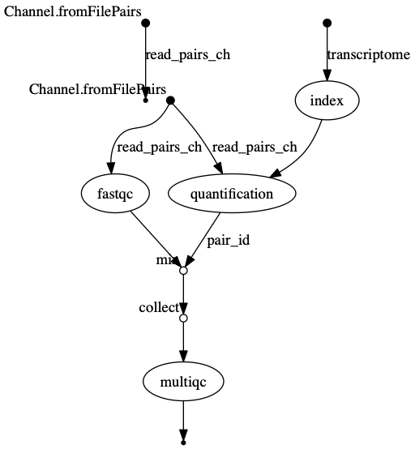
The vertices in the graph represent the pipeline’s processes and operators, while the edges represent the data connections (i.e. channels) between them.short running tasks
Note: runtime metrics may be incomplete for run short running tasks.
- Nextflow can combined tasks (processes) and manage data flows using channels into a single pipeline/workflow.
- A Workflow can be parameterise using
params. These value of the parameters can be captured in a log file usinglog.info - Nextflow can handle a workflow’s software requirements using several
technologies including the
condapackage and enviroment manager. - Workflow steps are connected via their
inputsandoutputsusingChannels. - Intermediate pipeline results can be transformed using Channel
operatorssuch ascombineandmix. - Nextflow is able to produce multiple reports and charts providing
several runtime metrics and execution information using the command line
options
-with-report,-with-trace,-with-timelineand produce a graph using-with-dag.
Content from Deploying nf-core pipelines
Last updated on 2026-07-21 | Edit this page
Estimated time: 45 minutes
Overview
Questions
- Where can I find best-practice Nextflow bioinformatic pipelines?
- How do I run nf-core pipelines?
- How do I configure nf-core pipelines to use my data?
- How do I reference nf-core pipelines?
Objectives
- Understand what nf-core is and how it relates to Nextflow.
- Use the nf-core helper tool to find nf-core pipelines.
- Understand how to configuration nf-core pipelines.
- Run a small demo nf-core pipeline using a test dataset.
What is nf-core?
nf-core is a community-led project to develop a set of best-practice pipelines built using Nextflow workflow management system. Pipelines are governed by a set of guidelines, enforced by community code reviews and automatic code testing.
![A diagram showcasing the key aspects of nf-core, a community effort to provide best-practice analysis pipelines. The diagram is divided into three sections: Deploy, Participate, and Develop. The Deploy section includes features like Stable pipelines, Centralized configs, List and update pipelines, and Download for offline use. The Participate section highlights Documentation, Slack workspace, Twitter updates, and Hackathons. The Develop section emphasizes the Starter template, Code guidelines, CI code linting and tests, and Helper tools.](../fig/nf-core.png "nf-core")
In this episode we will covering finding, deploying and configuring nf-core pipelines.
What are nf-core pipelines?
nf-core pipelines are an organised collection of Nextflow scripts, other non-nextflow scripts (written in any language), configuration files, software specifications, and documentation hosted on GitHub. There is generally a single pipeline for a given data and analysis type e.g. There is a single pipeline for bulk RNA-Seq. All nf-core pipelines are distributed under the, permissive free software, MIT licences.
What is nf-core tools?
nf-core provides a suite of helper tools aim to help people run and develop pipelines. The nf-core tools package is written in Python and can run from the command line or imported and used within other packages.
nf-core tools sub-commands
You can use the --help option to see the range of
nf-core tools sub-commands. In this episode we will be covering the
list, launch and download
sub-commands which aid in the finding and deployment of the nf-core
pipelines.
OUTPUT
,--./,-.
___ __ __ __ ___ /,-._.--~\
|\ | |__ __ / ` / \ |__) |__ } {
| \| | \__, \__/ | \ |___ \`-._,-`-,
`._,._,'
nf-core/tools version 4.0.2 - https://nf-co.re
Usage: nf-core [OPTIONS] COMMAND [ARGS]...
nf-core/tools provides a set of helper tools for use with nf-core
Nextflow pipelines.
It is designed for both end-users running pipelines and also
developers creating new pipelines.
═ Commands ═════════════════════════════════════════════════════════
interface Launch the nf-core interface
modules m,module Commands to manage Nextflow
DSL2 modules (tool wrappers).
pipelines p,pipeline Commands to manage nf-core
pipelines.
subworkflows s,swf,subworkflow Commands to manage Nextflow
DSL2 subworkflows (tool
wrappers).
test-datasets t,td,tds,test-datasets Commands to manage nf-core
test datasets.
═ Options ══════════════════════════════════════════════════════════
--version Show the version and exit.
--verbose -v Print verbose output to the console.
--hide-progress Don't show progress bars.
--log-file -l Save a verbose log to a file. [<filename>]
--help -h Show this message and exit. Listing available nf-core pipelines
The simplest sub-command is nf-core pipelines list,
which lists all available nf-core pipelines in the nf-core Github
repository.
The output shows the latest version number and when that was released. If the pipeline has been pulled locally using Nextflow, it tells you when that was and whether you have the latest version.
Run the command below.
An example of the output from the command is as follows:
OUTPUT
,--./,-.
___ __ __ __ ___ /,-._.--~\
|\ | |__ __ / ` / \ |__) |__ } {
| \| | \__, \__/ | \ |___ \`-._,-`-,
`._,._,'
nf-core/tools version 4.0.2 - https://nf-co.re
┏━━━━━━━━━━━┳━━━━━━━┳━━━━━━━━━━━┳━━━━━━━━━━━┳━━━━━━━━━━━┳━━━━━━━━━━━━┓
┃ ┃ ┃ ┃ ┃ ┃ Have ┃
┃ Pipeline ┃ ┃ Latest ┃ ┃ Last ┃ latest ┃
┃ Name ┃ Stars ┃ Release ┃ Released ┃ Pulled ┃ release? ┃
┡━━━━━━━━━━━╇━━━━━━━╇━━━━━━━━━━━╇━━━━━━━━━━━╇━━━━━━━━━━━╇━━━━━━━━━━━━┩
│ variantb… │ 50 │ 1.5.0 │ 3 months │ - │ - │
│ │ │ │ ago │ │ │
│ deepmuts… │ 5 │ dev │ 11 hours │ - │ - │
│ │ │ │ ago │ │ │
│ mhcquant │ 49 │ 3.2.0 │ 2 months │ - │ - │
│ │ │ │ ago │ │ │
│ proteinf… │ 108 │ 2.0.0 │ 4 months │ - │ - │
│ │ │ │ ago │ │ │
│ methylseq │ 197 │ 4.2.0 │ 7 months │ - │ - │
│ │ │ │ ago │ │ │
│ rnastruc… │ 1 │ dev │ yesterday │ - │ - │
│ datasync │ 10 │ dev │ 2 days │ - │ - │
│ │ │ │ ago │ │ │
│ raredise… │ 122 │ 3.1.2 │ 2 weeks │ - │ - │
│ │ │ │ ago │ │ │
│ rnasplice │ 68 │ 1.0.4 │ 2 years │ - │ - │
│ │ │ │ ago │ │ │
│ sarek │ 583 │ 3.9.0 │ 3 weeks │ - │ - │
[..truncated..]Filtering available nf-core pipelines
If you supply additional keywords after the
pipelines list sub-command, the listed pipeline will be
filtered. Note: that this searches more than just the
displayed output, including keywords and description text.
Here we filter on the keywords genome and assembly.
OUTPUT
,--./,-.
___ __ __ __ ___ /,-._.--~\
|\ | |__ __ / ` / \ |__) |__ } {
| \| | \__, \__/ | \ |___ \`-._,-`-,
`._,._,'
nf-core/tools version 4.0.2 - https://nf-co.re
┏━━━━━━━━━━━━━━━━━┳━━━━━━━┳━━━━━━━━━━━━━━━━┳━━━━━━━━━━━━━━━┳━━━━━━━━━━━━━┳━━━━━━━━━━━━━━━━━━━━━━┓
┃ Pipeline Name ┃ Stars ┃ Latest Release ┃ Released ┃ Last Pulled ┃ Have latest release? ┃
┡━━━━━━━━━━━━━━━━━╇━━━━━━━╇━━━━━━━━━━━━━━━━╇━━━━━━━━━━━━━━━╇━━━━━━━━━━━━━╇━━━━━━━━━━━━━━━━━━━━━━┩
│ mag │ 308 │ 5.4.2 │ 4 months ago │ - │ - │
│ bacass │ 91 │ 2.6.0 │ 3 months ago │ - │ - │
│ genomeqc │ 24 │ dev │ 1 weeks ago │ - │ - │
│ genomeassembler │ 33 │ 1.1.0 │ 12 months ago │ - │ - │
│ funcscan │ 117 │ 4.0.0 │ 3 weeks ago │ - │ - │
│ genomeskim │ 4 │ dev │ 4 years ago │ - │ - │
│ genomeannotator │ 38 │ dev │ 4 years ago │ - │ - │
└─────────────────┴───────┴────────────────┴───────────────┴─────────────┴──────────────────────┘Sorting available nf-core pipelines
You can sort the results by adding the option --sort
followed by a keyword. For example, latest release
(--sort release), when you last pulled a local copy
(--sort pulled), alphabetically (--sort name),
or number of GitHub stars (--sort stars).
OUTPUT
,--./,-.
___ __ __ __ ___ /,-._.--~\
|\ | |__ __ / ` / \ |__) |__ } {
| \| | \__, \__/ | \ |___ \`-._,-`-,
`._,._,'
nf-core/tools version 4.0.2 - https://nf-co.re
┏━━━━━━━━━━━━━━━━━┳━━━━━━━┳━━━━━━━━━━━━━━━━┳━━━━━━━━━━━━━━━┳━━━━━━━━━━━━━┳━━━━━━━━━━━━━━━━━━━━━━┓
┃ Pipeline Name ┃ Stars ┃ Latest Release ┃ Released ┃ Last Pulled ┃ Have latest release? ┃
┡━━━━━━━━━━━━━━━━━╇━━━━━━━╇━━━━━━━━━━━━━━━━╇━━━━━━━━━━━━━━━╇━━━━━━━━━━━━━╇━━━━━━━━━━━━━━━━━━━━━━┩
│ mag │ 308 │ 5.4.2 │ 4 months ago │ - │ - │
│ funcscan │ 117 │ 4.0.0 │ 3 weeks ago │ - │ - │
│ bacass │ 91 │ 2.6.0 │ 3 months ago │ - │ - │
│ genomeannotator │ 38 │ dev │ 4 years ago │ - │ - │
│ genomeassembler │ 33 │ 1.1.0 │ 12 months ago │ - │ - │
│ genomeqc │ 24 │ dev │ 1 weeks ago │ - │ - │
│ genomeskim │ 4 │ dev │ 4 years ago │ - │ - │
└─────────────────┴───────┴────────────────┴───────────────┴─────────────┴──────────────────────┘Archived pipelines
Archived pipelines are not returned by default. To include them, use
the --show_archived flag.
Exercise: listing nf-core pipelines
- Use the
--helpflag to print the list command usage. - Sort all pipelines by popularity (stars) and find out which is the most popular?.
- Filter pipelines for those that work with DNA and find out how many there are?
- Use the
--helpflag to print the list command usage.
- Sort all pipelines by popularity (stars).
The rnaseq pipeline is the most popular.
- Filter pipelines for those that work with DNA.
There are 11 pipelines that work with DNA.
Running nf-core pipelines
Software requirements for nf-core pipelines
nf-core pipeline software dependencies are specified using either Docker, Singularity or Conda. It is Nextflow that handles the downloading of containers and creation of conda environments. In theory it is possible to run the pipelines with software installed by other methods (e.g. environment modules, or manual installation), but this is not recommended.
Fetching pipeline code
Unless you are actively developing pipeline code, you should use Nextflow’s built-in functionality to fetch nf-core pipelines. You can use the following command to pull the latest version of a remote workflow from the nf-core github site.;
Note Nextflow will also automatically fetch the
pipeline code when use
nextflow run nf-core/<PIPELINE> command.
For the best reproducibility, it is good to explicitly reference the
pipeline version number that you wish to use with the
-revision/-r flag.
In the example below we are pulling the viralrecon pipeline version
3.0.0. Viralrecon is not yet upated to strict config parsing, a change
implemented in v26 of Nextflow (the version installed in the working
environment) that we will not discuss as part of this training. We need
to export the NXF_SYNTAX_PARSER param equal to
v1 to run viralrecon without an error.
OUTPUT
Checking nf-core/viralrecon:3.0.0 ...
downloaded from https://github.com/nf-core/viralrecon.git - revision: 395079f1d2 [3.0.0]Usage instructions and documentation
You can find general documentation and instructions for Nextflow and nf-core on the nf-core website . Pipeline-specific documentation is bundled with each pipeline in the /docs folder. This can be read either locally, on GitHub, or on the nf-core website.
Each pipeline has its own webpage at https://nf-co.re/<pipeline_name> e.g. nf-co.re/rnaseq
In addition to this documentation, each pipeline comes with basic
command line reference. This can be seen by running the pipeline with
the parameter --help , for example:
Note: For some pipelines the --help
option is sufficient, but viralrecon requires its required parameters be
fulfilled in order for the --help option to work. This is
why we used a special profile called test. We will talk
about test profiles in the next episode.
- nf-core is a community-led project to develop a set of best-practice pipelines built using the Nextflow workflow management system.
- The nf-core tool (
nf-core) is a suite of helper tools that aims to help people run and develop nf-core pipelines. - nf-core pipelines can be found using
nf-core pipelines list, or by checking the nf-core website. - An nf-core workflow is run using
nextflow run nf-core/<pipeline>syntax.
Content from nf-core pipeline configuraton
Last updated on 2026-06-01 | Edit this page
Estimated time: 9 minutes
Overview
Questions
- How do I configure nf-core pipelines to use my data?
Objectives
- Understand how to configuration nf-core pipelines.
nf-core config files
nf-core pipelines make use of Nextflow’s configuration files to specify how the pipelines runs, define custom parameters and what software management system to use e.g. docker, singularity or conda.
Nextflow can load pipeline configurations from multiple locations. nf-core pipelines load configuration in the following order:
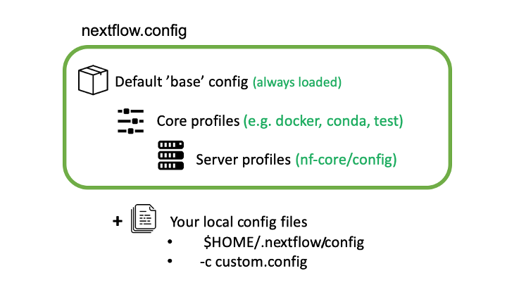
- Pipeline: Default ‘base’ config
- Always loaded. Contains pipeline-specific parameters and “sensible defaults” for things like computational requirements
- Does not specify any method for software packaging. If nothing else is specified, Nextflow will expect all software to be available on the command line.
- Core config profiles
- All nf-core pipelines come with some generic config profiles. The most commonly used ones are for software packaging: docker, singularity and conda
- Other core profiles are debug and two test profiles. There two test profile, a small test profile (nf-core/test-datasets) for quick test and a full test profile which provides the path to full sized data from public repositories.
- Server profiles
- At run time, nf-core pipelines fetch configuration profiles from the configs remote repository. The profiles here are specific to clusters at different institutions.
- Because this is loaded at run time, anyone can add a profile here for their system and it will be immediately available for all nf-core pipelines.
- Local config files given to Nextflow with the
-cflag
- Command line configuration: pipeline parameters can be passed on the
command line using the
--<parameter>syntax.
Config Profiles
nf-core makes use of Nextflow configuration profiles to
make it easy to apply a group of options on the command line.
Configuration files can contain the definition of one or more
profiles. A profile is a set of configuration attributes that can be
activated/chosen when launching a pipeline execution by using the
-profile command line option. Common profiles are
conda, singularity and docker
that specify which software manager to use.
Multiple profiles are comma-separated. When there are differing configuration settings provided by different profiles, the right-most profile takes priority.
BASH
nextflow run nf-core/viralrecon -r 3.0.0 -profile test,conda
nextflow run nf-core/viralrecon -r 3.0.0 -profile <institutional_config_profile>,test,condaNote The order in which config profiles are specified matters. Their priority increases from left to right.
- nf-core pipelines can be reconfigured by using custom config files and/or adding command line parameters.
Content from Testing nf-core pipelines with profiles
Last updated on 2026-07-20 | Edit this page
Estimated time: 9 minutes
Overview
Questions
- How do I download an nf-core pipeline for offline use?
- How do I test if an nf-core pipeline works?
- How do I reference nf-core pipelines?
Objectives
- Run a small demo nf-core pipeline using a test dataset.
Using nf-core pipelines offline
Many of the techniques and resources described above require an active internet connection at run time - pipeline files, configuration profiles and software containers are all dynamically fetched when the pipeline is launched. This can be a problem for people using secure computing resources that do not have connections to the internet.
To help with this, the nf-core pipelines download
command automates the fetching of required files for running nf-core
pipelines offline. The command can download a specific release of a
pipeline with -r/--release .
By default, the pipeline will download the pipeline code and the
institutional nf-core/configs files.
If you specify the flag
--container-system [singularity|docker], it will also
download any singularity or docker image files that are required (this
needs Singularity or Docker to be installed). All files are saved to a
single directory, ready to be transferred to the cluster where the
pipeline will be executed.
OUTPUT
,--./,-.
___ __ __ __ ___ /,-._.--~\
|\ | |__ __ / ` / \ |__) |__ } {
| \| | \__, \__/ | \ |___ \`-._,-`-,
`._,._,'
nf-core/tools version 4.0.2 - https://nf-co.re
WARNING Could not find GitHub authentication token. Some API requests may fail.
In addition to the pipeline code, this tool can download software containers.
? Download software container images: (Use arrow keys)
» none
singularity
dockerOUTPUT
,--./,-.
___ __ __ __ ___ /,-._.--~\
|\ | |__ __ / ` / \ |__) |__ } {
| \| | \__, \__/ | \ |___ \`-._,-`-,
`._,._,'
nf-core/tools version 4.0.2 - https://nf-co.re
WARNING Could not find GitHub authentication token. Some API requests may fail.
In addition to the pipeline code, this tool can download software containers.
? Download software container images: none
If transferring the downloaded files to another system, it can be convenient to have everything compressed in a single file.
? Choose compression type: (Use arrow keys)
none
» tar.gz
tar.bz2
zipOUTPUT
,--./,-.
___ __ __ __ ___ /,-._.--~\
|\ | |__ __ / ` / \ |__) |__ } {
| \| | \__, \__/ | \ |___ \`-._,-`-,
`._,._,'
nf-core/tools version 4.0.2 - https://nf-co.re
WARNING Could not find GitHub authentication token. Some API requests may fail.
In addition to the pipeline code, this tool can download software containers.
? Download software container images: none
If transferring the downloaded files to another system, it can be convenient to have everything compressed in a single file.
? Choose compression type: tar.gz
INFO Saving 'nf-core/viralrecon'
Pipeline revision: '3.0.0'
Use containers: 'none'
Container library: 'quay.io'
Output file: 'nf-core-viralrecon_3.0.0.tar.gz'
Include default institutional configuration: 'False'
INFO Downloading workflow
INFO Downloading workflow files from GitHub
INFO Compressing output into archive
INFO Command to extract files: tar -xzf nf-core-viralrecon_3.0.0.tar.gz
INFO MD5 checksum for 'nf-core-viralrecon_3.0.0.tar.gz': 0c2e93de11a93355ce14b36e3e131860 Running nf-core pipelines with test data
The nf-core config profile test is special profile,
which defines a minimal data set and configuration, that runs quickly
and tests the workflow from beginning to end. Since the data is minimal,
the output is often nonsense. Real world example output are instead
linked on the nf-core pipeline web page, where the workflow has been run
with a full size data set:
Software configuration profile
Note that you will typically still need to combine this with a
software configuration profile for your system - e.g.
-profile test,conda. Running with the test profile is a
great way to confirm that you have Nextflow configured properly for your
system before attempting to run with real data
Exercise Run a demo nf-core pipeline
Run the nf-core/demo pipeline release 1.2.0 with the
provided test data using the profile test and parameter
--outdir results.
BASH
$ export NXF_SYNTAX_PARSER=v2
$ nextflow run nf-core/demo -r 1.2.0 --outdir results -profile test,condaThe nf-core/demo pipleine is a simple nf-core style
bioinformatics pipeline for workshops and demonstrations that runs
FastQC, Seqtk trim, COWPY, and MultiQC.
OUTPUT
N E X T F L O W ~ version 26.04.4
Launching `https://github.com/nf-core/demo` [intergalactic_mirzakhani] revision: 32893afef8 [master]
WARN: ~~~~~~~~~~~~~~~~~~~~~~~~~~~~~~~~~~~~~~~~~~~~~~~~~~~~~~~~~~~~~~~~~~~~~~~~~~~~~~
There is a problem with your Conda configuration!
You will need to set-up the conda-forge and bioconda channels correctly.
Please refer to https://bioconda.github.io/
The observed channel order is
[defaults]
but the following channel order is required:
[conda-forge, bioconda]
~~~~~~~~~~~~~~~~~~~~~~~~~~~~~~~~~~~~~~~~~~~~~~~~~~~~~~~~~~~~~~~~~~~~~~~~~~~~~~~~~~~"
------------------------------------------------------
,--./,-.
___ __ __ __ ___ /,-._.--~'
|\ | |__ __ / ` / \ |__) |__ } {
| \| | \__, \__/ | \ |___ \`-._,-`-,
`._,._,'
nf-core/demo 1.2.0
------------------------------------------------------
Input/output options
input : https://raw.githubusercontent.com/nf-core/test-datasets/viralrecon/samplesheet/samplesheet_test_illumina_amplicon.csv
outdir : results
Institutional config options
config_profile_name : Test profile
config_profile_description: Minimal test dataset to check pipeline function
Generic options
trace_report_suffix : 2026-07-20_21-33-09
Core Nextflow options
revision : master
runName : intergalactic_mirzakhani
launchDir : /home/workspace/amd-academy-nextflow
workDir : /home/workspace/amd-academy-nextflow/work
projectDir : /home/workspace/.nextflow/assets/.repos/nf-core/demo/clones/32893afef8076a03a2767a020b3f0cab2e0b40b2
userName : user
profile : test,conda
configFiles : /home/workspace/.nextflow/assets/.repos/nf-core/demo/clones/32893afef8076a03a2767a020b3f0cab2e0b40b2/nextflow.config
!! Only displaying parameters that differ from the pipeline defaults !!
------------------------------------------------------
* The pipeline
https://doi.org/10.5281/zenodo.12192442
* The nf-core framework
https://doi.org/10.1038/s41587-020-0439-x
* Software dependencies
https://github.com/nf-core/demo/blob/master/CITATIONS.md
executor > local (8)
[70/86fc1a] NFCORE_DEMO:DEMO:FASTQC (SAMPLE2_PE) [100%] 3 of 3 ✔
[db/67e19e] NFCORE_DEMO:DEMO:SEQTK_TRIM (SAMPLE1_PE) [100%] 3 of 3 ✔
[1d/94860f] NFCORE_DEMO:DEMO:COWPY [100%] 1 of 1 ✔
[3f/900e10] NFCORE_DEMO:DEMO:MULTIQC (demo) [100%] 1 of 1 ✔
-[nf-core/demo] Pipeline completed successfully-
Completed at: 20-Jul-2026 21:35:15
Duration : 2m 5s
CPU hours : (a few seconds)
Succeeded : 8Troubleshooting
If you run into issues running your pipeline you can you the nf-core website to troubleshoot common mistakes and issues https://nf-co.re/usage/troubleshooting .
Extra resources and getting help
If you still have an issue with running the pipeline then feel free
to contact the nf-core community via the Slack channel . The nf-core
Slack organisation has channels dedicated for each pipeline, as well as
specific topics (eg. #help, #pipelines,
#tools, #configs and much more). The nf-core
Slack can be found at https://nfcore.slack.com (NB: no
hyphen in nfcore!). To join you will need an invite, which you can get
at https://nf-co.re/join/slack.
You can also get help by opening an issue in the respective pipeline repository on GitHub asking for help.
If you have problems that are directly related to Nextflow and not our pipelines or the nf-core framework tools then check out the Nextflow gitter channel or the google group.
Referencing a Pipeline
Publications
If you use an nf-core pipeline in your work you should cite the main publication for the main nf-core paper, describing the community and framework, as follows:
The nf-core framework for community-curated bioinformatics pipelines. Philip Ewels, Alexander Peltzer, Sven Fillinger, Harshil Patel, Johannes Alneberg, Andreas Wilm, Maxime Ulysse Garcia, Paolo Di Tommaso & Sven Nahnsen. Nat Biotechnol. 2020 Feb 13. doi: 10.1038/s41587-020-0439-x. ReadCube: Full Access Link
Many of the pipelines have a publication listed on the nf-core website that can be found here.
Content from Making your own nf-core pipeline
Last updated on 2026-07-20 | Edit this page
Estimated time: 27 minutes
Overview
Questions
- How do I create a custom nf-core pipeline?
- How do I test a custom nf-core pipeline?
Objectives
- Create a custom nf-core pipeline using nf-core tools.
- Run a custom nf-core pipeline using a test profile.
Creating your custom pipeline
To lower the difficulty barrier for nf-core pipeline development, nf-core provides a pipeline template that adheres to all nf-core guidelines, as well as a command line tool (within nf-core tools) that allows users to create a custom pipeline using this nf-core base template. In this episode, we’re going to create your own custom nf-core pipeline using this command line tool.
Let’s start by creating a directory for your new pipeline.
Then we can use the nf-core tools pipelines command with
the create option to start an interactive text user
interface tool for setting up the pipeline.
After running the command you should see the following output and a Welcome screen for the interactive pipeline creation tool, also known as the “pipeline creation wizard.”
OUTPUT
,--./,-.
___ __ __ __ ___ /,-._.--~\
|\ | |__ __ / ` / \ |__) |__ } {
| \| | \__, \__/ | \ |___ \`-._,-`-,
`._,._,'
nf-core/tools version 3.2.0 - https://nf-co.re
INFO Launching interactive nf-core pipeline creation tool. The pipeline creation tool has a point-and-click interface and will take you through the following pages during pipeline setup:
- Welcome
- Pipeline Type
- Basic Details
- Template Features
- Final Details
- Logging
- Create GitHub Repository
- HowTo create a GitHub repository
Follow the steps below to start setting up your pipeline:
- On the Welcome page select Let’s go!
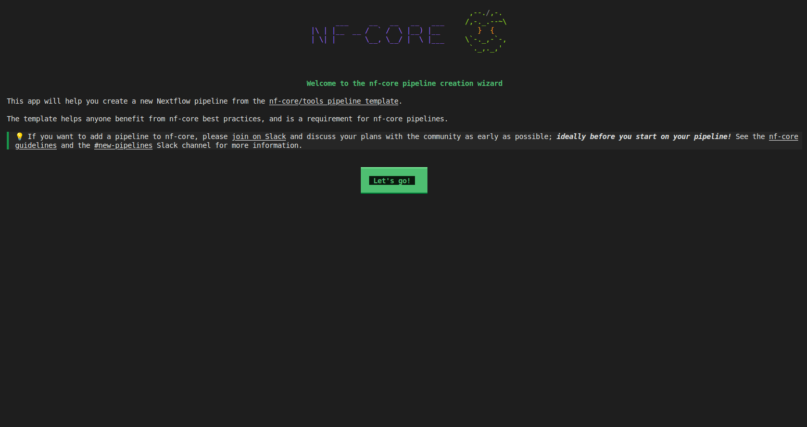
- On the Pipeline Type page select
Custom
- Select Next
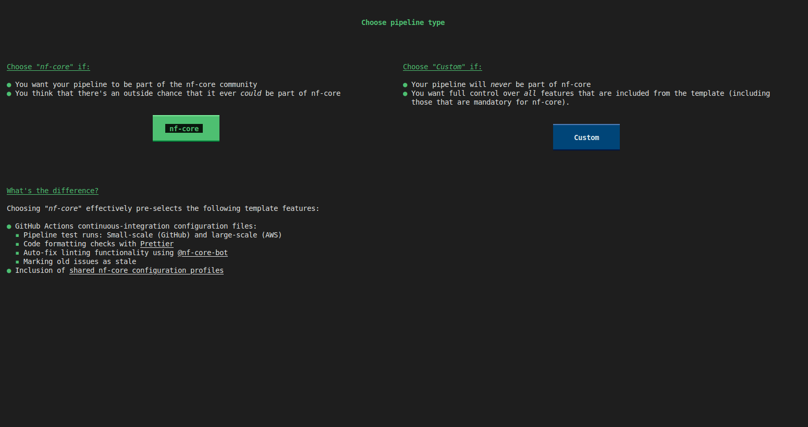
- On the Basic Details page, for GitHub
organization enter “myorg”
- For Workflow name enter “genomeassembler”
- For A short description of your pipeline enter “My
first nf-core pipeline”
- For Name of the main author / authors enter your name
- Select Next
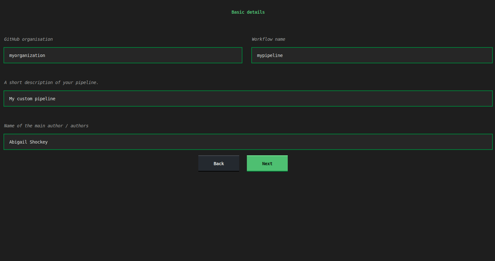
- In the Template features page, set “Toggle all
features” to off, then enable:
Add configuration filesUse multiqcUse nf-core componentsUse nf-schemaAdd documentationAdd testing profiles - Select Continue
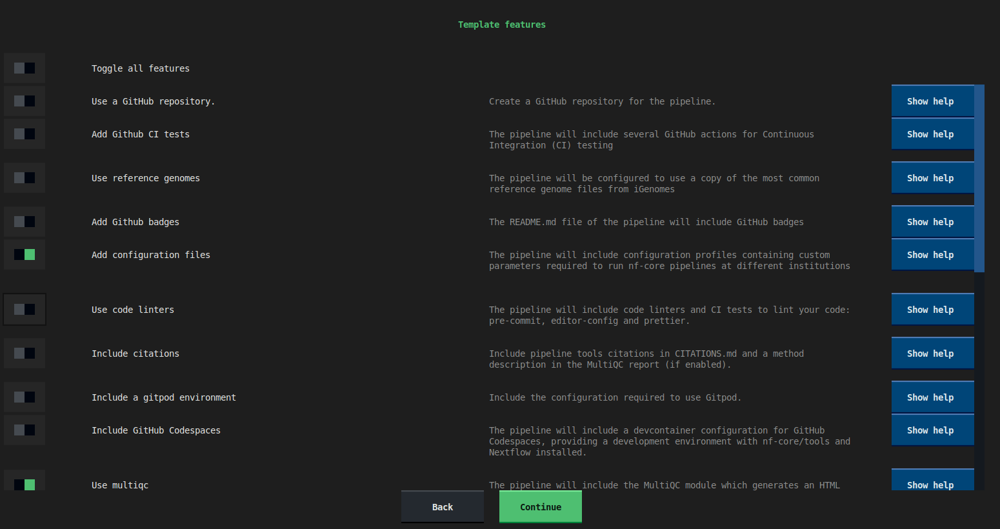
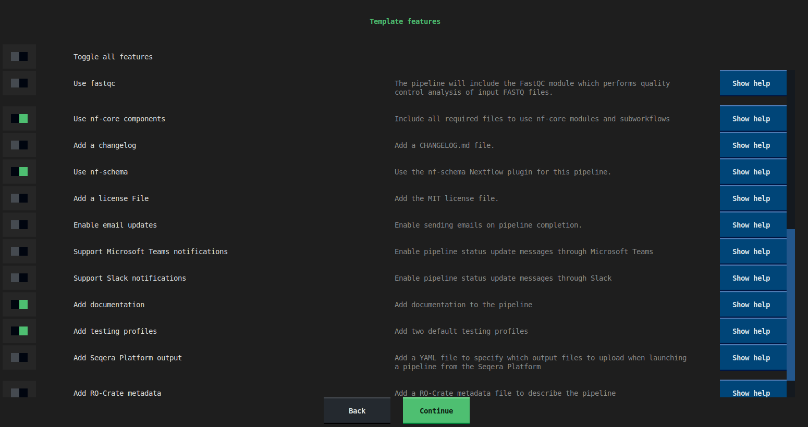
- On the Final details page select Finish
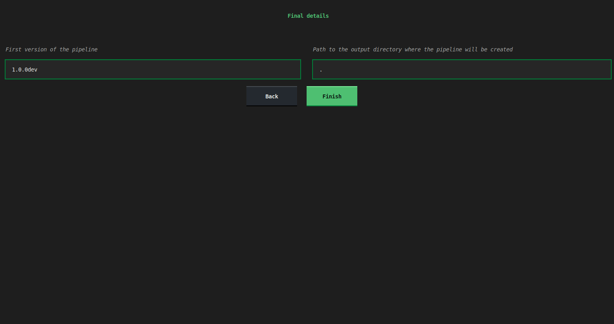
- On the Logging page wait for the pipeline to be created, then select Continue
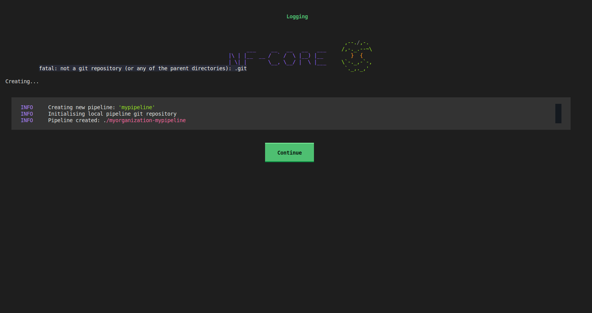
- On the Create GitHub repository page select Finish without creating a repo
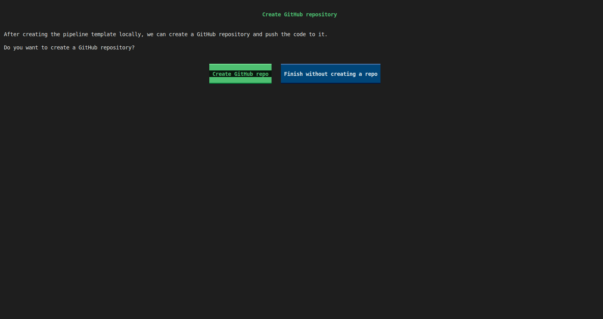
- On the HowTo create a GitHub repository page Select Close
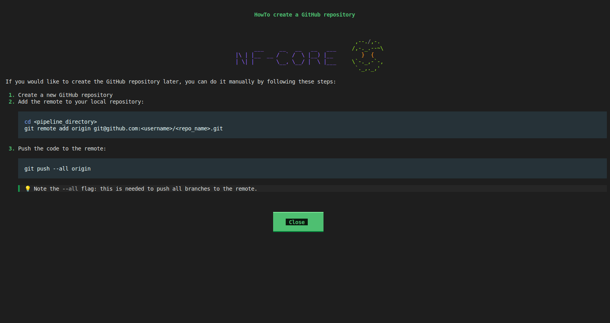
Testing your first pipeline
Once your pipeline has been set up, you can change to its directory
and test it using the nextflow run command and the
test profile.
If the pipeline ran successfully, you should see the following:
OUTPUT
Nextflow 26.04.6 is available - Please consider updating your version to it
N E X T F L O W ~ version 26.04.4
Launching `./main.nf` [stupefied_bhabha] revision: 27a6d188dd
WARN: Unrecognized config option 'validation.defaultIgnoreParams'
WARN: Unrecognized config option 'validation.monochromeLogs'
Input/output options
input : https://raw.githubusercontent.com/nf-core/test-datasets/viralrecon/samplesheet/samplesheet_test_illumina_amplicon.csv
outdir : results
Institutional config options
config_profile_name : Test profile
config_profile_description: Minimal test dataset to check pipeline function
Generic options
trace_report_suffix : 2026-07-20_22-43-44
Core Nextflow options
runName : stupefied_bhabha
launchDir : /home/workspace/amd-academy-nextflow/nfcore-pipeline/myorg-genomeassembler
workDir : /home/workspace/amd-academy-nextflow/nfcore-pipeline/myorg-genomeassembler/work
projectDir : /home/workspace/amd-academy-nextflow/nfcore-pipeline/myorg-genomeassembler
userName : user
profile : test
configFiles : /home/workspace/amd-academy-nextflow/nfcore-pipeline/myorg-genomeassembler/nextflow.config
!! Only displaying parameters that differ from the pipeline defaults !!
------------------------------------------------------
executor > local (1)
[fb/646941] MYORG_GENOMEASSEMBLER:GENOMEASSEMBLER:MULTIQC (genomeassembler) [100%] 1 of 1 ✔
-[myorg/genomeassembler] Pipeline completed successfully-The pipeline successfully completed one process, MULTIQC, the output
of which can be found in the results directory.
- You can create a custom pipeline according to the nf-core framework
using the
nf-core pipelines createcommand.
Content from nf-core modules
Last updated on 2026-07-21 | Edit this page
Estimated time: 24 minutes
Overview
Questions
- What are nf-core modules?
- How do I add a module to an nf-core pipeline?
- What are meta maps?
Objectives
- Explain the purpose and contents of nf-core modules.
- Add a module to a custom nf-core pipeline.
Adding modules to your pipeline
An nf-core module is a Nextflow “wrapper” around a command-line tool or script. A “wrapper” is a computer science term for a program or function that calls another program or function. In other words, a module contains a Nextflow script (and a few other files we’ll discuss later) that is used to run the command-line tool or script contained within that module. Modules are used as individual processes within a pipeline, and some people use those words interchangeably.
It’s important to note that nf-core modules contain either a single tool with one subcommand, or one subcommand of a tool with multiple subcommands. For example, the genome assembly tool Shovill contains only one command, so there is only one Shovill module. Conversely, the FASTA/FASTQ processing tool Seqtk contains multiple subcommands, so there are multiple Seqtk modules (one for each subcommand).
While you can develop a module for a tool independently, you can save a lot of time and effort by using existing nf-core modules, of which there are thousands.
Module contents
Each nf-core module contains files with strict guidelines
for structure and content, and these guidelines expand the number of
files from one Nextflow .nf script file to five mandatory
files.
The five mandatory files in an nf-core/module directory are:
OUTPUT
├── environment.yml
├── main.nf
├── meta.yml
└── tests/
├── main.nf.test
└── main.nf.test.snapThese files can be split up into three main categories:
- Execution:
-
main.nfis the main Nextflow script that defines the process executed by Nextflow -
environment.ymlis a Conda environment file that is loaded by themain.nf. It specifies the software dependencies for the module when a pipeline run is executed with-profile conda
- Documentation:
-
meta.yamldocuments the contents ofmain.nf, including things like input(s) and output(s)
- Testing
-
main.nf.testdescribes a unit test formain.nf -
main.nf.test.snapis a snapshot file that is generated by nf-test test. It is used to compare the output of one test run with another, ensuring reproducibility.
Currently, your pipeline consists of one step: It runs MultiQC. If we want to add a new step to that pipeline, we need to add a new module.
A collection of nf-core modules are stored in a central community repository that can be used by anyone.
There are two main ways you can find nf-core modules to add to your pipeline. You can manually search the modules page of the nf-core website, or you can use nf-core tools on the command line.
Finding nf-core modules
On the command line
To get a list of nf-core modules on the command line, we need to use
the modules nf-core command with the
list remote options.
This command lists all the modules available in nf-core’s GitHub repository.
OUTPUT
,--./,-.
___ __ __ __ ___ /,-._.--~\
|\ | |__ __ / ` / \ |__) |__ } {
| \| | \__, \__/ | \ |___ \`-._,-`-,
`._,._,'
nf-core/tools version 4.0.2 - https://nf-co.re
INFO Modules available from https://github.com/nf-core/modules.git (master):
┏━━━━━━━━━━━━━━━━━━━━━━━━━━━━━━━━━━━━━━━━━━━━━━━━━━━━━━━┓
┃ Module Name ┃
┡━━━━━━━━━━━━━━━━━━━━━━━━━━━━━━━━━━━━━━━━━━━━━━━━━━━━━━━┩
│ aardvark/compare │
│ aardvark/merge │
│ abacas │
│ abra2 │
│ abricate/run │
│ abricate/summary │
[..truncated..]
│ xeniumranger/resegment │
│ xz/compress │
│ xz/decompress │
│ yahs │
│ yak/count │
│ yara/index │
│ yara/mapper │
│ yte │
│ zip │
└───────────────────────────────────────────────────────┘The information (inputs, outputs, and installation command)
associated with each module can be found using the
modules info options. The first step in your pipeline will
be read trimming with the seqtk trim module, so
we’ll start with that.
OUTPUT
___ __ __ __ ___ /,-._.--~\
|\ | |__ __ / ` / \ |__) |__ } {
| \| | \__, \__/ | \ |___ \`-._,-`-,
`._,._,'
nf-core/tools version 4.0.2 - https://nf-co.re
╭─ Module: seqtk/trim ────────────────────────────────────────────────────────────────────────────────────────────────────────────────────────────────────────────────────────────────────────╮
│ 🌐 Repository: https://github.com/nf-core/modules.git │
│ 🔧 Tools: seqtk │
│ 📖 Description: Trim low quality bases from FastQ files │
╰──────────────────────────────────────────────────────────────────────────────────────────────────────────────────────────────────────────────────────────────────────────────────────────────╯
╷ ╷
📥 Inputs │Description │ Pattern
╺━━━━━━━━━━━━━━┿━━━━━━━━━━━━━━━━━━━━━━━━━━━━━━━━━━━━━━━━━━━━━━━━━━━━━━━━━━━━━━━━━━━━━━━━━━━━━━━━━━━━━━━━━━━━━━━━━━━━━━━━━━━━━━━━━━━━━━━━━━━━━━━━━━━━━━━━━━━━━━━━━━━━━━━━━━━━━━━━━━┿━━━━━━━━━━━━╸
input[0] │ │
╶──────────────┼──────────────────────────────────────────────────────────────────────────────────────────────────────────────────────────────────────────────────────────────────┼────────────╴
meta (map) │Groovy Map containing sample information e.g. [ id:'test', single_end:false ] │
╶──────────────┼──────────────────────────────────────────────────────────────────────────────────────────────────────────────────────────────────────────────────────────────────┼────────────╴
reads (file)│List of input FastQ files │*.{fastq.gz}
╵ ╵
╷ ╷
📥 Outputs │Description │ Pattern
╺━━━━━━━━━━━━━━━━━━━━━━━━━━━━━━━━━━━━━━━━━━━━━━┿━━━━━━━━━━━━━━━━━━━━━━━━━━━━━━━━━━━━━━━━━━━━━━━━━━━━━━━━━━━━━━━━━━━━━━━━━━━━━━━━━━━━━━━━━━━━━━━━━━━━━━━━━━━━━━━━━━━━━━━━━━━━━━━━━━┿━━━━━━━━━━━━╸
reads │ │
╶──────────────────────────────────────────────┼──────────────────────────────────────────────────────────────────────────────────────────────────────────────────────────────────┼────────────╴
meta (map) │Groovy Map containing sample information e.g. [ id:'test', single_end:false ] │
╶──────────────────────────────────────────────┼──────────────────────────────────────────────────────────────────────────────────────────────────────────────────────────────────┼────────────╴
*.fastq.gz (file) │Filtered FastQ files │*.{fastq.gz}
╶──────────────────────────────────────────────┼──────────────────────────────────────────────────────────────────────────────────────────────────────────────────────────────────┼────────────╴
versions_seqtk │ │
╶──────────────────────────────────────────────┼──────────────────────────────────────────────────────────────────────────────────────────────────────────────────────────────────┼────────────╴
${task.process} (string) │The name of the process │
╶──────────────────────────────────────────────┼──────────────────────────────────────────────────────────────────────────────────────────────────────────────────────────────────┼────────────╴
seqtk (string) │The name of the tool │
╶──────────────────────────────────────────────┼──────────────────────────────────────────────────────────────────────────────────────────────────────────────────────────────────┼────────────╴
seqtk 2>&1 | sed -n 's/^Version: //p' (eval)│The expression to obtain the version of the tool │
╵ Online
Each nf-core module’s webpage contains the following information:
- Description - A description of the module
- Input - A list and description of module’s inputs
- Output - A list and description of the module’s outputs
Other useful information on a module’s webpage includes commands to install the module, and links to ask a question about the module on Slack or open an issue using GitHub. Both Slack and Github do require accounts.
Shovill module
Assembling trimmed reads with Shovill will be the next step you add to your pipeline. What are the names of the inputs and outputs of the Shovill module?
📥 Inputs │Description │Pattern
╺━━━━━━━━━━━━━━┿━━━━━━━━━━━━━━━━━━━━━━━━━━━━━━━━━━━━━━━━━━━━━━━━━━━━━━━━━━━━━━━━━━━━━━━━━━━━━━━━━━━━━━━━━━━━━━━━━━━━━━━━━━━━━━━━━━━┿━━━━━━━╸
input[0] │ │
╶──────────────┼───────────────────────────────────────────────────────────────────────────────────────────────────────────────────┼───────╴
meta (map) │Groovy Map containing sample information e.g. [ id:'test', single_end:false ] │
╶──────────────┼───────────────────────────────────────────────────────────────────────────────────────────────────────────────────┼───────╴
reads (file)│List of input paired-end FastQ files │
╵ ╵
╷ ╷
📥 Outputs │Description │ Pattern
╺━━━━━━━━━━━━━━━━━━━━━━━━━━━━━━━━━━━━━━━━━━━━━━━━━━━┿━━━━━━━━━━━━━━━━━━━━━━━━━━━━━━━━━━━━━━━━━━━━━━━━━━┿━━━━━━━━━━━━━━━━━━━━━━━━━━━━━━━━━━━╸
contigs │ │
╶───────────────────────────────────────────────────┼──────────────────────────────────────────────────┼───────────────────────────────────╴
meta (map) │Groovy Map containing sample information e.g. [ │
│id:'test', single_end:false ] │
╶───────────────────────────────────────────────────┼──────────────────────────────────────────────────┼───────────────────────────────────╴
contigs.fa (file) │The final assembly produced by Shovill │ contigs.fa
╶───────────────────────────────────────────────────┼──────────────────────────────────────────────────┼───────────────────────────────────╴
corrections │ │
╶───────────────────────────────────────────────────┼──────────────────────────────────────────────────┼───────────────────────────────────╴
meta (map) │Groovy Map containing sample information e.g. [ │
│id:'test', single_end:false ] │
╶───────────────────────────────────────────────────┼──────────────────────────────────────────────────┼───────────────────────────────────╴
shovill.corrections (file) │List of post-assembly corrections made by Shovill │ shovill.corrections
╶───────────────────────────────────────────────────┼──────────────────────────────────────────────────┼───────────────────────────────────╴
log │ │
╶───────────────────────────────────────────────────┼──────────────────────────────────────────────────┼───────────────────────────────────╴
meta (map) │Groovy Map containing sample information e.g. [ │
│id:'test', single_end:false ] │
╶───────────────────────────────────────────────────┼──────────────────────────────────────────────────┼───────────────────────────────────╴
shovill.log (file) │Full log file for bug reporting │ shovill.log
╶───────────────────────────────────────────────────┼──────────────────────────────────────────────────┼───────────────────────────────────╴
raw_contigs │ │
╶───────────────────────────────────────────────────┼──────────────────────────────────────────────────┼───────────────────────────────────╴
meta (map) │Groovy Map containing sample information e.g. [ │
│id:'test', single_end:false ] │
╶───────────────────────────────────────────────────┼──────────────────────────────────────────────────┼───────────────────────────────────╴
{skesa,spades,megahit,velvet}.fasta (file) │Raw assembly produced by the assembler (SKESA, │{skesa,spades,megahit,velvet}.fasta
│SPAdes, MEGAHIT, or Velvet) │
╶───────────────────────────────────────────────────┼──────────────────────────────────────────────────┼───────────────────────────────────╴
gfa │ │
╶───────────────────────────────────────────────────┼──────────────────────────────────────────────────┼───────────────────────────────────╴
meta (map) │Groovy Map containing sample information e.g. [ │
│id:'test', single_end:false ] │
╶───────────────────────────────────────────────────┼──────────────────────────────────────────────────┼───────────────────────────────────╴
contigs.{fastg,gfa,LastGraph} (file) │Assembly graph produced by MEGAHIT, SPAdes, or │ contigs.{fastg,gfa,LastGraph}
│Velvet │
╶───────────────────────────────────────────────────┼──────────────────────────────────────────────────┼───────────────────────────────────╴
versions_shovill │ │
╶───────────────────────────────────────────────────┼──────────────────────────────────────────────────┼───────────────────────────────────╴
${task.process} (string) │The name of the process │
╶───────────────────────────────────────────────────┼──────────────────────────────────────────────────┼───────────────────────────────────╴
shovill (string) │The name of the tool │
╶───────────────────────────────────────────────────┼──────────────────────────────────────────────────┼───────────────────────────────────╴
shovill --version 2>&1 | sed "s/^.*shovill //" │The expression to obtain the version of the tool │
(eval) │ │
╵ ╵ Meta maps and sample metadata
You may have noticed that the metadata associated with the input file(s) of a module are listed in that module’s inputs. This is because nf-core pipelines use something call ‘meta maps’ to carry sample metadata alongside files throughout the pipeline.
Meta maps are used for recording IDs or names, tracking pipeline-generated metadata, grouping or splitting operations, and specifying per-sample tool arguments.
The meta map in an nf-core pipeline is an unordered key-value list in the Groovy language. A meta map sits in a tuple within a Nextflow channel object next to the file(s) the metadata describes.
There are two standard nf-core meta map keys: id and
single_end.
meta.id: Unique file identifiers associated with a file
(e.g. sample names; string) single_end: Whether the
sequencing data used by the pipeline is single- or paired-end
(true/false)
nf-core modules refer to meta maps in the input block of
a process.
Later, we will learn how to alter a meta map and rename the meta.id.
Installing an nf-core module
To install an nf-core module, we use the nf-core modules
command with the install option. We’re going to continue
using seqtk as our example. Before installing the seqtk trim module,
make sure you’ve changed directories into the pipeline’s directory:
Once the module has finished installing, we can use the
modules nf-core command with the list local
options to see what modules have been downloaded for the pipeline:
Which produces the following output:
OUTPUT
,--./,-.
___ __ __ __ ___ /,-._.--~\
|\ | |__ __ / ` / \ |__) |__ } {
| \| | \__, \__/ | \ |___ \`-._,-`-,
`._,._,'
nf-core/tools version 4.0.2 - https://nf-co.re
INFO Repository type: pipeline
INFO Modules installed in '.':
┏━━━━━━━━━━━━━┳━━━━━━━━━━━━━━━━━┳━━━━━━━━━━━━━┳━━━━━━━━━━━━━━━━━━━━━━━━━━━━━━━━━━━━━━━━━━━━━━━━━━━━━━━━━━━━━━━━━━━━━━━━━━━━━━━┳━━━━━━━━━━━━┓
┃ Module Name ┃ Repository ┃ Version SHA ┃ Message ┃ Date ┃
┡━━━━━━━━━━━━━╇━━━━━━━━━━━━━━━━━╇━━━━━━━━━━━━━╇━━━━━━━━━━━━━━━━━━━━━━━━━━━━━━━━━━━━━━━━━━━━━━━━━━━━━━━━━━━━━━━━━━━━━━━━━━━━━━━╇━━━━━━━━━━━━┩
│ multiqc │ nf-core/modules │ 008f9d3 │ bump multiqc to 1.34 (#11278) │ 2026-04-24 │
│ seqtk/trim │ nf-core/modules │ 6d46786 │ Support for apptainer as well as singularity for .sif in `container` (#11260) │ 2026-04-23 │
└─────────────┴─────────────────┴─────────────┴───────────────────────────────────────────────────────────────────────────────┴────────────┘As you can see, Seqtk is now listed as a module locally installed for
our pipeline. If we view the contents of the modules/nf-core folder with
the tree command, a folder for the seqtk_trim module can
now be found there.
OUTPUT
modules/nf-core
├── multiqc
│ ├── environment.yml
│ ├── main.nf
│ ├── meta.yml
│ └── tests
│ ├── custom_prefix.config
│ ├── main.nf.test
│ ├── main.nf.test.snap
│ └── nextflow.config
└── seqtk
└── trim
├── environment.yml
├── main.nf
├── meta.yml
└── tests
├── main.nf.test
└── main.nf.test.snapAdding an installed module to the workflow script
Installing a module does not automatically add it to your pipeline; it downloads the files the pipeline needs to run the module. Several lines of code need to be added to the workflow script for the module to be included.
First, in the workflows/genomeassembler.nf workflow
script, we need to add an include statement for the module.
The include statement should contain the name of the module
in curly brackets {} (which is also the name of the process
that uses that module) followed by the from statement and
the path to that module’s main.nf file. Modules should be
added to the IMPORT MODULES / SUBWORKFLOWS / FUNCTIONS
section of the workflow script genomeassembler.nf. They can
be added to that section in any order.
GROOVY
/*
~~~~~~~~~~~~~~~~~~~~~~~~~~~~~~~~~~~~~~~~~~~~~~~~~~~~~~~~~~~~~~~~~~~~~~~~~~~~~~~~~~~~~~~~
IMPORT MODULES / SUBWORKFLOWS / FUNCTIONS
~~~~~~~~~~~~~~~~~~~~~~~~~~~~~~~~~~~~~~~~~~~~~~~~~~~~~~~~~~~~~~~~~~~~~~~~~~~~~~~~~~~~~~~~
*/
include { MODULE } from 'path/to/nf-core/module/main'Adding seqtk trim to the Import Modules section
Add the seqtk trim module to the Import Modules section
of your pipeline’s workflow script.
GROOVY
/*
~~~~~~~~~~~~~~~~~~~~~~~~~~~~~~~~~~~~~~~~~~~~~~~~~~~~~~~~~~~~~~~~~~~~~~~~~~~~~~~~~~~~~~~~
IMPORT MODULES / SUBWORKFLOWS / FUNCTIONS
~~~~~~~~~~~~~~~~~~~~~~~~~~~~~~~~~~~~~~~~~~~~~~~~~~~~~~~~~~~~~~~~~~~~~~~~~~~~~~~~~~~~~~~~
*/
[..truncated..]
include { SEQTK_TRIM } from '../modules/nf-core/seqtk/trim/main'After we’ve added the include statement, we need to add
the process SEQK_TRIM() to the workflow block. The process
needs to be added within the curly brackets {} of the
workflow block GENOMEASSEMBLER, which can be found in the
RUN MAIN WORKFLOW section. We’re going to add this module
before the
Collate and save software versions module for reasons we’ll
discuss later. The process should be added according to the following
format, which includes the module’s name:
GROOVY
[..truncated..]
/*
~~~~~~~~~~~~~~~~~~~~~~~~~~~~~~~~~~~~~~~~~~~~~~~~~~~~~~~~~~~~~~~~~~~~~~~~~~~~~~~~~~~~~~~~
RUN MAIN WORKFLOW
~~~~~~~~~~~~~~~~~~~~~~~~~~~~~~~~~~~~~~~~~~~~~~~~~~~~~~~~~~~~~~~~~~~~~~~~~~~~~~~~~~~~~~~~
*/
workflow WORKFLOWNAME {
//
// MODULE: module name
//
MODULE_NAME()
[..truncated..]
}Adding seqtk trim to the
Run Main Workflow section
Add the seqtk trim module to the Run Main Workflow
section of your pipelines workflow script.
GROOVY
[..truncated..]
/*
~~~~~~~~~~~~~~~~~~~~~~~~~~~~~~~~~~~~~~~~~~~~~~~~~~~~~~~~~~~~~~~~~~~~~~~~~~~~~~~~~~~~~~~~
RUN MAIN WORKFLOW
~~~~~~~~~~~~~~~~~~~~~~~~~~~~~~~~~~~~~~~~~~~~~~~~~~~~~~~~~~~~~~~~~~~~~~~~~~~~~~~~~~~~~~~~
*/
workflow GENOMEASSEMBLER {
//
// MODULE: seqtk_trim
//
SEQTK_TRIM()
[..truncated..]
}Next we need to add seqtk trim’s input to its process. As previously
mentioned, you can find a module’s input(s) (and output(s)) on its
webpage. You can also use the nf-core modules command with
the info option.
The seqtk trim process only requires one input channel, which should
contain paired end FASTQ files and their sample (aka meta) information.
This channel already exists in the genomeassembler.nf
workflow file as ch_samplesheet, so the seqtk_trim module
can be called using the FASTQs as input with the following lines of
code:
We can also assign the output of SEQTK_TRIM() to a
variable that we’ll pass to the next module.
Testing your custom pipeline with a custom test profile
To test this addition to the pipeline, we’re going to create a custom
test profile called demo: We’re going to copy the
test.config file in the conf directory and
rename it demo.config:
Then, in the demo.config file, we’re going to make the
following changes:
GROOVY
/*
~~~~~~~~~~~~~~~~~~~~~~~~~~~~~~~~~~~~~~~~~~~~~~~~~~~~~~~~~~~~~~~~~~~~~~~~~~~~~~~~~~~~~~~~
Nextflow config file for running a demo
~~~~~~~~~~~~~~~~~~~~~~~~~~~~~~~~~~~~~~~~~~~~~~~~~~~~~~~~~~~~~~~~~~~~~~~~~~~~~~~~~~~~~~~~
Defines input files and everything required to run a fast and simple demo.
Use as follows:
nextflow run myorg/genomeassembler -profile demo,<docker/singularity> --outdir <OUTDIR>
[..truncated..]
params {
config_profile_name = 'Demo profile'
config_profile_description = 'Minimal test dataset to demo the pipeline'
// Input data
input = 'https://raw.githubusercontent.com/AbigailShockey/amd-academy-nf-files/refs/heads/main/data/bacteria/samplesheets/test_full.csv'
}This profile uses a different publicly available data set as input
than the test profile, because the original
test profile uses paired and single end reads as input,
while the assembly step we’re going to add later requires paired (but
not single) end reads.
The config file for the demo profile,
demo.config, should be saved in the conf/
folder with the other config files. To finish adding this profile to the
pipeline, we need to put the following line of code within the curly
brackets {} of the profile block in the
nextflow.config file:
Once this is done, we can test our changes to the pipeline with the demo profile:
If the pipeline finishes successfully, you should see something like the following:
OUTPUT
Nextflow 26.04.6 is available - Please consider updating your version to it
N E X T F L O W ~ version 26.04.4
Launching `./main.nf` [high_ekeblad] revision: 27a6d188dd
WARN: Unrecognized config option 'validation.defaultIgnoreParams'
WARN: Unrecognized config option 'validation.monochromeLogs'
Input/output options
input : https://raw.githubusercontent.com/AbigailShockey/amd-academy-nf-files/refs/heads/main/data/bacteria/samplesheets/test_full.csv
outdir : demo_results
Institutional config options
config_profile_name : Demo profile
config_profile_description: Minimal test dataset to demo the pipeline
Generic options
trace_report_suffix : 2026-07-20_22-55-57
Core Nextflow options
runName : high_ekeblad
launchDir : /home/workspace/amd-academy-nextflow/nfcore-pipeline/myorg-genomeassembler
workDir : /home/workspace/amd-academy-nextflow/nfcore-pipeline/myorg-genomeassembler/work
projectDir : /home/workspace/amd-academy-nextflow/nfcore-pipeline/myorg-genomeassembler
userName : user
profile : demo
configFiles : /home/workspace/amd-academy-nextflow/nfcore-pipeline/myorg-genomeassembler/nextflow.config
!! Only displaying parameters that differ from the pipeline defaults !!
------------------------------------------------------
executor > local (4)
[da/2e0ba1] MYORG_GENOMEASSEMBLER:GENOMEASSEMBLER:SEQTK_TRIM (Sample02) [100%] 3 of 3 ✔
[56/6976a0] MYORG_GENOMEASSEMBLER:GENOMEASSEMBLER:MULTIQC (genomeassembler) [100%] 1 of 1 ✔
-[myorg/genomeassembler] Pipeline completed successfully-
Completed at: 20-Jul-2026 22:58:26
Duration : 2m 28s
CPU hours : 0.1
Succeeded : 4This time the pipeline ran two processes, MULTIQC and
the newly added SEQTK_TRIM, the results of which can be
found in the demo_results directory.
- An nf-core module is a Nextflow “wrapper” around a command-line tool or script, which is a used as a process in an nf-core workflow.
- Modules can be installed using
nf-core modules install - Modules can be added to your custom pipeline by adding an
includestatement and the module process to the pipeline’s workflow script.
Content from Simple nf-core pipeline
Last updated on 2026-07-13 | Edit this page
Estimated time: 45 minutes
Overview
Questions
- How do I make a simple nf-core pipeline?
- How can I use the same Nextflow process or nf-core module multiple times?
- How do I change the
meta.idof my samples?
Objectives
- Recreate the simple nextflow pipeline in nf-core.
- Use an alias to execute a module multiple times.
- Change sample IDs using the
mapandsetoperators.
We’re now set to develop a multi-step genome assembly pipeline using nf-core. This is the same pipeline we made in Episode 11. As a reminder, in this pipeline we’ll undertake the following steps to assemble bacterial whole genome sequence data:
Quality Control with FastQC
Read trimming with Seqtk
Genome Assembly with Shovill
Aggregating Reports with MultiQC
To start move the episode’s nextflow scripts in the
scripts/nfcore_pipeline folder to your home directory.
This folder contains files we will be modifying in this episode.
Include modules in the workflow script
The first thing we want to do is add the remaining modules we just
installed to the IMPORT MODULES / SUBWORKFLOWS / FUNCTIONS
section of the workflow script. Since we will be running FastQC on both
the raw and trimmed reads, we will need to list it twice and use
as to give it a different name,
FASTQC_TRIMMED. This new name is known as an “alias”.
GROOVY
//genomeassembler-1.nf
/*
~~~~~~~~~~~~~~~~~~~~~~~~~~~~~~~~~~~~~~~~~~~~~~~~~~~~~~~~~~~~~~~~~~~~~~~~~~~~~~~~~~~~~~~~
IMPORT MODULES / SUBWORKFLOWS / FUNCTIONS
~~~~~~~~~~~~~~~~~~~~~~~~~~~~~~~~~~~~~~~~~~~~~~~~~~~~~~~~~~~~~~~~~~~~~~~~~~~~~~~~~~~~~~~~
*/
include { MULTIQC } from '../modules/nf-core/multiqc/main'
include { paramsSummaryMap } from 'plugin/nf-schema'
include { paramsSummaryMultiqc } from '../subworkflows/nf-core/utils_nfcore_pipeline'
include { softwareVersionsToYAML } from '../subworkflows/nf-core/utils_nfcore_pipeline'
include { methodsDescriptionText } from '../subworkflows/local/utils_nfcore_genomeassembler_pipeline'
include { SEQTK_TRIM } from '../modules/nf-core/seqtk/trim/main'
include { SHOVILL } from ''
include { FASTQC } from ''
include { FASTQC as FASTQC_TRIMMED } from ''Including modules
Modify genomeassembler-1.nf, adding the paths to the
Shovill, FastQC, and FASTQC_TRIMMED, module paths to the
IMPORT MODULES / SUBWORKFLOWS / FUNCTIONS section.
GROOVY
/*
~~~~~~~~~~~~~~~~~~~~~~~~~~~~~~~~~~~~~~~~~~~~~~~~~~~~~~~~~~~~~~~~~~~~~~~~~~~~~~~~~~~~~~~~
IMPORT MODULES / SUBWORKFLOWS / FUNCTIONS
~~~~~~~~~~~~~~~~~~~~~~~~~~~~~~~~~~~~~~~~~~~~~~~~~~~~~~~~~~~~~~~~~~~~~~~~~~~~~~~~~~~~~~~~
*/
include { MULTIQC } from '../modules/nf-core/multiqc/main'
include { paramsSummaryMap } from 'plugin/nf-schema'
include { paramsSummaryMultiqc } from '../subworkflows/nf-core/utils_nfcore_pipeline'
include { softwareVersionsToYAML } from '../subworkflows/nf-core/utils_nfcore_pipeline'
include { methodsDescriptionText } from '../subworkflows/local/utils_nfcore_genomeassembler_pipeline'
include { SEQTK_TRIM } from '../modules/nf-core/seqtk/trim/main'
include { SHOVILL } from '../modules/nf-core/shovill/main'
include { FASTQC } from '../modules/nf-core/fastqc/main'
include { FASTQC as FASTQC_TRIMMED } from '../modules/nf-core/fastqc/main'Copy the modified genomeassembler-1.nf script to the
workflows/ directory, renaming it to
genomeassembler.nf, and run it by using the following
command:
BASH
$ cp bin/genomeassembler-1.nf workflows/genomeassembler.nf
$ nextflow run main.nf --outdir results --profile demoOUTPUT
N E X T F L O W ~ version 25.10.4
Launching `main.nf` [cranky_legentil] DSL2 - revision: 27a6d188dd
Input/output options
input : https://raw.githubusercontent.com/wslh-bio/spriggan/main/samplesheets/test_full.csv
outdir : results
Institutional config options
config_profile_name : Demo test profile
config_profile_description: Demo test dataset to check pipeline function
Generic options
trace_report_suffix : 2026-06-01_18-52-56
Core Nextflow options
runName : cranky_legentil
launchDir : /home/user/nfcore-pipeline/myorg-genomeassembler
workDir : /home/user/nfcore-pipeline/myorg-genomeassembler/work
projectDir : /home/user/nfcore-pipeline/myorg-genomeassembler
userName : user
profile : demo
configFiles : /home/user/nfcore-pipeline/myorg-genomeassembler/nextflow.config
!! Only displaying parameters that differ from the pipeline defaults !!
------------------------------------------------------
executor > local (4)
[47/d1eb63] process > MYORG_GENOMEASSEMBLER:GENOMEASSEMBLER:SEQTK_TRIM (Sample02) [100%] 3 of 3 ✔
[0b/9fa7b7] process > MYORG_GENOMEASSEMBLER:GENOMEASSEMBLER:MULTIQC (genomeassembler) [100%] 1 of 1 ✔
-[myorg/genomeassembler] Pipeline completed successfully-Viewing the results directory with tree
shows us that the pipeline emitted results for both MultiQC and Seqtk.
Information about the pipeline’s execution can be found in the
pipeline_info directory.
OUTPUT
results
├── multiqc
│ ├── multiqc_data
│ │ ├── llms-full.txt
│ │ ├── multiqc_citations.txt
│ │ ├── multiqc_data.json
│ │ ├── multiqc.log
│ │ ├── multiqc.parquet
│ │ ├── multiqc_software_versions.txt
│ │ └── multiqc_sources.txt
│ └── multiqc_report.html
├── pipeline_info
│ ├── execution_report_2026-06-01_18-52-56.html
│ ├── execution_timeline_2026-06-01_18-52-56.html
│ ├── execution_trace_2026-06-01_18-52-56.txt
│ ├── genomeassembler_software_mqc_versions.yml
│ ├── params_2026-06-01_18-52-59.json
│ └── pipeline_dag_2026-06-01_18-52-56.html
└── seqtk
├── Sample01_Sample01_R1.fastq.gz
├── Sample01_Sample01_R2.fastq.gz
├── Sample02_Sample02_R1.fastq.gz
├── Sample02_Sample02_R2.fastq.gz
├── Sample03_Sample03_R1.fastq.gz
└── Sample03_Sample03_R2.fastq.gzAdding processes to the workflow definition
Next we want to add the modules we just included in the
IMPORT MODULES / SUBWORKFLOWS / FUNCTIONS section to the
RUN MAIN WORKFLOW section within the workflow definition as
processes.
GROOVY
[..truncated..]
/*
~~~~~~~~~~~~~~~~~~~~~~~~~~~~~~~~~~~~~~~~~~~~~~~~~~~~~~~~~~~~~~~~~~~~~~~~~~~~~~~~~~~~~~~~
RUN MAIN WORKFLOW
~~~~~~~~~~~~~~~~~~~~~~~~~~~~~~~~~~~~~~~~~~~~~~~~~~~~~~~~~~~~~~~~~~~~~~~~~~~~~~~~~~~~~~~~
*/
workflow GENOMEASSEMBLER {
take:
ch_samplesheet // channel: samplesheet read in from --input
multiqc_config
multiqc_logo
outdir
main:
def ch_versions = channel.empty()
def ch_multiqc_files = channel.empty()
//
// MODULE: seqtk trim
//
SEQTK_TRIM(ch_samplesheet)
//
// MODULE: shovill
//
//
// MODULE: fastqc
//
//
// MODULE: fastqc trimmed
//
[..truncated..]
}Adding the remaining processes
Modify genomeassembler-2.nf, adding the SHOVILL, FASTQC,
and FASTQC_TRIMMED processes to the RUN MAIN WORKFLOW
section. Do not add their inputs, we’ll add those later.
GROOVY
[..truncated..]
/*
~~~~~~~~~~~~~~~~~~~~~~~~~~~~~~~~~~~~~~~~~~~~~~~~~~~~~~~~~~~~~~~~~~~~~~~~~~~~~~~~~~~~~~~~
RUN MAIN WORKFLOW
~~~~~~~~~~~~~~~~~~~~~~~~~~~~~~~~~~~~~~~~~~~~~~~~~~~~~~~~~~~~~~~~~~~~~~~~~~~~~~~~~~~~~~~~
*/
workflow GENOMEASSEMBLER {
take:
ch_samplesheet // channel: samplesheet read in from --input
multiqc_config
multiqc_logo
outdir
main:
def ch_versions = channel.empty()
def ch_multiqc_files = channel.empty()
//
// MODULE: seqtk trim
//
SEQTK_TRIM(ch_samplesheet)
//
// MODULE: shovill
//
SHOVILL()
//
// MODULE: fastqc
//
FASTQC()
//
// MODULE: fastqc trimmed
//
FASTQC_TRIMMED()
[..truncated..]
}Copy the modified genomeassembler-2.nf script to the
workflows/ directory, renaming it to
genomeassembler.nf, and run it by using the following
command:
BASH
$ cp bin/genomeassembler-2.nf workflows/genomeassembler.nf
$ nextflow run main.nf --outdir results --profile demo -resumeOUTPUT
N E X T F L O W ~ version 25.10.4
Launching `main.nf` [voluminous_mestorf] DSL2 - revision: 27a6d188dd
Input/output options
input : https://raw.githubusercontent.com/wslh-bio/spriggan/main/samplesheets/test_full.csv
outdir : results
Institutional config options
config_profile_name : Demo test profile
config_profile_description: Demo test dataset to check pipeline function
Generic options
trace_report_suffix : 2026-06-01_18-57-51
Core Nextflow options
runName : voluminous_mestorf
launchDir : /home/user/nfcore-pipeline/myorg-genomeassembler
workDir : /home/user/nfcore-pipeline/myorg-genomeassembler/work
projectDir : /home/user/nfcore-pipeline/myorg-genomeassembler
userName : user
profile : demo
configFiles : /home/user/nfcore-pipeline/myorg-genomeassembler/nextflow.config
!! Only displaying parameters that differ from the pipeline defaults !!
------------------------------------------------------
[- ] process > MYORG_GENOMEASSEMBLER:GENOMEASSEMBLER:SEQTK_TRIM -
Process `MYORG_GENOMEASSEMBLER:GENOMEASSEMBLER:SHOVILL` declares 1 input but was called with 0 arguments
-- Check script 'workflows/genomeassembler.nf' at line: 43 or see '.nextflow.log' file for more detailsThe pipeline will fail this time because the modules we added to the workflow have no inputs.
Adding inputs and assigning outputs to variables
Next we will add inputs to the processes we previously added to the
RUN MAIN WORKFLOW section of the workflow script and assign
their outputs to variables to they can be passed to the next step in the
pipeline.
Note: - The input of SHOVILL will be the
reads output from Seqtk - The input of FASTQC will be the
input reads, already stored in ch_samplesheet - The input
of FASTQC_TRIMMED will be the contigs output from
Shovill
GROOVY
[..truncated..]
/*
~~~~~~~~~~~~~~~~~~~~~~~~~~~~~~~~~~~~~~~~~~~~~~~~~~~~~~~~~~~~~~~~~~~~~~~~~~~~~~~~~~~~~~~~
RUN MAIN WORKFLOW
~~~~~~~~~~~~~~~~~~~~~~~~~~~~~~~~~~~~~~~~~~~~~~~~~~~~~~~~~~~~~~~~~~~~~~~~~~~~~~~~~~~~~~~~
*/
workflow GENOMEASSEMBLER {
take:
ch_samplesheet // channel: samplesheet read in from --input
multiqc_config
multiqc_logo
outdir
main:
def ch_versions = channel.empty()
def ch_multiqc_files = channel.empty()
//
// MODULE: seqtk trim
//
SEQTK_TRIM(ch_samplesheet)
ch_trimmed_reads = SEQTK_TRIM.out.reads
//
// MODULE: shovill
//
SHOVILL()
ch_assemblies =
//
// MODULE: fastqc
//
FASTQC()
ch_read_qc = .collect { it[1] }
//
// MODULE: fastqc trimmed
//
FASTQC_TRIMMED()
ch_trimmed_read_qc = .collect { it[1] }
[..truncated..]
}Add inputs and assign outputs
Modify genomeassembler-3.nf, assign inputs to the
SHOVILL, FASTQC, and FASTQC_TRIMMED processes. Assign the outputs of
each process according to the following naming convention:
- The
readsoutput of SEQTK_TRIM is namedch_trimmed_reads - The
contigsoutput of SHOVILL is namedch_assemblies - The
zipoutput of FASTQC is namedch_read_qc - The
zipoutput of FastQC_TRIMMED is namedch_trimmed_read_qc
Note: the outputs of FASTQC and FASTQC_TRIMMED
require the operator .collect { it[1] }. This tells
Nextflow to collect the second item in the zip output
(Groovy is a 0-indexed language), which is the files. Recall that this
is because nf-core uses meta maps, and the first item in the output is
the metadata.
We will pass these zip outputs to the MultiQC module in
a later section.
GROOVY
[..truncated..]
/*
~~~~~~~~~~~~~~~~~~~~~~~~~~~~~~~~~~~~~~~~~~~~~~~~~~~~~~~~~~~~~~~~~~~~~~~~~~~~~~~~~~~~~~~~
RUN MAIN WORKFLOW
~~~~~~~~~~~~~~~~~~~~~~~~~~~~~~~~~~~~~~~~~~~~~~~~~~~~~~~~~~~~~~~~~~~~~~~~~~~~~~~~~~~~~~~~
*/
workflow GENOMEASSEMBLER {
take:
ch_samplesheet // channel: samplesheet read in from --input
multiqc_config
multiqc_logo
outdir
main:
def ch_versions = channel.empty()
def ch_multiqc_files = channel.empty()
//
// MODULE: seqtk trim
//
SEQTK_TRIM(ch_samplesheet)
ch_trimmed_reads = SEQTK_TRIM.out.reads
//
// MODULE: shovill
//
SHOVILL(ch_trimmed_reads)
ch_assemblies = SHOVILL.out.contigs
//
// MODULE: fastqc
//
FASTQC(ch_samplesheet)
ch_read_qc = FASTQC.out.zip.collect { it[1] }
//
// MODULE: fastqc trimmed
//
FASTQC_TRIMMED(ch_trimmed_reads)
ch_trimmed_read_qc = FASTQC_TRIMMED.out.zip.collect { it[1] }
[..truncated..]
}Copy the modified genomeassembler-3.nf script to the
workflows/ directory, renaming it to
genomeassembler.nf, and run it by using the following
command:
BASH
$ cp bin/genomeassembler-3.nf workflows/genomeassembler.nf
$ nextflow run main.nf --outdir results --profile demo -resumeOUTPUT
N E X T F L O W ~ version 25.10.4
Launching `main.nf` [special_mayer] DSL2 - revision: 27a6d188dd
Input/output options
input : https://raw.githubusercontent.com/wslh-bio/spriggan/main/samplesheets/test_full.csv
outdir : results
Institutional config options
config_profile_name : Demo test profile
config_profile_description: Demo test dataset to check pipeline function
Generic options
trace_report_suffix : 2026-06-01_18-59-36
Core Nextflow options
runName : special_mayer
launchDir : /home/user/nfcore-pipeline/myorg-genomeassembler
workDir : /home/user/nfcore-pipeline/myorg-genomeassembler/work
projectDir : /home/user/nfcore-pipeline/myorg-genomeassembler
userName : user
profile : demo
configFiles : /home/user/nfcore-pipeline/myorg-genomeassembler/nextflow.config
!! Only displaying parameters that differ from the pipeline defaults !!
------------------------------------------------------
executor > local (10)
[52/4da2b6] process > MYORG_GENOMEASSEMBLER:GENOMEASSEMBLER:SEQTK_TRIM (Sample03) [100%] 3 of 3, cached: 3 ✔
[99/24083e] process > MYORG_GENOMEASSEMBLER:GENOMEASSEMBLER:SHOVILL (Sample03) [100%] 3 of 3 ✔
[a2/d468a1] process > MYORG_GENOMEASSEMBLER:GENOMEASSEMBLER:FASTQC (Sample03) [100%] 3 of 3 ✔
[ba/f254df] process > MYORG_GENOMEASSEMBLER:GENOMEASSEMBLER:FASTQC_TRIMMED (Sample03) [100%] 3 of 3 ✔
[48/0a6795] process > MYORG_GENOMEASSEMBLER:GENOMEASSEMBLER:MULTIQC (genomeassembler) [100%] 1 of 1 ✔
-[myorg/genomeassembler] Pipeline completed successfully-The pipeline should finished successfully this time, because we gave each process an input.
Viewing the results directory with tree
shows us the pipeline emitted results for the added modules.
Additionally, there are more pipeline executation files in the
pipeline_info directory.
OUTPUT
results
├── fastqc
│ ├── Sample01_1_fastqc.html
│ ├── Sample01_1_fastqc.zip
│ ├── Sample01_2_fastqc.html
│ ├── Sample01_2_fastqc.zip
│ ├── Sample02_1_fastqc.html
│ ├── Sample02_1_fastqc.zip
│ ├── Sample02_2_fastqc.html
│ ├── Sample02_2_fastqc.zip
│ ├── Sample03_1_fastqc.html
│ ├── Sample03_1_fastqc.zip
│ ├── Sample03_2_fastqc.html
│ └── Sample03_2_fastqc.zip
├── multiqc
│ ├── multiqc_data
│ │ ├── llms-full.txt
│ │ ├── multiqc_citations.txt
│ │ ├── multiqc_data.json
│ │ ├── multiqc.log
│ │ ├── multiqc.parquet
│ │ ├── multiqc_software_versions.txt
│ │ └── multiqc_sources.txt
│ └── multiqc_report.html
├── pipeline_info
│ ├── execution_report_2026-06-01_18-52-56.html
│ ├── execution_report_2026-06-01_18-57-51.html
│ ├── execution_report_2026-06-01_18-59-36.html
│ ├── execution_timeline_2026-06-01_18-52-56.html
│ ├── execution_timeline_2026-06-01_18-57-51.html
│ ├── execution_timeline_2026-06-01_18-59-36.html
│ ├── execution_trace_2026-06-01_18-52-56.txt
│ ├── execution_trace_2026-06-01_18-57-51.txt
│ ├── execution_trace_2026-06-01_18-59-36.txt
│ ├── genomeassembler_software_mqc_versions.yml
│ ├── params_2026-06-01_18-52-59.json
│ ├── params_2026-06-01_18-57-55.json
│ ├── params_2026-06-01_18-59-39.json
│ ├── pipeline_dag_2026-06-01_18-52-56.html
│ ├── pipeline_dag_2026-06-01_18-57-51.html
│ └── pipeline_dag_2026-06-01_18-59-36.html
├── seqtk
│ ├── Sample01_Sample01_R1.fastq.gz
│ ├── Sample01_Sample01_R2.fastq.gz
│ ├── Sample02_Sample02_R1.fastq.gz
│ ├── Sample02_Sample02_R2.fastq.gz
│ ├── Sample03_Sample03_R1.fastq.gz
│ └── Sample03_Sample03_R2.fastq.gz
└── shovill
├── contigs.fa
├── shovill.corrections
├── shovill.log
└── spades.fastaBecause of the way the Shovill module is coded, only the output of
the last sample assembled is available in the results
directory. The assembly results for each sample can still be passed to
downstream processes.
Notably, there are only results for one instance of FastQC, even
though the pipeline runs FastQC twice. This is because the files have
the same meta.id and get overwritten. In a later step, we
will change the meta.id of the trimmed reads so both
results are available in the MultiQC report.
Mixing FastQC results
Next we will use the mix operator to combine the
ch_read_qc and ch_assembly_qc channels with
the prexisting, empty ch_multiqc_files channel, so the
results of FASTQC and FASTQC_TRIMMED can be passed to the MULTIQC
process.
GROOVY
[..truncated..]
/*
~~~~~~~~~~~~~~~~~~~~~~~~~~~~~~~~~~~~~~~~~~~~~~~~~~~~~~~~~~~~~~~~~~~~~~~~~~~~~~~~~~~~~~~~
RUN MAIN WORKFLOW
~~~~~~~~~~~~~~~~~~~~~~~~~~~~~~~~~~~~~~~~~~~~~~~~~~~~~~~~~~~~~~~~~~~~~~~~~~~~~~~~~~~~~~~~
*/
workflow GENOMEASSEMBLER {
take:
ch_samplesheet // channel: samplesheet read in from --input
multiqc_config
multiqc_logo
outdir
main:
def ch_versions = channel.empty()
def ch_multiqc_files = channel.empty()
//
// MODULE: seqtk trim
//
SEQTK_TRIM(ch_samplesheet)
ch_trimmed_reads = SEQTK_TRIM.out.reads
//
// MODULE: shovill
//
SHOVILL(ch_trimmed_reads)
ch_assemblies = SHOVILL.out.contigs
//
// MODULE: fastqc
//
FASTQC(ch_samplesheet)
ch_read_qc = FASTQC.out.zip.collect()
ch_multiqc_files = ch_multiqc_files.mix()
//
// MODULE: fastqc trimmed
//
FASTQC_TRIMMED(ch_trimmed_reads)
ch_trimmed_read_qc = FASTQC_TRIMMED.out.zip.collect { it[1] }
ch_multiqc_files = ch_multiqc_files.mix()
[..truncated..]
}Add the mix operator
Modify genomeassembler-4.nf and use the mix
operator to combine the ch_read_qc and
ch_assembly_qc channels with the prexisting, empty
ch_multiqc_files channel.
GROOVY
[..truncated..]
/*
~~~~~~~~~~~~~~~~~~~~~~~~~~~~~~~~~~~~~~~~~~~~~~~~~~~~~~~~~~~~~~~~~~~~~~~~~~~~~~~~~~~~~~~~
RUN MAIN WORKFLOW
~~~~~~~~~~~~~~~~~~~~~~~~~~~~~~~~~~~~~~~~~~~~~~~~~~~~~~~~~~~~~~~~~~~~~~~~~~~~~~~~~~~~~~~~
*/
workflow GENOMEASSEMBLER {
take:
ch_samplesheet // channel: samplesheet read in from --input
multiqc_config
multiqc_logo
outdir
main:
def ch_versions = channel.empty()
def ch_multiqc_files = channel.empty()
//
// MODULE: seqtk trim
//
SEQTK_TRIM(ch_samplesheet)
ch_trimmed_reads = SEQTK_TRIM.out.reads
//
// MODULE: shovill
//
SHOVILL(ch_trimmed_reads)
ch_assemblies = SHOVILL.out.contigs
//
// MODULE: fastqc
//
FASTQC(ch_samplesheet)
ch_read_qc = FASTQC.out.zip.collect { it[1] }
ch_multiqc_files = ch_multiqc_files.mix(ch_read_qc)
//
// MODULE: fastqc trimmed
//
FASTQC_TRIMMED(ch_trimmed_reads)
ch_trimmed_read_qc = FASTQC_TRIMMED.out.zip.collect { it[1] }
ch_multiqc_files = ch_multiqc_files.mix(ch_trimmed_read_qc)
[..truncated..]
}Copy the modified genomeassembler-4.nf script to the
workflows/ directory, renaming it to
genomeassembler.nf, and run it by using the following
command:
BASH
$ cp bin/genomeassembler-4.nf workflows/genomeassembler.nf
$ nextflow run main.nf --outdir results --profile demo -resumeOUTPUT
N E X T F L O W ~ version 25.10.4
Launching `main.nf` [cheesy_banach] DSL2 - revision: 27a6d188dd
Input/output options
input : https://raw.githubusercontent.com/wslh-bio/spriggan/main/samplesheets/test_full.csv
outdir : results
Institutional config options
config_profile_name : Demo test profile
config_profile_description: Demo test dataset to check pipeline function
Generic options
trace_report_suffix : 2026-06-01_19-12-40
Core Nextflow options
runName : cheesy_banach
launchDir : /home/user/nfcore-pipeline/myorg-genomeassembler
workDir : /home/user/nfcore-pipeline/myorg-genomeassembler/work
projectDir : /home/user/nfcore-pipeline/myorg-genomeassembler
userName : user
profile : demo
configFiles : /home/user/nfcore-pipeline/myorg-genomeassembler/nextflow.config
!! Only displaying parameters that differ from the pipeline defaults !!
------------------------------------------------------
executor > local (1)
[52/4da2b6] process > MYORG_GENOMEASSEMBLER:GENOMEASSEMBLER:SEQTK_TRIM (Sample03) [100%] 3 of 3, cached: 3 ✔
[99/24083e] process > MYORG_GENOMEASSEMBLER:GENOMEASSEMBLER:SHOVILL (Sample03) [100%] 3 of 3, cached: 3 ✔
[a2/d468a1] process > MYORG_GENOMEASSEMBLER:GENOMEASSEMBLER:FASTQC (Sample03) [100%] 3 of 3, cached: 3 ✔
[ba/f254df] process > MYORG_GENOMEASSEMBLER:GENOMEASSEMBLER:FASTQC_TRIMMED (Sample03) [100%] 3 of 3, cached: 3 ✔
[5a/b7335a] process > MYORG_GENOMEASSEMBLER:GENOMEASSEMBLER:MULTIQC (genomeassembler) [100%] 1 of 1 ✔
-[myorg/genomeassembler] Pipeline completed successfully-The Nextflow output printed to the terminal doesn’t look
significantly different, but using the tree command on the
results directory shows there are new output files in the
multiqc_data directory. These are files associated with
plotting the FastQC results.
OUTPUT
results
├── fastqc
[..truncated..]
│ ├── multiqc_data
│ │ ├── fastqc_adapter_content_plot.txt
│ │ ├── fastqc_per_base_n_content_plot.txt
│ │ ├── fastqc_per_base_sequence_quality_plot.txt
│ │ ├── fastqc_per_sequence_gc_content_plot_Counts.txt
│ │ ├── fastqc_per_sequence_gc_content_plot_Percentages.txt
│ │ ├── fastqc_per_sequence_quality_scores_plot.txt
│ │ ├── fastqc_sequence_counts_plot.txt
│ │ ├── fastqc_sequence_duplication_levels_plot.txt
│ │ ├── fastqc_sequence_length_distribution_plot.txt
│ │ ├── fastqc-status-check-heatmap.txt
│ │ ├── fastqc_top_overrepresented_sequences_table.txt
│ │ ├── llms-full.txt
│ │ ├── multiqc_citations.txt
│ │ ├── multiqc_data.json
│ │ ├── multiqc_fastqc.txt
│ │ ├── multiqc_general_stats.txt
│ │ ├── multiqc.log
│ │ ├── multiqc.parquet
│ │ ├── multiqc_software_versions.txt
│ │ └── multiqc_sources.txt
│ ├── multiqc_plots
│ │ ├── pdf
│ │ │ ├── fastqc_adapter_content_plot.pdf
│ │ │ ├── fastqc_per_base_n_content_plot.pdf
│ │ │ ├── fastqc_per_base_sequence_quality_plot.pdf
│ │ │ ├── fastqc_per_sequence_gc_content_plot_Counts.pdf
│ │ │ ├── fastqc_per_sequence_gc_content_plot_Percentages.pdf
│ │ │ ├── fastqc_per_sequence_quality_scores_plot.pdf
│ │ │ ├── fastqc_sequence_counts_plot-cnt.pdf
│ │ │ ├── fastqc_sequence_counts_plot-pct.pdf
│ │ │ ├── fastqc_sequence_duplication_levels_plot.pdf
│ │ │ ├── fastqc_sequence_length_distribution_plot.pdf
│ │ │ ├── fastqc-status-check-heatmap.pdf
│ │ │ └── fastqc_top_overrepresented_sequences_table.pdf
│ │ ├── png
│ │ │ ├── fastqc_adapter_content_plot.png
│ │ │ ├── fastqc_per_base_n_content_plot.png
│ │ │ ├── fastqc_per_base_sequence_quality_plot.png
│ │ │ ├── fastqc_per_sequence_gc_content_plot_Counts.png
│ │ │ ├── fastqc_per_sequence_gc_content_plot_Percentages.png
│ │ │ ├── fastqc_per_sequence_quality_scores_plot.png
│ │ │ ├── fastqc_sequence_counts_plot-cnt.png
│ │ │ ├── fastqc_sequence_counts_plot-pct.png
│ │ │ ├── fastqc_sequence_duplication_levels_plot.png
│ │ │ ├── fastqc_sequence_length_distribution_plot.png
│ │ │ ├── fastqc-status-check-heatmap.png
│ │ │ └── fastqc_top_overrepresented_sequences_table.png
│ │ └── svg
│ │ ├── fastqc_adapter_content_plot.svg
│ │ ├── fastqc_per_base_n_content_plot.svg
│ │ ├── fastqc_per_base_sequence_quality_plot.svg
│ │ ├── fastqc_per_sequence_gc_content_plot_Counts.svg
│ │ ├── fastqc_per_sequence_gc_content_plot_Percentages.svg
│ │ ├── fastqc_per_sequence_quality_scores_plot.svg
│ │ ├── fastqc_sequence_counts_plot-cnt.svg
│ │ ├── fastqc_sequence_counts_plot-pct.svg
│ │ ├── fastqc_sequence_duplication_levels_plot.svg
│ │ ├── fastqc_sequence_length_distribution_plot.svg
│ │ ├── fastqc-status-check-heatmap.svg
│ │ └── fastqc_top_overrepresented_sequences_table.svg
│ └── multiqc_report.html
[..truncated..] If we view the multiqc_report.html file, there are only
results for one instance of FastQC, even though the pipeline runs the
FastQC process twice. As prevously mentioned, this is because the files
have the same meta.id and one set of results gets
overwritten. In the next step, we will change the meta.id
of the trimmed reads so both results are available in the MultiQC
report.
Updating the meta map
Our final addition to your nf-core pipeline will be four lines of
code that will change the meta.id item of the meta map.
This change will give the input files of FASTQC_TRIMMED a different
meta.id (i.e. sample name), which will give the output
files of the module a different name as well. These four lines of code
are:
GROOVY
ch_trimmed_reads
.map { meta, reads -> [[id: "${meta.id}_trimmed", single_end: "${meta.single_end}"], reads]
}
.set { ch_trimmed_reads_fastqc }The map operator operator transforms items in a channel,
and the set operator assigns the data stream from a channel
to a target variable name, in this case
ch_trimmed_reads_fastqc. That means these four lines of
code transform the items in the ch_trimmed_reads channel,
specifically meta.id, and assign them to the variable
ch_trimmed_reads_fastqc. The transformation is the addition
of the string “_trimmed” to meta.id. All other items in the
channel (meta.single_end and reads) remain the
same.
This code block goes after the SEQTK_TRIM process in the workflow.
GROOVY
[..truncated..]
/*
~~~~~~~~~~~~~~~~~~~~~~~~~~~~~~~~~~~~~~~~~~~~~~~~~~~~~~~~~~~~~~~~~~~~~~~~~~~~~~~~~~~~~~~~
RUN MAIN WORKFLOW
~~~~~~~~~~~~~~~~~~~~~~~~~~~~~~~~~~~~~~~~~~~~~~~~~~~~~~~~~~~~~~~~~~~~~~~~~~~~~~~~~~~~~~~~
*/
workflow GENOMEASSEMBLER {
take:
ch_samplesheet // channel: samplesheet read in from --input
multiqc_config
multiqc_logo
outdir
main:
def ch_versions = channel.empty()
def ch_multiqc_files = channel.empty()
//
// MODULE: seqtk trim
//
SEQTK_TRIM(ch_samplesheet)
ch_trimmed_reads = SEQTK_TRIM.out.reads
// update meta.id with '_trimmed'
ch_trimmed_reads
.map { meta, reads -> [[id: "${meta.id}_trimmed", single_end: "${meta.single_end}"], reads]
}
.set { ch_trimmed_reads_fastqc }
//
// MODULE: shovill
//
SHOVILL(ch_trimmed_reads)
ch_assemblies = SHOVILL.out.contigs
//
// MODULE: fastqc
//
FASTQC(ch_samplesheet)
ch_read_qc = FASTQC.out.zip.collect { it[1] }
ch_multiqc_files = ch_multiqc_files.mix(ch_read_qc)
//
// MODULE: fastqc trimmed
//
FASTQC_TRIMMED(ch_trimmed_reads_fastqc)
ch_trimmed_read_qc = FASTQC_TRIMMED.out.zip.collect { it[1] }
ch_multiqc_files = ch_multiqc_files.mix(ch_trimmed_read_qc)
[..truncated..]
}Copy the modified genomeassembler-5.nf script to the
workflows/ directory, renaming it to
genomeassembler.nf, and run it by using the following
command:
BASH
$ cp bin/genomeassembler-5.nf workflows/genomeassembler.nf
$ nextflow run main.nf --outdir results --profile demo -resumeOUTPUT
N E X T F L O W ~ version 25.10.4
Launching `main.nf` [cranky_euclid] DSL2 - revision: 27a6d188dd
Input/output options
input : https://raw.githubusercontent.com/wslh-bio/spriggan/main/samplesheets/test_full.csv
outdir : results
Institutional config options
config_profile_name : Demo test profile
config_profile_description: Demo test dataset to check pipeline function
Generic options
trace_report_suffix : 2026-06-01_19-14-20
Core Nextflow options
runName : cranky_euclid
launchDir : /home/user/nfcore-pipeline/myorg-genomeassembler
workDir : /home/user/nfcore-pipeline/myorg-genomeassembler/work
projectDir : /home/user/nfcore-pipeline/myorg-genomeassembler
userName : user
profile : demo
configFiles : /home/user/nfcore-pipeline/myorg-genomeassembler/nextflow.config
!! Only displaying parameters that differ from the pipeline defaults !!
------------------------------------------------------
executor > local (4)
[ce/61ab1d] process > MYORG_GENOMEASSEMBLER:GENOMEASSEMBLER:SEQTK_TRIM (Sample01) [100%] 3 of 3, cached: 3 ✔
[10/4915f4] process > MYORG_GENOMEASSEMBLER:GENOMEASSEMBLER:SHOVILL (Sample01) [100%] 3 of 3, cached: 3 ✔
[e2/fb63c7] process > MYORG_GENOMEASSEMBLER:GENOMEASSEMBLER:FASTQC (Sample01) [100%] 3 of 3, cached: 3 ✔
[9d/726149] process > MYORG_GENOMEASSEMBLER:GENOMEASSEMBLER:FASTQC_TRIMMED (Sample02_trimmed) [100%] 3 of 3 ✔
[2d/a5fb18] process > MYORG_GENOMEASSEMBLER:GENOMEASSEMBLER:MULTIQC (genomeassembler) [100%] 1 of 1 ✔
-[myorg/genomeassembler] Pipeline completed successfully-The Nextflow output printed to the terminal still doesn’t look
significantly different, but using the tree command on the
results directory shows there are results for both the
trimmed and untrimmed reads in the fastqc directory.
OUTPUT
results
├── fastqc
│ ├── Sample01_1_fastqc.html
│ ├── Sample01_1_fastqc.zip
│ ├── Sample01_2_fastqc.html
│ ├── Sample01_2_fastqc.zip
│ ├── Sample01_trimmed_1_fastqc.html
│ ├── Sample01_trimmed_1_fastqc.zip
│ ├── Sample01_trimmed_2_fastqc.html
│ ├── Sample01_trimmed_2_fastqc.zip
│ ├── Sample02_1_fastqc.html
│ ├── Sample02_1_fastqc.zip
│ ├── Sample02_2_fastqc.html
│ ├── Sample02_2_fastqc.zip
│ ├── Sample02_trimmed_1_fastqc.html
│ ├── Sample02_trimmed_1_fastqc.zip
│ ├── Sample02_trimmed_2_fastqc.html
│ ├── Sample02_trimmed_2_fastqc.zip
│ ├── Sample03_1_fastqc.html
│ ├── Sample03_1_fastqc.zip
│ ├── Sample03_2_fastqc.html
│ ├── Sample03_2_fastqc.zip
│ ├── Sample03_trimmed_1_fastqc.html
│ ├── Sample03_trimmed_1_fastqc.zip
│ ├── Sample03_trimmed_2_fastqc.html
│ └── Sample03_trimmed_2_fastqc.zip
├── multiqc
│ ├── multiqc_data
│ │ ├── fastqc_adapter_content_plot.txt
│ │ ├── fastqc_per_base_n_content_plot.txt
│ │ ├── fastqc_per_base_sequence_quality_plot.txt
│ │ ├── fastqc_per_sequence_gc_content_plot_Counts.txt
│ │ ├── fastqc_per_sequence_gc_content_plot_Percentages.txt
│ │ ├── fastqc_per_sequence_quality_scores_plot.txt
│ │ ├── fastqc_sequence_counts_plot.txt
│ │ ├── fastqc_sequence_duplication_levels_plot.txt
│ │ ├── fastqc_sequence_length_distribution_plot.txt
│ │ ├── fastqc-status-check-heatmap.txt
│ │ ├── fastqc_top_overrepresented_sequences_table.txt
│ │ ├── llms-full.txt
│ │ ├── multiqc_citations.txt
│ │ ├── multiqc_data.json
│ │ ├── multiqc_fastqc.txt
│ │ ├── multiqc_general_stats.txt
│ │ ├── multiqc.log
│ │ ├── multiqc.parquet
│ │ ├── multiqc_software_versions.txt
│ │ └── multiqc_sources.txt
│ ├── multiqc_plots
│ │ ├── pdf
│ │ │ ├── fastqc_adapter_content_plot.pdf
│ │ │ ├── fastqc_per_base_n_content_plot.pdf
│ │ │ ├── fastqc_per_base_sequence_quality_plot.pdf
│ │ │ ├── fastqc_per_sequence_gc_content_plot_Counts.pdf
│ │ │ ├── fastqc_per_sequence_gc_content_plot_Percentages.pdf
│ │ │ ├── fastqc_per_sequence_quality_scores_plot.pdf
│ │ │ ├── fastqc_sequence_counts_plot-cnt.pdf
│ │ │ ├── fastqc_sequence_counts_plot-pct.pdf
│ │ │ ├── fastqc_sequence_duplication_levels_plot.pdf
│ │ │ ├── fastqc_sequence_length_distribution_plot.pdf
│ │ │ ├── fastqc-status-check-heatmap.pdf
│ │ │ └── fastqc_top_overrepresented_sequences_table.pdf
│ │ ├── png
│ │ │ ├── fastqc_adapter_content_plot.png
│ │ │ ├── fastqc_per_base_n_content_plot.png
│ │ │ ├── fastqc_per_base_sequence_quality_plot.png
│ │ │ ├── fastqc_per_sequence_gc_content_plot_Counts.png
│ │ │ ├── fastqc_per_sequence_gc_content_plot_Percentages.png
│ │ │ ├── fastqc_per_sequence_quality_scores_plot.png
│ │ │ ├── fastqc_sequence_counts_plot-cnt.png
│ │ │ ├── fastqc_sequence_counts_plot-pct.png
│ │ │ ├── fastqc_sequence_duplication_levels_plot.png
│ │ │ ├── fastqc_sequence_length_distribution_plot.png
│ │ │ ├── fastqc-status-check-heatmap.png
│ │ │ └── fastqc_top_overrepresented_sequences_table.png
│ │ └── svg
│ │ ├── fastqc_adapter_content_plot.svg
│ │ ├── fastqc_per_base_n_content_plot.svg
│ │ ├── fastqc_per_base_sequence_quality_plot.svg
│ │ ├── fastqc_per_sequence_gc_content_plot_Counts.svg
│ │ ├── fastqc_per_sequence_gc_content_plot_Percentages.svg
│ │ ├── fastqc_per_sequence_quality_scores_plot.svg
│ │ ├── fastqc_sequence_counts_plot-cnt.svg
│ │ ├── fastqc_sequence_counts_plot-pct.svg
│ │ ├── fastqc_sequence_duplication_levels_plot.svg
│ │ ├── fastqc_sequence_length_distribution_plot.svg
│ │ ├── fastqc-status-check-heatmap.svg
│ │ └── fastqc_top_overrepresented_sequences_table.svg
│ └── multiqc_report.html
[..truncated..]And if we view the multiqc_report.html file, there are
results for both instances of FastQC.
- Aliases allow you to run the same process multiple times using different names.
- Using
collect { it[1] }tells Nextflow to collect all files (not the metadata) in an output. - The
meta.idmeta map key can be changed usingmapandsetto change a sample ID.